x86 汇编
Table of Contents
这篇笔记的主要参考资料是 Assembly Language Step-by-Step: Programming with Linux 3rd Edition.
这本书的内容是围绕 x86 32 位来讲的, 我读这本书的时候 x86 64 位架构已经非常普遍了, 也就是说这本书已经有点过时了, 况且关于浮点数这块基本上没讲过.
不过, 在 x86 的 32 位和 64 位上写汇编的差别不大, 互联网的存在可以免去这点差异对你照成的困扰.
现在有两个问题: 为什么要学 x86 汇编(assembly)? 如何学汇编?
针对第一个问题, 作为一名业余计算机爱好者和从业人员可以说的是,
汇编可以让你了解到程序的本质是什么, 如何运行, 而程序本身又和操作系统打交道, 操作系统又和硬件打交道.
越是了解一样事物其中的细节, 越是能够在事物出现异常时快速定位到问题所在, 从而解决问题.
这些细节就是计算机世界的"物理法则", 在了解这些法则后, 当你创作自己的程序时, 你可以清楚地知道在实现某个目的有什么手段, 哪个手段更好以及什么不能做.
汇编归根到底是和硬件打交道的编程语言, 这里选择 x86 架构的汇编是在个人计算机中 x86 是主流架构.
针对第二个问题就是这篇笔记的重点了, 其实参考书的真正内容不多, 共 600 页左右,
导言部分就是书本的使用说明, 不管读的是不是这本书, 这种技术类书籍的导言是必看的;
第 1 章就是科普程序是怎么工作的, 如果你有一定的编程经验, 那么可以忽略这章节的剩余内容, 这章将近 12 页;
第 2 章就是关于悉数学进制的,如果你非常熟数学进制的话,请跳过这章,这章将近 30 页;
第 6 章节基本上就是推荐/介绍工具,如果你已经有自己顺手的编辑器或者有一定的 Linux 使用经验的话,
这章节基本可以速读一遍甚至是跳过,这里将近 50 页;
最后附录将近 70 页;
和我差不多基础的人可以跳过上面的内容, 那么剩下的内容对于我这样基础的人是比较重要的了,
第 3 章节是从硬件的层面介绍计算机是如何工作的, 相信大部分人都只处于计算机有 CPU, 内存(memory) 等硬件的理解上,
如果你也是这样的话就请不要跳过这章节;
第 4 章节依赖于第 3 章,整个章节是关于内存寻址(memory addressing),这章是这本书的灵魂;
第 5 章节是汇编的概览, 可以了解到计算机文件的本质, 以及如何开发一个汇编语言程序;
这三个章节给提供读者能够学好汇编的前提, 剩下的章节内容都是汇编的实操.
我写这篇笔记的目的在后期逐渐发生改变了, 从原来"想要了解"到"想把学到的知识真正的用在创作上",
为此加强了一下书中后期"从汇编转向 C 语言这一部分"的内容, 从而加入了 "ELF 文件解析以及链接器的工作细节" 这些参考书上没有的内容.
1. 什么是汇编
这里的汇编是个名词, 一般是指汇编语言(assembly language), 是一门低级编程语言, 和机器码(machine code)是一对一的关系(1-to-1 correspondence).
计算机中的低级并不是说它的价值/地位低, 而是在结构上接近根基的位置, 这么来看的话汇编的价值/地位才是最高的那一批.
所谓的机器码就是一串二进制位序列(a series of binary bits), 一个位(bit)是一个二进制数字: 1 或者 0.
比如 10110000 01100001, 这串机器码做了一件事情: 把一个值复制到寄存器上.
前 5 位的 10110 就是复制的操作码(opcode), 后面的 000 就是目标寄存器, 最后面的 01100001 就是被复制的值.
但是计算机并不能理解数字, 它只能理解电压位, 1 是表示电压的存在, 0 是表示电压的缺失,
所以 10110 其实是一段 on-off-on-on-off 的电脉冲(electrical impulses), CPU 被设计成可以认的这模式的电脉冲, 于是得到对应的结果.
程序的本质就是一段机器码序列, 被翻译成电脉冲后发送到 CPU 上 进行识别, 程序就这样运行起来了.
也就是说, 程序开发的本质上就是编写一段机器码序列.
不过正如你看到的, 机器码读写极其不方便, 所以才有汇编的出现.
Butler Lampson说过一句名言:Every problem in computer science can be solved by adding another level of indirection.翻译过来就是: 计算机的每一个问题都可以增加一个间接层来解决.
"电脉冲
<->机器码<->汇编" 某种意义上符合这句话,机器码太不方便了, 于是就有汇编翻译成机器码的做法, 翻译这个动作本身就是
indirection.
2. 计算机内存
汇编语言是要经常和内存打交道的, 参考书在导言特意提到了这句话: 汇编语言编程就是关于内存寻址(assembly language programming is about memory addressing).
一张内存(memory)是由很多块芯片(chip)组成的, 而每张芯片是由很多个晶体管(transistor)构成的, 一个晶体管叫做一个内存单元(memory cell),
内存单元

Figure 1: 内存单元
内存单元是内存能够储存的原因, 也解释了为什么老是有人说计算机的世界是 0 和 1 组成的.
准确来说内存单元是场效应晶体管(field-effect transistor), 目前的计算机都是使用这种元件,
本人没有专门研究果电器元件, 因此没法准确说出它的工作原理, 但是大概怎么工作还是有了解的:
当 1 号针脚(pin)有电压, 2 号针脚和 3 号针脚之间就会有电流(current)通过,那么灯就发亮,这个时候就表示 1;
当 1 号针脚失去了电压, 2 号针脚和 3 号针脚之间的电流就会断开,灯被熄灭,这个时候就表示 0.
在现实中, 除了晶体管外, 还需要半导体(diodes)和电容器(capacitors)才能组成一个完整的内存单元.
内存单元的线路是由经过重新排列的, 可以看到一个内存单元有三个针脚,
当 select 和 input 两个针脚有相似的电压(电压是固定的并且不会很大, 因为电压越大发热越严重, 越对电器元件不好),
output 针脚也会出现电压, 电压会让它保持为设置状态(set state),
直到整个内存单元没有电压,或者 input 上的电压被移除.
总体上来说这和晶体管的工作方式差不多.
一个内存单元只能储存 1 位(bit)的数据量, 当 ouput 针脚存在电压就表示1, 反过来就是 0.
内存芯片
只储存一位的数据量显然是不够的, 因此后来把多个内存单元集成在一起形成一张芯片.
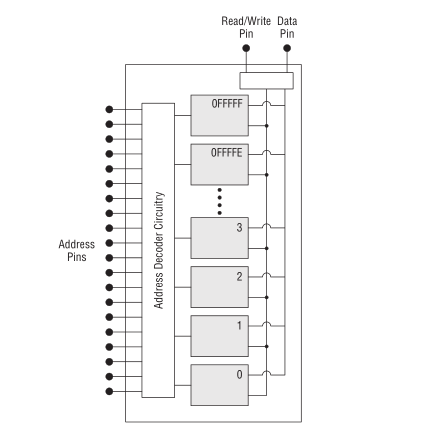
Figure 2: 内存芯片
可以看到这一张芯片上有 20 个叫做地址针脚(address pins),也就是说这张芯片有 \(2^{20}\) 个内存单元.
按照顺序排列,每个内存单元都有自己的编号,从第一个到最后一个的编号排列: \(0 \to 2^{20} - 1\),
\(2^{20} - 1\) 转换为 16 进制就是 0fffff,这些编号就是所谓的内存地址.
一个地址针脚有电压,比如是5v,有电压就表示 1,没有电压就表示 0,通过这个方式表示(编码)一个二进制数字,
然后地址解码元件(address decoder circuitry)根据电压得出这个数字,这个数字就是内存单元的地址.
数据针脚(data pin)是用于传输数据的,它会在内存单元的 input 和 output 之间切换.
当内存单元的 input 被接通,这个时候内存单元就 output 输出 5v 电压,就表示这个内存单元储存的值是 1;
反过来, output 没有电压就表示这个内存单元储存的值是 0.
内存之所以叫做 RAM (random-access memory) 是因为可以在不影响(disturbing)其它内存单元下访问到任意一个内存单元上的数据.
并非所有储存都是这种工作方式,有一种储存硬件叫做 SAM (serial-access device),
比如硬盘,它有一张磁盘和一根针(磁性传感器),数据就是按照圆形排列在这张磁盘上,针就放在磁盘上,
每次读写数据时会旋转磁盘,针会在旋转到的目的位置上读写数据,如果旋转过了就等下一轮.
内存系统
一个地址一位的数据是代表不了什么的,因此后面就把多块内存芯片捆版在一起,这就是今天内存系统的雏形了.

Figure 3: 内存系统
黑色长方形就是前面说过的内存芯片,它们的针脚串联在一起了,
红线表示某一个地址上,这条线通过的所有储存单元的数据就是该地址上储存的数据,
这种方式实现了一个地址上储存多位数据, 比如这图就是一个地址能存 8 位,也就是今天的 1 个字节(byte).
当然今天的内存芯片早就不再是一个地址储存一位了, 而是一个存任意位数据, 个人电脑主流仍然是一个内存地址只储存 1 个字节.
给每个字节赋予唯一地址的内存设计叫做按字节编址(byte addressing).
可以说这张内存能够储存 \(2^{20}\) 个字节或者 \(2^{20} \times 8\) 位.
像这种能够一次读取 8 位(1字节)数据的计算机叫做 8 位计算机 (8-bit computer).
能够一次读取 16 位(2字节)数据的计算机叫做 16 位计算机 (16-bit computer),
如此类推, 32 位计算机, 64 位计算机.
不过记住, 无论一次能够读取多少个字节, 计算机也不是把它们看作一个整体来处理的, 依然是逐个字节处理的, 遵守每个字节有它自己的地址的原则.
比如 32 位计算机是一次读取 4 个字节, 读取 0ffffe 上的 4 个字节就是读取 0ffffe 到 100001 上的 4 个字节.
现在的个人电脑基本上都是这种设计的, 当然也有一些机器的内存是一个地址上可以储存多个字节的.
比如 LC-3 指令集的机器也是 16 位机器, 但是它的内存系统是一个地址储存 2 个字节.
内存与 CPU
内存支持读写操作, 而操作者就是 CPU.
CPU 全称 central processing unit, 是计算机的计算核心.
当用户对计算机进行输入时, CPU 就会按照定义好的规则对输入进行计算, 然后把结果返回给用户.
但并非所有工作都是 CPU 孤身完成的, 当有硬件更加擅长处理的任务时, CPU 会把这些工作交给它们, 然后去处理自己更加擅长的事情.
这些辅助 CPU 工作的硬件叫做外设/次要设备(peripheral), 常见的有键盘, 显示器, 显卡(graphics boards/graphics card), 外部储存.
在它们工作的时候, CPU 或多或少会对内存进行读写, 也就是会频繁有数据在内存和 CPU 之间移动.
内存和 CPU 大概是这样链接的,
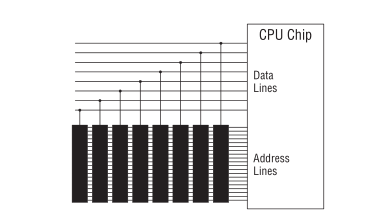
Figure 4: CPU和内存
CPU 给内存系统传入一个目的地址,接下来内存系统会进行其中一个行动:
- 内存系统接受来自
CPU的数据,把数据存入到目的地址上(write); - 根据目的地址在内存系统上找到对应数据,把数据运输给
CPU处理(read).
外设也有自己数据针脚和数据针脚, 不过人们会把外设的地址针脚叫做 I/O 地址针脚(I/O address pin), 和内存系统地址针脚来进行区分.
有些外设甚至还有内存系统, 比如显卡.
在外设工作时, 它们有时候会和 CPU 交换数据, 有时候时外设之间交换数据, 工作方式与 CPU 跟内存系统之间交换数据方式是一样的.
地址的传输时通过地址总线(address bus)来完成的, 也就是上面的地址线(address lines)集合;
数据的运输都是通过数据总线(data bus)来完成的, 也就是上图的数据线(data lines)集合,
不管是哪一种总线, 本质上都是电线(electrical lines)集合.
CPU
CPU 实际上是一个大量晶体管集合.
少量晶体管 作为寄存器(registers), 寄存器一般用于临时储存数据.
和内存芯片上的内存单元不一样的是, 寄存器没有数字地址, 但它们独一无二的名字, 比如 EAX, EDI.
相比在内存上读写数据, CPU 自己内部读写数据的速度更加快, 这是因为数据的移动距离减少了.
寄存器是有分类的, 部分寄存器有着相同属性(commom properties), 而部分寄存器有着其它寄存器所没有的权限(powers).
此外, 大部分外设也是有自己寄存器.
大量晶体管 作为高速缓存(cache), 也是用来临时储存数据的,
缓存更像内存那样拥有数字地址, 相比寄存器来说距离 CPU "中心"更远一点, 但是比内存更近,
也就是说从交换数据的速度来看, 高速缓存没有寄存器高速, 但是高于内存.
而 更大一部分晶体管 更像是一个相互链接的开关,在复杂的开关网络中与更多的开关进行链接,
这些晶体管叫做逻辑门(gates), 用于逻辑运算, 之后会对它们进行介绍.
3. 程序的本质
程序本质上就是数据(data), 这些所谓的数据就是字节集合, 而字节本身就是由 0 和 1 组成的, 这些前面都介绍过了, 就不再赘述.
当执行程序的时候, CPU 就会按这份数据来做出对应的行为.
问题来了, CPU 是如何按照这份由 0 和 1 组成的数据来工作的呢?
CPU 生产商会给 CPU 定义一套模式集(pattern set), 如果二进制序列符合其中某一个模式, 那么 CPU 会执行对应动作.
这套模式集叫做机器指令集(machine instruction set), 每个 CPU 的指令集都不一样.
我们把符合指令集定义的二进制序列叫做机器指令(machine instruction).
比如说 Intel IA-32 CPU 会把 01000000(40H) 这个二进制序列定义为: 让寄存器 AX 上的数据加 1, 然后把和(sum)推回寄存器 AX 上.
当 CPU 接收到 01000000(40H) 时, CPU 就会根据这个设置逻辑门的状态, 1 的时候逻辑门为 up 的状态, 0 为 down.
有些机器指令的长度不止一个字节, 比如 11010110 01110011 (0B6H 073H) 就是把值 73H 加载进寄存器 DH 上.
还有一些更长的定义, 不过这些都不需要记住, 关健时候看 CPU 指令集说明就可以.
总而言之, 程序这数据就是一份机器指令清单, CPU 执行这份清单上的每一条指令.
获取和执行指令
在程序在运行时, 程序早已被载入内存里面了.
当 32 位 CPU (32-bit CPU) 开始执行指令时, 它会先从内存某个地址上获取(fetch)出程序的 4 个字节并加载进 CPU;
然后 CPU 检查这 4 个字节的位的排列模式(pattern), 按照厂商定义的编码集合来执行任务.
对于古老的8位 CPU (8-bit cpu) 来说, 每次只能获取一个字节,
由于一个指令的长度可能会大于一个字节, 所以 8 位 CPU 必须返回到内存上继续读取下一个字节, 直到指令完整到能够执行为止.
CPU 会在执行完一个指令后去执行下一个指令, 而 CPU 有一个叫做指令指针(instruction pointer)的寄存器, 它就是用来储存下一个指令的地址.
每次当前指令执行完, 这个寄存器更新储存下一条指令在内存上的地址.
有一些指令可以控制对指令指针的寄存器储存的地址进行修改, 从而改变 CPU 执行过程, 这就是一些编程语言的跳转语句宏的循环语句原理.
那么逻辑语句呢? 这则是专门有一种 1-bit CPU 寄存器叫做 flags, CPU 根据它们来判断是否执行某一组指令.
CPU 是根据按照时间来执行指令的, 计算机有一个子系统(subsystems)叫做系统时钟(system clock), 本质是一个振荡器(oscillator),
每隔一段固定时间就发射出方波脉冲(square-wave pulses), 放射一次脉冲就是一个时钟周期(clock cycles).
CPU 内部大量的微型晶体管配合脉冲节奏来行动.
早期的 CPU 只能是几个时钟周期才能完成一条指令, 现在的 CPU 可以并行执行指令, 因此可以一个周期执行多条指令.
4. 操作系统
操作系统(operating system)本质上就是一个程序, 在今天是很难看到这个本质的, 因为现在的操作系统和人们平时使用的程序相差甚远.
这就需要回到操作系统刚出来的那个时候了.
那个时候的操作系统只能: 从磁盘读写数据, 还有就是用键盘输入字符, 并且输入在显示器或者打印机上.
在 1979 年有这么一款操作系统叫做 CP/M, 它是当时桌面级操作系统的最高水平(state of the art)了.
CP/M 能完成旧操作系统的工作, 把处理这些工作的程序叫做 BIOS (Basic Input/Output System).
CP/M 能做得更多, 当通过键盘输入程序的名字时, CP/M 就会去磁盘把程序文件加载进内存, 并且把所有权限移交给加载完的程序.
比如运行 WordStar, 它就会被加载进内存, 因为内存有限的原因, CP/M 会悄悄被覆盖, 也就是操作系统被退出了;
每次有程序退出的时候, 该程序会都会重启(reboot)计算机带回操作系统,
所以当 WordStar 退出时, CP/M 会从软盘中(floppy disk)被加载进内存, 然后等用户输入程序名字, 整个过程不会花费很多时间, 大概两秒以下.
可以看出 CP/M 操作系统只是一个调用其它程序的程序.
关于 CP/M 的启动过程可以看 How to start with CP/M 的 What is CP/M 部分, 这里就不多说了.
后来内存越来越便宜了, 微软在 1981 年发布了 PC DOS, 这个系统运行了在 IBM PC 上,
不比 CP/M 大太多, 并且不再需要在启动程序时为了节省内存空间而退出, 而且能够做更多事情.
因此, PC DOS 很快就取代了 CP/M.
时间来到了 1995 年, 微软发布了一款操作系统叫做 Windows 95, 这款系统有了图形界面, 并且它需要运行在32位保护模式(32-bit protected mode)下,
只有 IA-32 体系结构的 CPU 才支持这种模式, 在当时来说至少是英特尔的 80386 CPU 才能使用这个操作系统.
在这个模式下, 操作系统和普通程序之间的地位不再平等, 只要程序在运行, 操作系统就不能退出.
但 Windows 95 并没有充分利用这个模式, 最早充分利用这个模式的操作系统反而是 1991 年的 Linux.
Linux 的核心代码叫做内核(kernel), Linux 的设计是把内核和用户接口(user interface)完全分离.
具体是把系统内存(system memory)划分为内核空间(kernel space)和用户空间(user space).
用户空间上的程序就是今天我们在计算机上所使用的程序, 这些程序不能向内核空间写入任何数据.
两个空间之间的交流需要严格通过内核提供的系统调用(system calls)来完成.
内核空间上的程序可以直接访问硬件(外设), 而用户空间上的程序想访问硬件(外设)则只能通过内核模式的硬件驱动(kernel-mode device drivers)来完成.
这样可以保证恶意程序据破坏系统.
在 1993 年, 微软才发布了设计上类似与 Linux 的操作系统 Windows NT 系列,
这个系列一直延续到了今天的 Windows 10. (Windows 11 也会要到来了.)
BIOS
IBM 把 BIOS 烧录(burn)到一种叫做 ROM (read-only memory) 的特殊内存芯片中,
相比 RAM 的断电丢失数据, ROM 有着在任何情况下(通电与否)都能保留数据的优势,
像 BIOS 这种被烧录到 ROM 上的软件(software)/程序叫做固件(firmware).
计算机的主板(motherboard)上会有一块储存了 BIOS 的 ROM, 这样就能避免每次开机从磁盘加载数千条指令.
BIOS 是计算机启动时第一个被加载的软件, 然后才能加载系统, 因此 BIOS 的芯片坏了就很麻烦.
现在的 BIOS 已经比起以前的 BIOS 已经更加复杂了.
多任务
回到 1995 年的 Windows 95, 它带来了以前所有操作系统所没有的抢占式多任务(preemptive multitasking).
它可以让内存上的所有程序同时运行.
可是前面了解过 CPU 执行程序的过程都清楚, CPU 是逐条执行命令的, 并不能一次执行多条命令, 因此这个"同时运行"是假象.
Windows 95 给内存上的每个程序一小段(slice) CPU 时间, CPU 在这一段时间内执行对应程序的数条机器指令.
整个过程可以想象成下图,

Figure 5: 多任务
CPU 就像一个旋转选择器(rotor), 每次旋转指向到哪个程序上就执行哪个程序, 执行数条执行后就切换到下一个程序, 记录下切换时的程序执行位置,
当下一轮的旋转指向到同一个程序时, 从上一次切换时记录的执行位置继续执行.
操作系统可以给程序定义优先级, 优先级越高的程序, 每次执行的时间就可以越多, 反之越少.
这里的程序是指用户空间和内核空间的程序总和,一个成熟操作系统的结构应该是这样的.
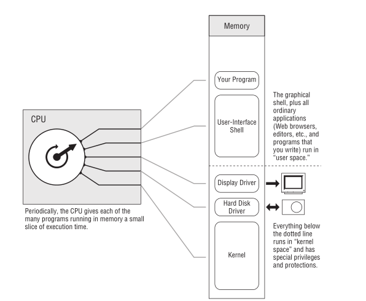
Figure 6: 成熟的操作习系统
CPU的后续发展
在 2000 年初, 出现了一种能够使用两个 CPU 的计算机,
Windows 2000/XP/Vista/7 和 Linux 都提供对称多处理器结构(symmetric multiprocessing)机制, 简称 SMP,
这种机制允许一台机器同时使用多个 CPU 芯片. 这里的"对称"是指计算机内的所有 CPU 是相同的.
在大部份情况下, 一旦有两个 CPU 可用, 操作系统会让一个 CPU 运行操作系统的代码, 另外一个运行用户模式应用(user-mode applications).
随着技术的提高, Intel 和 AMD 可以把两个相同但独立的代码执行单元放在一个 CPU.
分别是 2005 年的 AMD Athlon X2 和 2006 年的 Intel Core 2 Duo, 这是历史上首次出现双核 CPU (Quad-core CPU).
在 2007 年, 4 核 CPU (Four-core CPU) 也开始普及.
5. 内存寻址(上)
对内存寻址有一个深入的理解(The skill of assembly language consists of a deep comprehension of memory addressing)是掌握汇编的必要基础.
写汇编的大部分时间都是和内存打交道.
所谓的内存寻址就是要让 CPU 定位到正确的内存地址上.
在计算机的发展过程中, x86 架构诞生出了很多种内存模型(memory model), 每种模型的寻址方式是不同的.
这其中有三个内存模型是非常经典的, 按照时间升序来排列是: 实模式平面模型(real mode flat model), 实模式分段模型(real mode segmented model)和保护模式平面模型(protected mode flat model).
很多其它内存模型都是它们的变种, 实模式分段模型的变种尤其多.
在 32 位 Linux 上编程, 基本上就只用到保护模式平面模型, 不过我们也会去了解另外两个模型.
我们把 实模式平面模型 和 实模式分段模型 统一称实模式(real mode).
实模式平面模型已经老到退休了;
实模式分段模型对于程序员来就是一个非常复杂麻烦的东西, 偏偏 DOS 的巅峰时期就用的这个模型;
保护模式平面模型需要 IA-32 架构的 CPU 支持(前面有提到过).
实模式平面模型和保护模式平面模型非常相似, 可以把前者看作是后者的缩小版(in miniature), 如果能够掌握前者, 那么掌握后者也是一件容易的事情.
内存模型越复杂, 开发的难度就越大.
Win 9x 经常奔溃极有可能是因为它有一个怪胎内存模型, 可能是上面三种模型中两种的结合体, 事实到底是如何, 恐怕连微软自家的员工也不知道了.
从 8080 内存模型到实模式分段模型
Intel 8080 是 8-bit CPU, 8-bit 是指 CPU 每次读取一个字节, 或者说每次寻址一个字节,
它有 16 条地址线, 也就是它支持的内存的针脚数量最大为 \(2^{16}\), 也就是说它的寻址范围是 0 到 \(2^{16}-1\).
但是那个时候大部分的计算机只有内存基本都是 4K, 8K 字节(这里的 4k 表示 4000, 8k 表示 8000),
这也意味着 CPU 有一些地址线是空闲的, 它们没有链接到内存上, 因此 CPU 的可寻址范围还是决定于内存.
CP/M-80 是使用 Intel 8080 最多的操作系统, CP/M-80 位于内存的顶部,
有时候为了方便被包含在 ROM 里, 但大部分时间是为了方便给临时程序(transient programs)预留运行空间, 让它们有一致的运行起点.
当 CP/M-80 从磁盘加载一个程序时, 程序会被加载到 0100H (256)的位置.
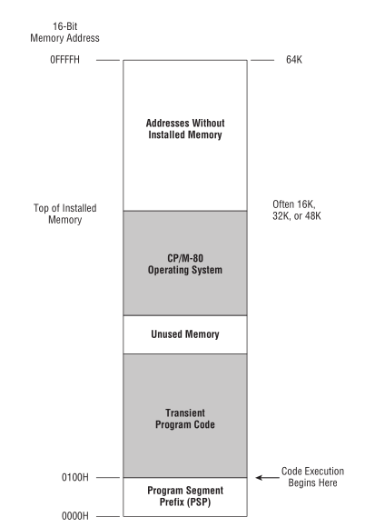
Figure 7: 英特尔-8080 内存模型
内存的前 256 个字节叫做程序段前缀(program segment prefix, 简称PSP), 用来储存各种零散的信息(odd bits of information),
以及作为程序的磁盘输入/输出(IO)的通用内存缓冲区(general-purpose memory buffer).
可执行代码只有在操作系统对 0100H 寻址才会被运行.
这套寻址方案十分简单(simple), Intel 这么做的原因是为了方便开发者把 CP/M-80 的软件从 Intel 8080 翻译到 Intel 8086 上,
这个翻译的过程叫做移植(porting).
Intel 8086 是 x86 系列的开始, 它是 16-bit CPU, 每次读取 2 个字节,
有 20 条地址线, 也就是可寻址范围最大是 0 到 \(2^{20}-1\), 是 Intel 8086 的 16 倍.
两个 CPU 差别如此之大, 又是如何实现移植的呢?
Intel 把 Intel 8086 所支持的最大内存看作 16 段 64K 的和 1M;
64K 是 Intel 8080 所支持的最大内存, 把每一段(segment)看作是一个 Intel 8080 内存系统.
Intel 8086 有一类寄存器叫做段寄存器(segment registers), 用来记录(或者说指向)内存地址.
它们指向的是内存上某个"东西"的起始地址, "东西"可以是数据/指令/一个段的起始位置, 也可以是其它东西.
而段的起始位置, 恰好就是一个 Intel 8080 内存地系统的起始地址.
CP/M-80 的程序可以在 64K 区块内存上运行.
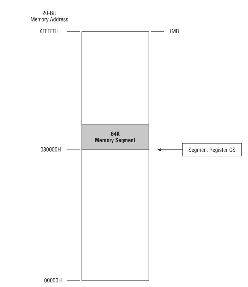
Figure 8: 英特尔-8086 内存模型
8086 和 8088 有 4 个段寄存器, 指向 64K 区块起始地址的寄存器叫做 code segement, 简称 CS.
你可能有疑问, 这么方便的模型为什么会令人讨厌呢?
因为后来的内存越来越便宜了, 程序对内存的需求也超过了 64K 了, 这意味着一个程序可能需要好几个 64K 区块,
程序需要不停地切换 CS 段寄存器来切换段, 这无疑是增加了程序开发的难度.
这个能访问到内存上的 1M 内存叫做实模式内存(real mode memory),
虽然说最大访问内存是 1M, 但 CPU 每一次只能访问 64K 字节, 就像有一个挡板一样限制 CPU 只能"看到" 64K 字节.
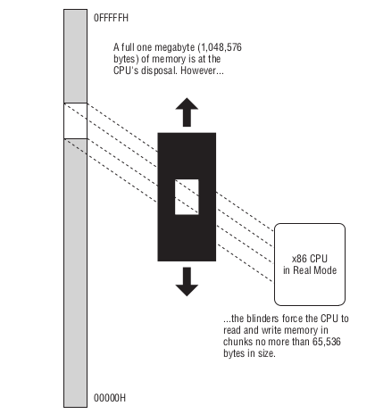
Figure 9: 任何时候只能访问64K个字节
后来的 x86 CPU 能够支持更大的寻址范围, 比如 80386 能够支持 4G 内存,并且不对内存进行分段.
然而,还是有大部分的 DOS 是使用分段技术编写的,为了维持对古老的 8086 和 8088 进行向后兼容(backward compatibility),
新的 x86 CPU 能够将自己限制在老式 CPU 的可寻址范围内,或者说是模拟老式 CPU 的工作方式,来保证这些软件可以运行.
这就是虚拟86模式(virtual-86 mode).
段的正式介绍
前面只是简单地把段看作是内存上区域,实际上还有很多细节需要学习.
在说到实模式分段模型的时候,段就是一个内存区域,它以段落边界(paragraph boundary)的区域.
一个段落(paragraph)就是 16 个字节,和段类似,只是一个段就是 64K 个字节.
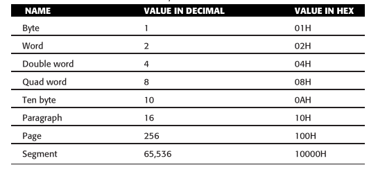
Figure 10: 内存术语
那什么是段落边界呢?所谓段落边界就是可以被 16 整除的内存地址.
按照这个定义,第一个段落边界是地址 0,第二个是地址 10H,第三个是 20H,如此类推.
这并非就是说一个段是从每 16个字节开始,一直贯穿到整 1M 的内存,当然一个段 可以 从任意一个段落边界开始.
可以给段落边界编号,这个编号就是段地址,之所以叫做段地址是因为我们是把段起始位置作为段的地址.
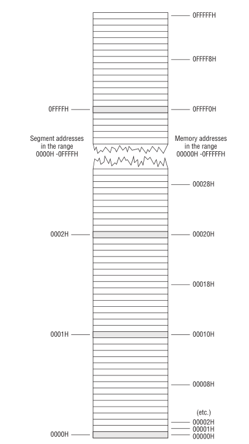
Figure 11: 段地址对内存地址
因此, 1M 内存有 \(2^{20} \div 16 = 65536\) 个段地址.
一个程序可能会使用 4 到 5 个段,每个段会有不同的分工,并且每个段可以在任何段地址上.
每一个段并非固定就是 64K,而是最大 64K,一个段的大小可以是 1 个字节长, 256 个字节长,只要是小于等于 64K 个字节就可以了.
也就是说到段的长度不定,那么在定义一个段时,除了指定起始位置以外还需要指定长度吗? 不需要!
首先,只要指定了段的起始位置,那该地址后面的若干个连续的字节就是段的一部分了,它"按照规定"占用 64K 个字节,
但前面讲过了,段并非都是固定 64K, 也就是说这 64K 个地址并非都会用上,这导致了空间浪费;
其次,段并非某种内存分配(memory allocation),段内储存的东西是不会受到保护的;
最后,不要忘记段可以出现在任何段地址上.
结合这三点可以得出一个事实: 段之间可以相互重叠(overlap),这样可以提高内存的使用率.
想要真正理解段,那么就需要理解它是怎么用的,不过在这之前需要明白寄存器的一些细节.
我们口中的 "n-bit CPU" 的 "n-bit" 实际上是指 CPU 的通用寄存器的有 n 位,
这也解释了为什么说 8-bit CPU 每次取 1 个字节(8 bits), 16-bit CPU 每次取 2 个字节(16 bits).
储存内存地址是寄存器最重要的工作,这个就有一个问题了,来回想一下 8086 这个有 20 个地址线的 16-bit CPU,
它是如何用一个 16 位大小的寄存器来储存一个 20 位大小的内存地址呢?答案是不能这么做,而应该是一个 20 位大小的内存地址用 2 个寄存器储存.
每个字节都是位于段内,一个字节的完整地址应该由段地址(segment address)和字节到段起始位置的距离组成,
字节到段起始位置的距离叫做偏移地址(offset address),完整的地址应该是 segment adderss:offset address,
就像街道地址一样,什么街道多少号,不过还是有点区别,那就是同一个字节可以有多种方式描述它的完整地址.
一个字节可以同时在多个段上,因此同一个字节可以有多个地址,比如,下面的 MyByte.
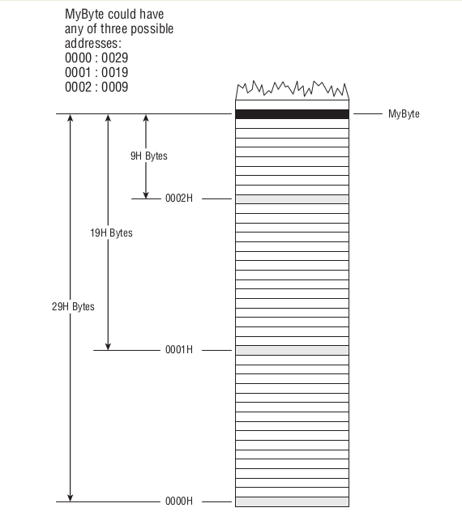
Figure 12: 同一个字节,不同地址
寄存器
一个 CPU 里面的寄存器是有分工的,不同寄存器负责的工作不一样,
比如前面提到的段寄存器就是专用型,只保存段地址;
有一些寄存器没有规定负责某方面的工作;
有寄存器用来记录程序执行的位置;
再有一些寄存器专门用来做逻辑判断.
我们会学习所有类型的寄存器,这是掌握汇编语言的重要环节.
和内存一样,每个寄存器都有自己的地址的,只是它们不是用数字地址,而是用名字作为地址,
而它们的名字就能够反映它们的作用.
我们从 段寄存器 (segment registers) 开始,段寄存器有 4 类.
在 8088, 8086 和 80286 这三个 CPU 上,每个 CPU 都只有 4 个段寄存器;
而 386 和后来的 Intel x86 CPUs 在这 4 个的基础上增加多了 2 个.
还有一点要清楚: 不管是在什么 CPU 上,段寄存器的大小都是 16 位,包括后面的 32 位 CPU.
每个段寄存器的分工也有区别,接下来看看有哪些段寄存器,以及它们分别是做什么的:
CS (code segment),表示代码段.
代码段就是储存程序的机器指令的区域,一个程序 可能 有多个代码段,这取决于内存模型.
在运行程序时,执行的指令就存在于这片区域的某个偏移位置上,
CPU需要知道当前在执行哪一个程序的哪一个代码段,所以 CS 需要记录当前指令所在段的段地址.在不同内存模型下,
CS的使用不太一样.在实模式分段模型下,
CS的值会经常被更新;在平面模式下,
CS的值永远不会在绑定程序时发生改变;在保护模式下,所有段寄存器都由操作系统安排,并不会被普通的程序改变.
DS (data segment),表示数据段.
在运行程序时,会把变量和其它数据放在某一些段上,这些段就是数据段.
一个程序可能会有多个数据段,但
CPU一次只能使用一个,所以 DS 需要记录当前数据段的段地址.SS (stack segment),表示堆栈段(我不知道为啥翻译成堆栈,明明就是只有
stack没有heap).每个程序只有一个堆栈段,这个段是用来 临时 储存数据和内存地址的.
堆栈段的行为与名为栈的数据结构的一样,或者说它就是一个栈.
弹匣就是栈的一个实例,填充子弹需要从弹匣口推入(push),从里面取出子弹是从弹匣口弹出(pop),
哪个子弹最后推入,那么从弹匣取子弹时,它就是第一个弹出,俗称 LIFO (last in first out),最后装的子弹永远在最上面.
推入和弹出就是弹匣支持的的两个操作,在栈里面叫做进栈(PUSH)和出栈(POP).
我们把入口叫做栈顶(top of the stack,简称 TOS), 也就是弹匣口, 弹匣的底部叫做栈底(bottom of the stack).

Figure 13: 栈
然而上面这图和
x86栈是相反的,x86的栈顶所处的内存地址比栈底的低,SP寄存器储存指向的永远是栈顶,也就是最新进栈"物品"在堆栈段上的地址, 也就是栈是往下增长的.

Figure 14: x86 栈
那么它和同样储存数据的数据段有什么区别呢?可以这么理解,
数据段上的数据是在程序文件里面就已经声明和定义好的,
而堆栈段上的数据是在程序运行时产生的,这些数据可能会在运行到某一个阶段时消失.
目前只要理解到这样就可以了,关于堆栈段的说明不是两三句就能描述清楚的,后面会做也写补充.
ES (extra segment),表示附加段.
附加段就是一个用来储存内存地址的附加段.
FS 和 GS,这两个段都是附加段,它们的名字就是表示它们是创建在 ES 之后(E,F,G).
这两个段是只有
386以及后来的x86 CPU才有的.
接下来是 通用寄存器 (general-purpose registers),
通用寄存器并不像段寄存器那样专门专注某一项工作,虽然说在实模式下也能够强迫段寄存器完成储存段地址以外的工作,
但是大部分的一般工作都是由通用寄存器来完成的,比如保存偏移地址来配合段地址标注字节地址;保存计算用的数值;位偏移操作(bit-shifting),算术运算以及其他各种事情.
通用寄存器的任意一个都可以完成上面这些工作,但是不同的汇编器/汇编语言会有自己的用途规范,规定某个通用寄存器用来做某件事情,
这一点需要记住.
16-bit CPU和32-bit CPU的最大区别在于通用寄存器的大小不一样,n-bit指的就是通用寄存器的大小.虽然说通用寄存器都是完成一般型任务,但是存在一些通用寄存器,有一些只有它们才能处理的工作,这些工作实际上是老
16-bit CPU的限制,对于新的
32-bit CPU来说也是一般型任务.在
32-bit CPU里面,通用寄存器分为三大类:16-bit通用寄存器,32-bit通用寄存器和8-bit寄存器.不过并不是说一个
32-bit CPU有着三个不同且独立的寄存器集合,8-bit寄存器和16-bit寄存器只是32-bit寄存器上区域的名字.可以这么理解,新
CPU只是在旧CPU的寄存器基础上进行拓展.有 8 个
16-bit通用寄存器:AX,BX,CX,DX,BP,SI,DI和SP,SP比起其他通用寄存器没那么通用.这些寄存器原本是出现在
8086,8088和80286上面的,可以把能 16 位或小于 16 位的数据存放在上面.在 1986 年,
Intel把寄存器的大小拓展到 32 位,并且给了它们新的名字:EAX,EBX,ECX,EDX,EBP,ESI,EDI和ESP.像下面的
SI,DI,BP和SP,在定义寄存器的同时不抛弃老的寄存器.
Figure 15: 32位寄存器
因为寄存器的名字就是地址,因此只要通过旧寄存器名字就可以访问到低 16 位,
另外 4 个通用寄存器
EAX,EBX,ECX和EDX也是这样的,但是这 4 个比较特殊,因为
AX,BX,CX和DX自己本身也会均分成两半,均分的两半也是有自己的名字的.那么是怎么表示呢?其实很简单,我们把高 8 位用
H表示,低 8 位用L表示,举个例子,访问
AX的高 8 位就是AH, 低 8 位就是AL.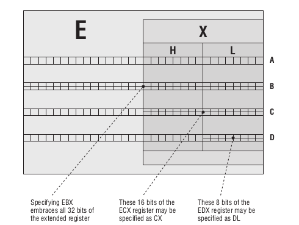
Figure 16: 8位,16位和32位寄存器
下一个是 指令指针寄存器, 通常叫做
IP, 也叫做程序计数器(program counter), 简称PC.在
16-bit CPU里面它的大小为16位,在32-bit保护模式下叫做EIP,大小为32位.它自己就是一个类型的寄存器,它真的只能做一件事情: 储存当前代码段里面下一个要被执行指令的偏移地址.
当执行一个程序时,
CPU会使用IP来跟踪当前代码段中的位置,也就是程序当前执行的位置.每次执行一条指令后,
IP就会增加一定的字节大小,这个大小就是刚才执行的指令大小,这样IP就能够指向下一个指令的起始位置了.每条指令大小都不一样,通常是 1 到 6 个字节,有一些神秘指令的大小更大.
在实模式分段模型下,
CS和IP能够补全一个20位大小的指令地址;在平面模式下,
CS是被操作系统控制的,IP独自指向指令地址;比如在
16-bit平面模式下,IP可以在指向64K个内存地址的任意一个;而在
32-bit平面模式下(也就是保护模式平面模型),IP拓展为EIP,EIP可以指向4G个内存地址的任意一个.IP是唯一一个不可 直接 读取和写入的寄存器,虽然有一些方法是可以获取到IP的值,但是这个值的使用价值没有那么大.
最后一个就是 标志寄存器 (flags registers) 了.
在
16-bit CPU下它的大小为16位,名字叫做FLAGS;在32-bit CPU下它拓展位为32位,名字叫做EFLAGS.寄存器里面的大部分位(bits)都是作为"1位"寄存器来使用的,这些"1位"寄存器都有自己的名字,比如
CF,DF,OF等等.当程序在执行测试时,它所测试的是标志寄存器上中的某1个位,并非整一个寄存器,每个位的值只有两种可能: 1 或 0.
所以对于汇编语言来说,一个测试就是一次2选1.
当然,程序一般都会根据若干个"1位"寄存器上的值来进行决定下一步的行动,这样选择结果就不止2种了.
6. 内存寻址(下)
三个内存模型的主要区别在于寄存器的使用上,下面会直观地介绍它们的区别.
实模式平面模型
在实模式平面模型下, 程序和它的数据 只能 在一个 64K 区域内活动, 这意味着程序能做的事情十分有限.
(其实就是前面的 Intel 8080 内存模型).
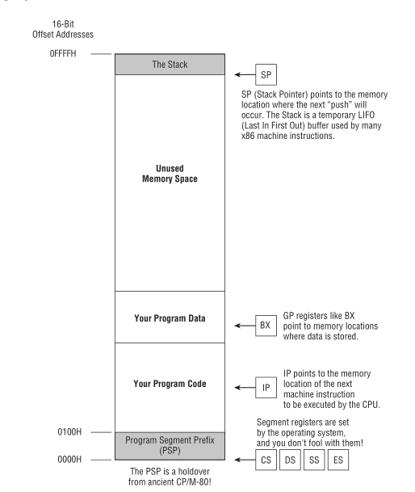
Figure 17: CP/M-80 与实模式平面模型
因为 16-bit 寄存器可以储存从 0 到 65535 的任意值, 比如 BX,
也就是说它可以定位到程序内存区域的任意一个地址, 可以不需要使用段寄存器来进行定位.
在这个模式下段寄存器就由操作系统来把握, 在运行程序的时候操作系统会自己设置它的值, 程序员不需要和段寄存器打交道.
实模式分段模型
前面就已经讨论过实模式分段模型的一些概念了, 这里就不多说什么了.
不过还是提一句, 段地址并非真的内存地址, 它就是一个概念.
段地址是因为一个 16-bit 寄存器无法储存一个 20-bit 内存地址才存在的,
目的就是让 CPU 通过它和偏移地址计算出真正的内存地址: \(segAddr \times paragraph + offsetAddr\).
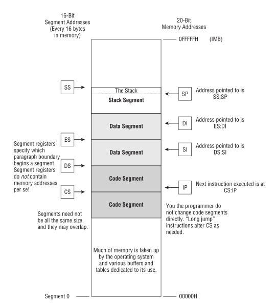
Figure 18: DOS与实模式分段模型
可以看到这个程序有两个代码段, 但是 CS 寄存器只有一个, 它必须要指向当前代码段.
这意味着需要在两个代码段之间进行跳转, 不过并非让程序员直接改变 CS 的值,
而是调用一个叫做 jumps 的指令来完成这项工作, 实现代码段之间跳转.
有一件事情要记住心上, 在实模式下, 会有操作系统的"碎片"和程序一起混合存储在内存上,
如果 CPU 是 8086 和 8088 的话就没有这个问题, 否者开发人员需要小心不要破坏系统内存.
这是十分危险的, 因此 Intel 想办法给系统的内存提供保护, 避免应用程序以外对系统照成伤害,
这里的应用程序是指操作系统和驱动以外的程序.
最早出现这个特性的 CPU 是 1986 年的 32-bit CPU 80386, 这就是保护模式的名字的由来.
保护模式平面模型
应用程序自身是无法利用保护模式的, 在运行应用程序前, 必须要先由操作系统建立和管理一个保护模式.
微软也是在 1994 年的 Windows NT 上才使用上保护模式;
而 Linux 在 1992 年面世以来就使用的保护模式.
Windows 的应用程序本质上(in nature)并不需要图形化, 编写保护模式程序的最简单方法是创建控制台程序(console applications),
运行在一个叫做控制台/终端(console)的文本模式程序(text-mode programs)中.
控制台程序使用的就是保护模式平面模型.
而 Linux 的默认模式就是文本控制台(text console), 所以 Linux 创建保护模式的程序更加简单.
两者的内存模型十分接近.

Figure 19: 保护模式平面模型
在保护模式平面模型中, 段寄存器依然存在, 但是已经由操作系统接管了, 成为操作系统的一部分.
这个模式下, 每个程序有独立且连续的 4GB 的内存空间, 也正好是 \(2^{32}\) 个字节.
你可能会奇怪, 32 位 CPU 的寻址能力也就是 \(2^{32}\), 既然一个程序就能用光所有内存了, 还怎么运行多个程序?
程序所看到的内存视图并不是物理内存的视图, 而是一个叫做虚拟地址空间(virtual address space)/虚拟内存空间(virtual memory space)的视图.
Linux 上有一项叫做 Swap 的技术, 把程序的内存视图储存(映射)到硬盘上.
利用这项技术, 可以让不活跃的程序 A 的内存视图储存到硬盘上, 给需要活跃的程序 B 让出空间;
在 B 不活跃, A 活跃时, 就把 B 的内存视图储存到硬盘上, 把 A 从硬盘加载到内存上.
事实上, 程序的虚拟内存映射到物理内存上时是不连续的, 操作系统把程序划分成多块, 把要执行的程序块加载到内存中, 不需要执行的程序块储存到硬盘上, 所以 4G 内存足够"同时"容纳多个程序.
如果计算机的物理内存超过 4G 内存, 那么操作系统要在物理内存里面规划出一块 4GB 大小的连续内存空间运行程序, 而区域的规划就是段寄存器的工作了: 从哪里开始, 到哪里结束;
如果不够 4G 那就只能有多少用多少, 无需规划; 基本上不能对段寄存器进行读写了.
这 4G 虚拟内存并非全归程序所有, 还有一部分是给操作系统准备的, 操作系统的这块内存是被保护起来的, 一旦程序越界访问了这块区域, 就会触发运行时错误(runtime error).
虚拟内存技术的细节太多, 足够写出另外一篇文章, 况且目前的了解程度足以, 如果上面内容不足以让你对虚拟内存有了解的话, 个人推荐 内存管理-内存地址 和 内存管理-虚拟内存 这两个视频.
其实从大体上来看,保护模式平面模型和实模式平面模型还是挺像的.
在实模式平面模型下, 每个程序拥有操作系统分配的 64K 内存的使用权;
段寄存器可以被程序员操作(,就这一点不太像);
通用寄存器能够储存的地址范围比较小.
64-bit CPU
Assembly Language Step-by-Step: Programming with Linux 3rd Edition 这本书写的时候是处于 32-bit CPU 主流的时代,
书本教学使用的是 32-bit CPU, 不过作者已经说过若干年之后就是 64-bit CPU 的时代, 而我现在就处于这个时代.
这就意味着按照书本上的内容可能会对照不上, 因此我特意去查了一下 64-bit CPU 所支持的内存模型: 长模式(long mode flat model).
发现它能够兼容保护模式的程序, 对一些旧的 32-bit 寄存器进行拓展以及新增加了一些寄存器等等, 具体可以看这里: x86-64.
也就是我们先可以按照书本上来学, 基本上是可以对得上, 后面学习长模式.
7. 使用汇编语言开发的流程(上)
编程本质上就是处理文本文件, 使用若干个对于人类而言的可读(human-readable)文本文件, 使某些工具根据这些文本进行处理, 最终得到一个可执行程序文件, 这个文件可以在当前系统下运行.
根据文本文件转换出二进制文件(binary files)的这个过程叫做翻译(translation), 完成这项工作的程序叫做翻译器(translator).
输出的二进制文件可以是可执行程序, 也可以是其它类型的二进制文件.
在计算机里面所有文件都是二进制文件, 程序就是一个例子.
在 什么是汇编 就有提到过程序是由 0 和 1 组成的(, 当然也提到 0 和 1 本质上对应电压位).
也就是说二进制文件就是一块由 0 和 1 组成的数据.
文本文件是一种比较特殊的二进制文件, 可以在某些软件下呈现出于人类使用的文字.
作为输入的文本文件叫做源文件(source files).
有一种翻译器是专门生成可执行程序, 叫做程序翻译器(program translator), 这个时候源文件叫做源代码文件(source code files),
生成的二进制文件叫做目标代码文件(object code file).
程序翻译器也是有分类的, 这是按根据代码文件所使用语言类型来进行划分的.
当源代码文件都是使用 C 这样的高级语言编写的, 那么这种程序翻译器叫做编译器(compiler), GCC 就是一个例子;
实际上, 把 GCC 叫做编译器驱动器更加准确, 后面也会提到.
如果源代码文件使用的是汇编语言(assembly language), 那么这种程序翻译器叫做 汇编器 (assembler), NASM 就是一个例子, 同时也是这本书的教学例子.
我们称呼 "汇编翻译器把汇编语言翻译成目标代码" 的这个动作为汇编(assembling).
基本上大部分编译器都是先把高级语言翻译成汇编语言源代文件, 然后使用汇编器把这份得到的汇编码翻译成到目标代码,
这就决定了汇编语言比高级语言有更高的控制权, 因为编译器会把每条高级语言的语句生成规定数量的汇编语言语句,
有些生成的汇编语句在某些情况下是"多余的", 而程序员无法改变这种情况, 除非直接优化生成的汇编语言源文件.
有些编译器会实现一个叫做内联汇编(in-line assembly)的功能, 来让程序员重新获得这种控制权.
汇编语言 (assembly language)
很多人认为汇编器能够把源代码文件的一行翻译成一个机器指令, 这是 不对 的.
源代码文件的代码行只是告诉汇编器的怎么生成机器指令而已, 其本身是汇编器的指令, 并不对应 CPU 的指令, 也不会被翻译成任何机器指令.
换句话说, 汇编语言是一种能够控制汇编器生成机器指令的语言, 不同汇编器所使用的汇编语言都不一样.
汇编语言的语法分两大类: AT&T 和 Intel, 这两个语法只是一个抽象的规范, 并不是具体定义, 这么说可能不太好理解, 举个例子.
接下来要学习的 NASM 使用的就是 Intel 语法, 而它的一个竞品 MASM 也一样.
虽然使用同一种语法, 但是两者支持的指令是不一样的, NASM 能够汇编的代码不能够被 MASM 汇编, 反过来也一样.
然而即便它们支持的指令一样也不行, 它们对语法的具体实现也是有差别的, 汇编器并不能正确解析源代码.
基本上每机器指令(instruction)都是这样的形式: 一个操作码(operation code/opcode)后面跟着若干个操作数(operands).
每个 CPU 的操作码在汇编语言里面都会有对应的助记符(mnemonic), 因为二进制序列不太好阅读.
比如操作码 9CH 的作用是把标记寄存器(the flag register)压进栈里面, 它对应的是 PUSHF, PUSHF 就比 9CH 更容易记忆;
再比如,
mov eax, 4 ; 04H specifies the sys_write kernel call mov ebx, 1 ; 01H specifies stdout mov ecx, Message ; Load starting address of display string into ECX mov edx, MessageLength ; Load the number of chars to display into EDX int 80H ; Make the kernel call
这里的助记符 MOV 需要接收两个操作数(operands).
还有些助记符是不接受操作数的, 比如前面的 PUSHF.
汇编器最重要的工作就是从源代码文件读取代码行, 然后把对应的机器指令写入目标代码文件中.
我们这里需要时刻区分开汇编器的指令和机器指令, 这个需要自行根据上下文判断.
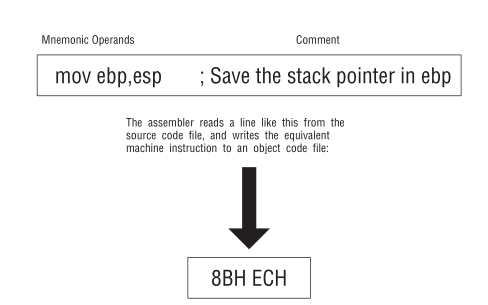
Figure 20: 汇编器的工作
指令右边的以";"开头一直到行尾为止的文本叫做注释(comment), 它的用户就是标注这一条指令的意图是什么.
在任何时候编程都需要考虑代码可读性, 不要几个月后回来阅读编写的代码就不知道它们是怎么设计的, 这就是传说中的"只写"(write-only)代码.
高级语言可以通过给变量/函数取符合它们作用的名字等方式来告诉读者变量/函数是做什么的, 必要时候哈可以使用注释帮助说明.
然而汇编语言不像高级语言, 它只能使用注释来告诉读者指令的意图, 所以使用汇编语言编程要习惯用注释,
况且注释只会添加源文件的大小, 并不会被复制进目标代码文件里面.
目标代码和链接器
现代的汇编器生成目标文件并非就是可执行程序, 而是源代码和可执行程序之间的一个中间步骤(intermediate step),
这个中间步骤的目标代码文件叫做目标模块(object module), 它们不能像程序一样可执行,
还需要多一个叫做链接(linking)的步骤, 完成这个工作的程序叫做链接器(linker), 它的作用是把所有目标模块文件变成一个可执行程序.
这么做的原因是为了能够把大源代码文件拆分成多个更加小的源代码文件, 保持文件大小以及复杂度的可管理性.
因此创建可执行程序的整个过程是这样的:
汇编器对每个源代码文件进行汇编, 然后把所有目标代码文件进行链接为一个可执行程序.

Figure 21: 汇编器和链接器
但这并不意味着只有一个源代码文件的情况下就不需要链接器, 链接器并非只是单纯地把东西块链接起来,
它保证了目标模块外的函数调用能够正确到达对应的目标模块, 以及所有内存引用能够正确引用到该引用的地方,
而且这些保证都是必要的.
一个目标模块可能包含以下信息:
- 程序代码,包括已命名的过程(named procedures);
- 对模块外的已命名过程的引用(references);
- 预先赋了值(比如数字和字符串)的已命名数据(named data)对象;
- 没有赋值的已命名数据, 相当于空白空间, 等程序员后续使用;
- 对模块外数据对象的引用;
- 调试信息(debugging information);
一些用来帮助链接器创建可执行程序的杂项(odds and ends);
我们把这些已命名项(item)的名字叫做符号(symbol).
为了把多个目标模块链接成一个可执行程序, 链接器需要先建立一个叫做符号表(symbol table)的索引,
这个索引记录了它链接的每一个目标模块中的每个符号, 以及哪个符号指向哪个模块内部的哪个位置.
然后链接器建立一个映像(image), 它就是程序被加载到内存后的模样.
建立完毕后, 它会被写入到硬盘/磁盘里面成为可执行程序, 当操作系统运行它的时候, 程序就会按照映像的那样被加载进内存.
在建立映像中, 最重要的一件事情是链接器使用 相对地址 来进行引用.
目标模块允许引用其它模块的符号(symbol), 这种引用叫做外部引用(external references).
这些引用就像洞一样, 可以在后续被填补上, 这些符号所处的模块还没有被编译, 甚至还没被编写.
链接器在生成映像的时候, 它知道符号在映像中的位置, 它知道在什么地方放入真实地址.
还有就是调试信息, 先解释一下什么是调试(debugging),
所谓调试就是程序员定位发生错误的地方, 以及修正错误.
调试信息就是帮助程序员完成调试工作的信息, 它是可选的,
在进行汇编编译时可以把部分源代码嵌入到可执行程序里面, 这部分源代码就是调试信息,
这样程序员在调试的时候就能够看到数据项(data items)的名字.
程序员要使用一个叫做调试器(debugger)的工具完成调试, 这要求调试的程序必须包含了调试信息.
程序每秒都会执行成千上百条机器指令, 调试器允许开发人员控制程序的运行进度, 一个时间内执行一条指令, 观察一条指令的效果.
链接过程有很多细节值得了解, 目前就先了解到这里, 后面会有章节详细介绍.
可重定位性
早期的计算机系统规定所有程序运行时要被加载到一个特定的内存地址, 像
CP/M-80,这个地址是100H,每次程序运行的时候, 程序的数据会被加载到同一个地方, 每次运行都在这个地址上访问数据, 这样才能正确引用到数据.
后来在
8086以及针对8086的操作系统的出现改变了这一切, 程序不需要每次都加载到一个固定地址上,当然程序的数据也不是加载在一个固定地址上, 那么又是如何每次运行程序都能正确引用到数据呢?
数据每次都会被加载到相对程序起始位置固定的偏移地址上, 比如程序被加载到
02C0H上,某一个数据是相对于程序起始位置偏移
0010H个地址, 也就是说数据的地址是02D0H;假设下一次运行时, 程序被加载到了
03D0H上, 那么数据地址就是03E0H,要每次都能正确引用到这个数据, 那么只要保持数据的偏移地址不变, 每次通过偏移地址引用数据就可以了.
这个特性叫做可重定位性(relocatability), 是现代计算机系统必要部分, 处理可重定位性可能占据了链接器的工作的一大部分.
动态链接库具备这种特性, 后面会稍微提一下.
8. 使用汇编语言开发的流程(下)
整个开发流程大概就是这样,

Figure 22: 使用汇编语言进行开发的流程
这里需要明白几个概念: 错误(errors), bugs 以及警告(warnings).
在上图可以看到有汇编器错误(assembler errors)和链接器错误(linker errors),
它们都是在生成可执行程序的过程中发生的,导致程序生成的中断,这就是第一个概念错误.
Bugs 是指 在程序运行时 发生的问题,程序没有按照程序员原本的意图来执行,
如果是做了操作系统所禁止的事情,操作系统会发出错误信息以及作出处理,这种错误叫做运行时错误(runtime errors),也是错误的一种,
和前面的汇编器错误和链接器错误不一样的是,汇编器错误和链接器错误分别是由汇编器和链接器发出的.
警告是在汇编过程中汇编器发出的,告诉程序员源代码里面有些地方有潜在风险,并不会造成目标模块生成中断,
不过 可能 会造成一些 bugs,总得来说还是需要关注被警告的地方.
说了一大堆,最后还是需要实际操作一遍来找感觉.
让我们来实践书上给出的例子,不过我改变了一些工具上选择.
首先我们是运行在 64-bit CPU 的 x64 Linux 操作系统上进行实践的,汇编器使用的是 NASM,链接器使用的是 ld,
书本上使用 kdbg 作为调试器,它是 gdb 的前端, gdb 是 Linux 内置的,因此我选择直接使用 gdb.
先 准备好源代码文件 (这里我们直接从书上获取源代码,顺便做了一些注释上的修改):
; Executable name : EATSYSCALL ; Version : 1.0 ; Created date : 1/7/2009 ; Last update : 1/7/2009 ; Author : Jeff Duntemann ; Description : A simple assembly app for Linux, using NASM 2.05, ; demonstrating the use of Linux INT 80H syscalls ; to display text. ; Build using these commands: ; nasm -f elf -g -F stabs eatsyscall.asm (this is for 32-bit CPU) ; or ; nasm -f elf64 -g -F stabs eatsyscall.asm (this is for 64-bit CPU) ; ld -o eatsyscall eatsyscall.o SECTION .data ; Section containing initialized data EatMsg: db "Eat at Joe’s!", 10 EatLen: equ $-EatMsg SECTION .bss ; Section containing unintialized data SECTION .text ; Section containing code global _start ; Linker (ld) needs this to find the entry point! ; The name of entry point MUST be _start! ; otherwise error will be raised during linking _start: ; A function definition, named _start nop ; This no-op keeps gdb happy (see text) mov eax, 4 ; Specify sys_write syscall mov ebx, 1 ; Specify File Descriptor 1: Standard Output mov ecx, EatMsg ; Pass offset of the message mov edx, EatLen ; Pass the length of the message int 80H ; Make syscall to output the text to stdout mov eax, 1 ; Specify Exit syscall mov ebx, 0 ; Return a code of zero int 80H ; Make syscall to termninate the program
一个可执行文件实际上是由多个节(section)组成的, 汇编器的工作就是根据汇编码翻译字节, 并把它们填充到不同的节里面, 最后组成文件;
汇编器并非是一次性把每个节填充完毕, 它可以在这个节里面填充一点, 然后往另外一个节里面填充一点, 如此来回切换.
NASM的SECTION指令就是用来切换或定义节的, 比如这个例子的节处理顺序就是.data -> .bss -> .text.如果把上面的汇编码改成如下:
; Executable name : EATSYSCALL ; Version : 1.0 ; Created date : 1/7/2009 ; Last update : 1/7/2009 ; Author : Jeff Duntemann ; Description : A simple assembly app for Linux, using NASM 2.05, ; demonstrating the use of Linux INT 80H syscalls ; to display text. ; Build using these commands: ; nasm -f elf -g -F stabs eatsyscall.asm (this is for 32-bit CPU) ; or ; nasm -f elf64 -g -F stabs eatsyscall.asm (this is for 64-bit CPU) ; ld -o eatsyscall eatsyscall.o SECTION .bss ; Section containing unintialized data SECTION .text ; Section containing code global _start ; Linker (ld) needs this to find the entry point! ; The name of entry point MUST be _start! ; otherwise error will be raised during linking _start: ; A function definition, named _start nop ; This no-op keeps gdb happy (see text) mov eax, 4 ; Specify sys_write syscall mov ebx, 1 ; Specify File Descriptor 1: Standard Output mov ecx, EatMsg ; Pass offset of the message mov edx, EatLen ; Pass the length of the message int 80H ; Make syscall to output the text to stdout SECTION .data ; Section containing initialized data EatMsg: db "Eat at Joe’s!", 10 EatLen: equ $-EatMsg SECTION .text ; Section containing code mov eax, 1 ; Specify Exit syscall mov ebx, 0 ; Return a code of zero int 80H ; Make syscall to termninate the program汇编器处理节的顺序就变成了
.bss -> .text -> .data -> .text.文章后面的汇编例子统一采用"写在一起"的风格.
一个可执行文件最少要有 .text, .data 和 .bss 三个段, 下面分别来介绍一下.
其中, .data 包含了已经初始化的数据(initialized data),初始化数据是指在程序运行前就有值的数据,
这些值是可执行文件的一部分,因此 .data 会影响可执行文件的大小.
来看一下 .data 部分的代码, \(EatMsg\) 和 \(EatLen\) 就是初始化数据的变量,这里还可以把 ":" 去掉,除去一些特殊情况外,两种定义方式都是一样的.
DB 指令是 "Define Byte" 的缩写,作用是预留一字节的空间, 还有其它预留各种大小的指令: DD ("Define Double"), DW ("Define Word") 等等.
这两个变量中的 \(EatMsg\) 是一个字符串(string)变量,可以看到只预留了一个字节的空间来储存字符串,
一般按理来说,一个字节怎么可能储存得了任意长度的字符串呢?
实际上字符串是这么储存的: 用一个字节储存字符串中第一个字符的内存地址,汇编器根据字符串长度预留空间,
在访问字符串内容时,就是从第一个字符的内存地址开始根据字符串长度读取.
可以看到 \(EatMsg\) 在定义字符串的时候有用到逗号,这其实是把两个字符串拼接起来,其中数字 10 在 Linux 的文本处理中代表 EOL (End of Line).
NASM 的字符串需要用单引号(')或者双引号(")进行"包裹",如果要让字符串显示单引号,那么就要用双引号包裹字符串;如果要让字符串显示双引号,那么就要用单引号包裹.
至于 \(EatLen\) 的定义,重点在于 EQU 指令和 $.
先来 $,它后面跟着标签,而标签是地址,它的作用是告诉汇编器在汇编时(assembly-time)使用字符串的结尾地址减去起始地址得到字符串长度,这个例子的结果是 14.
这个叫做汇编时计算(assembly-time calculation),这是一个挺深的话题,需要自己去深入学习.
EQU 全称 "equate",它把标签和值关联起来,我们把这种标签称为 equate,
在汇编时,汇编器把遇到的 equate 替换成它对应的值,比如这个例子中,汇编器会以 mov edx 14 的方式对 mov edx EatLen 进行汇编.
严格来说, \(EatLen\) 其实是一个常量.
而 .bss 是包含未初始化的数据(uninitialized data), .bss 里面定义的每个数据都是一个缓冲区(buffer),
需要给这个缓冲区设定一定的空间大小,用来在之后储存值.和 .data 不同的是, .bss 不会对可执行文件的大小产生太大的影响.
一个 16000 字节大小的缓冲区基本就不怎么影响可执行文件大小,大概就相对于 50 个字节,这 50 个字节是用来记录缓冲区的名字以及分配大小相关信息.
当程序被加载时,会根据这相关信息为 .bss 里面的数据分配内存空间.
.text 对应代码段, NASM 必须定义一个 _start 标签,并且通过 global 指令把 _start 标签指定为程序入口.
这段代码只做了两件事情,做了两次系统调用,先后分别是: sys_write 和 sys_exit.
你可能在想,这到底是如何看出来使用了两次系统调用?
首先你要明白什么是函数调用(function calls),什么是系统调用(system calls).
以 C 语言为例, sys_write 就是一个函数(function),
函数还有别叫法: subroutine, procedure, method, routine,
一个函数就是一个过程: 要怎么样怎么样处理,执行这个过程就叫做调用(calling), 一般来说调用某函数(call the function).
什么是系统调用呢? 本质上属于函数调用, 只是这个函数就是系统定义的, 用来给应用程序提供有限的硬件资源访问能力.
我们例子中的这个 sys_write 就是系统调用.
一个函数可能提供参数(arguments/parameters), 比如 sys_write 的调用方式是这样定义的:
sys_write(unsigned int fd, const char *buf, site_t len)
需要三个参数,那么在 nasm 里面调用它就是:
要把调用函数的函数码(function code/function number)记录在 eax 里面,把参数按照顺序依次存放在 ebx, ecx 和 edx 三个寄存器里面,
(在 unistd.h 可以查看对应的函数码,这个文件在不同发行版 Linux 上的位置不一样,
通过这命令可以定位到大概的具体路径: locate asm/unistd.h,比如在我的 Ubuntu 20.10 上是 /usr/include/x86_64-linux/asm/unistd.h)
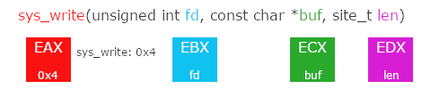
Figure 23: 系统调用和寄存器
然后使用 int 0x80 指令来进行调用, 调用返回的值会存放到 eax 上, 这样就是第一次调用了.
不同架构, 不同操作系统上的系统调用的调用规范(calling conventions)是不一样的,
调用规范规定了要用哪个寄存器储存函数码,哪个寄存器储存哪个参数,哪个寄存器储存返回值,
那么我们又是如何知道使用规范呢?
在 Linux 上可以在命令 man 2 syscall 的 Architecture calling conventions 进行查看,
就这个例子而言,这个程序是针对 i386 架构的 Linux,
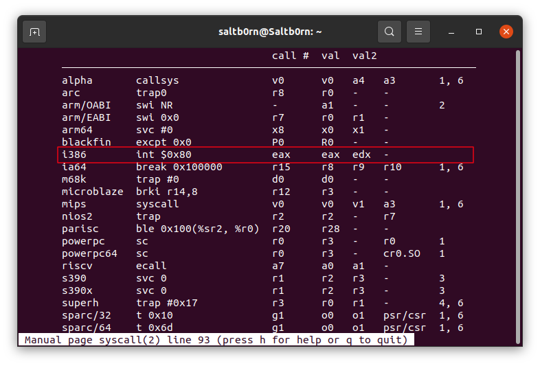
Figure 24: man 2 syscall caller

Figure 25: man 2 syscall args
你看这是不是很符合前面的说明.
第二个系统调用 sys_exit 也是一样的,因此生成的程序应该就是打印一句话 "Eat at Joe’s" 然后退出,
每个程序都必须有一个 sys_exit 的系统调用来结束程序,否则会出现 Segementation fault 的错误.
代码准备好后就可以开始 进行汇编:
nasm -f elf64 -g -F stabs eatsyscall.asm
如果没有出错的话就会生成一个 eatsyscall.o 的目标文件,出错了的话请检查源代码文件进行修正再重新汇编.
如果对 eatsyscall.o 的名字不满意,想要别的名字,比如 eatdemo.o,可以这样做,
nasm -f elf64 -g -F stabs eatsyscall.asm -o eatdemo.o
这里需要注意 nasm 几个参数.
由于我们使用的是 64-bit CPU,因此编译时候需告诉 nasm 要生成 64-bit 的目标模块,
把 -f 参数设定为 elf64 就是编译成 64-bit 的 elf 文件, elf 是一种在 Linux 系统上使用的 可执行和链接的二进制文件格式(, 其实还有一些别的系统有使用过).
不同类型的操作系统上所使用的可执行文件格式都不同, 操作系统在运行程序时会按照所支持的文件格式对程序进行解析,然后加载到内存里面,
这就是为什么 Windows 的 PE 格式的可执行文件不能在 Linux 上执行, 反过来也一样, 后面我会介绍一下 ELF 这种文件格式.
(然而哪怕能够解析对方的格式也不一定能够成功运行对方的程序, 这里还有好多其它因素, 比如 ABI 调用规范, 程序使用了系统特定的接口等等, 这些下文会有提到.)
-g 是说要生成调试信息, 但调试信息的格式有很多种, 所以还需要通过 -F 参数选择格式, 这里选择 STABS, 也就是设置为 "stabs".
如果对上面的源代码文件的指令有不理解和对 NASM 的使用有疑问,可以看 NASM 的官方文档(把它收藏起来,以后会需要经常翻阅).
最后对目标模块进行 进行链接:
ld -o eatsyscall eatsyscall.o
没有出现错误的情况下就会生成一个叫做 eatsyscall 的文件.
如果在前面汇编时没有把 nasm 的 -f 参数设置为和目前架构一样的话,那么你会遇到你人生的第一个链接错误:
ld: i386 architecture of input file `eatsyscall.o' is incompatible with i386:x86-64 output.
这个时候就需要设置好 -f 参数重新汇编.
有时候可能需要频繁修改代码,为了简化每次地的汇编和链接过程,可以使用 make 命令,它要求开发人员会编写一点点 Makefile 文件.
在和源代码文件的目录下,新建一个叫做 Makefile 的文件,内容如下,
eatsyscall: eatsyscall.o ld -o eatsyscall eatsyscall.o eatsyscall.o: eatdemo.asm nasm -f elf64 -g -F stabs eatsyscall.asm
这个是一个十分简单的 Makefile, 里面有两条规则,每一条规则的格式如下:
TARGET: PREREQUISITES...
COMMAND
需要注意的是, COMMAND 部分是要求使用制表符(TAB)进行缩进的.
TARGET 是要生成的目标文件, PREREQUISITES... 是一个依赖文件列表,就是说生成目标文件需要什么文件,
当满足依赖文件要求时,就会执行规则里面的命令.
Makefile 编写完后可以执行 make 命令来执行 Makefile 的规则.
一旦文件多了,依赖复杂了, Makefile 可以很大程度的简化开发者汇编和链接的工作流程,
Makefile 不仅仅只是用于某一门语言,或者说并不一定限于汇编/编译,很多流程处理类的工作都可以通过 Makefile 来完成.
Makefile 还有很多高级用法,具体可以阅读 GNU make 的 Writing Makefiles 部分.
到目前为止,程序已经生成完毕了,那么按照一般情况就是看程序有没有 bugs 了.
./eatsyscall
这个程序就是一个"Hello, world",正常来说是不可能有 bugs 的.
但是复杂一点的程序就不好说了,所以我们要学会如何检查程序的运行,就用这个"Hello, world"来作为学习 调试 的例子.
gdb eatsyscall
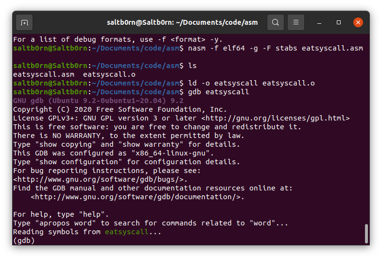
Figure 26: 初次进入调试
调试的思路是这样的:
先设置好在某个地方暂停下来,启动程序,让程序在计划的地方暂停下来,再逐步执行指令,观察指令的效果.
gdb 的命令很多,不过不需要都用上,我就针对上面的思路介绍一下命令.
开始学习一个新工具的第一件事情就是准备好工具的说明书在身边,在后续的学习还要学会如何使用说明书.
这对 gdb 也是一样的,命令很多,再好的教程也不可能覆盖完,所有没有讲到的命令都是需要学习的人自己研究.
说明书就是这么用的.
gdb 的说明书已经内置在它自己里面了: help.
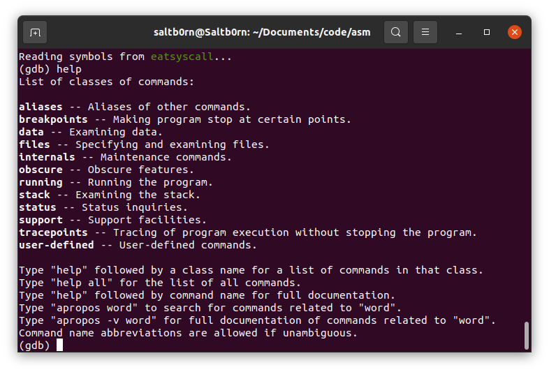
Figure 27: gdb help
可以看到 gdb 的命令分成了几个大类,对应上面的思路我们需要用到其中的6个: data, files, breakpoints, stack, running 和 status 类.
接下来一边调试一边学习吧.
可以通过 files 类的 list 命令可以看到源代码的一部分,之后可以通过"回车"来往下滚动看剩余的部分.

Figure 28: gdb list
当固定到最后一行时,再回车或者使用 list 命令就会类似这样的提示:
Line number 34 out of range; eatsyscall.asm has 33 lines.
这个时候想重新看之前的内容需要 list N 来翻到第 N 行.
接下来就是设置暂停的地方了,这一步叫做设置断点,我们看源代码的目的就是为了看可以在哪里设置断点.
因为这个程序十分简单,所以我们计划在程序起点进行暂停,也就是 _start 那一行,
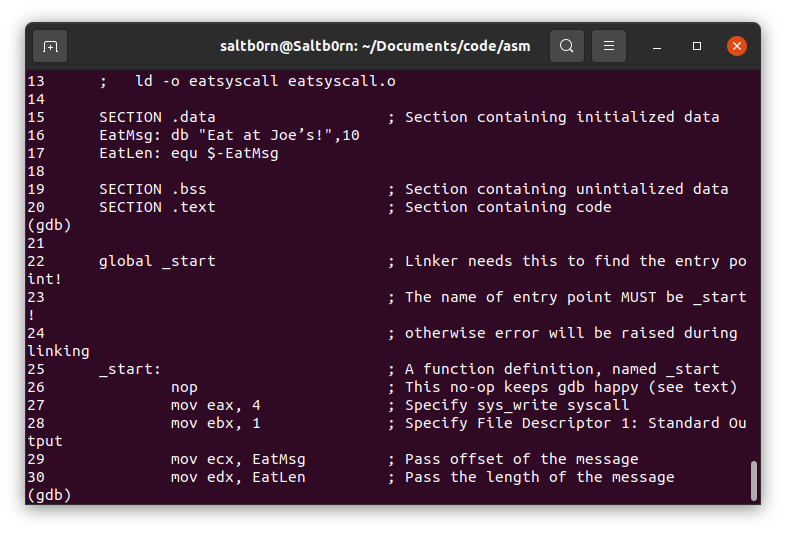
Figure 29: 找到需要暂停的位置
使用 breakpoints 类的 break 命令指定在某个地方设置断点,指定的方式有很多,
一般来说源代码行号比较直观,就用这个作为示范: break 25;
不过,指定程序入口通常用内存地址更加方便: break *_start.
断点可以设置多个,可以让断点在特定条件下生效,具体用法就自己去查使用说明了.
这里我们这里只要设置一个就好,如果想浏览自己设置的断点,
用 status 类的 info breakpoints 命令查看,还有如果想删除断点可以使用 delete 命令.

Figure 30: 设置断点
现在可以开始使用 running 类的 run 命令启动程序,它就会在我们的断点暂停下来.

Figure 31: gdb run
接下来开始就是控制运行了,如果你想知道当前运行到哪里了,
可以用 stack 类的 backstrace 命令查看,这个命令有一个别名 where.

Figure 32: gdb where
当然这只能看到目前运行在哪个内存地址上,如果想要看运行到哪个指令上,
可以使用 disassemble 命令得到汇编码,它还会指向当前执行的指令,
不过 gdb 默认使用 AT&T 语法,需要自行切换到 Intel 语法.
控制汇编程序运行的常用手段有: continue, stepi, reverse-stepi, nexti, reverse-nexti 和 finish.
continue 是指从暂停的地方继续执行,直到遇到下一个断点或直到程序结束;
stepi [N] 全称 step instructions,作用时指执行 N 条指令,缺了参数 N 就表示执行1条,
如果执行的指令是一个函数调用,那么它就会进入到函数的内部调试,要逐步执行完函数内部的指令,或者直接使用 finish 才能跳出来;
nexti [N] 全称 next instruction,作用是执行 N 条指令,和 stepi 不同的是它不会进入函数内部调试,
完全把函数调用的指令当做真正的一条指令,同样缺了参数 N 表示执行1条.
最后 reverse-stepi [N] 和 reverse-nexti [N] 都是后退执行,
想要使用这两个命令需要(最好)先在遇到第一个断点后使用 running 类的 target record-full 命令来记录执行,
不过有些指令是没法记录的,比如 int 0x80 值指令,因此这个命令一般不用,
如果已经开启了记录,可以使用 record stop 命令.
在执行之后,一般要做的就是检查数据,检查数据的手段十分多,因此我们只关注如何检查寄存器和内存地址上的数据.
可以使用 status 的 info registers 来查看所有寄存器的值,
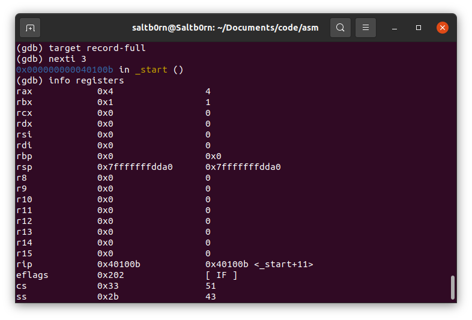
Figure 33: gdb info registers
我们用的是 64-bit CPU,虽然源代码上用的是 32-bit 寄存器,但显示的还是 64-bit 寄存器.
如果想看到 32-bit 的寄存器 eax,可以这样 print $eax.
如果想查看数据的值,可以使用 x 命令检查内存上的数据,比如: x /s &EatMsg,需要注意的是有些内存地址是访问不的.

Figure 34: 检查数据
关于检查数据的内容实际上非常多, gdb 预装的文档可能没那么详细,因此非常推荐去阅读在线文档: Examining Data.
到这里调试要做的事情和常用命令基本介绍完了,更多的还是靠自己学习.
调试的工作完成后,就可以使用 quit 命令就可以退出 gdb 了.
最后提醒一下,前面介绍的所有命令基本上都有别名,并且大部分都是缩写,
比如 nexti 的别名 ni,具体可以去看 aliases 类的说明.
9. 深入学习汇编
这整个章节都是为前面的 使用汇编语言开发的流程 的内容作拓展,因此重复的内容就不再赘述了.
9.1. 指令的相关基础
经过前期大量的基础工作,在前面已经体验过一把简单的开发了,现在可以开始认真学习指令了.
但是作为一个初学者,获得能够自己解决书本以外问题的能力才是对的,
我们学习的是 x86 指令集,因此要先学会看懂指令集参考文档的说明,这样以后遇到不懂的指令可以自行查阅.
大部分指令(包括最常见的 MOV)都有1到多个操作数,有些则不需要操作数.
比如,
mov eax, 1
这条指令有两个操作数,第一个是寄存器地址 EAX,第二个是数字1.
根据汇编语言的惯例,从左边起的第一个操作数叫做目的操作数(destination operand),第二个叫做源操作数(source operand).
MOV 指令是把源目标操作数复制到目的操作数上,看起来这两个操作数的名字可以说十分贴切.
大部分拥有操作术的指令都遵守这个规律: 当这些指令生成一个值时,这值会被保存到目的操作数上.
只是对于其它指令来说,操作数的名字可能没有那么贴切.
有三种不同的数据可以用来作为操作数: 内存数据(memory data),寄存器数据(register data)以及立即数(immediate data).

Figure 35: MOV和它的操作数
立即数
mov eax, 42h 就是一个很好的立即数使用例子,其中的"42h"就是立即数,立即数只能作为源操作数.
立即数通过一种叫做直接寻址(immediate addressing)的模式来进行访问的.
叫做"直接寻址"是因为被寻址的数据既不在寄存器中,也不在内存上,而是在指令自身中.
42h 就是一个数字,除了数字之外还有字符串.
比如 mov eax, 'WXYZA',字符串会按照 ASCII 翻译成对应的字节序列,
因为 CPU 是用的是小端字节序列,所以最终结果是"0x415a595857".
在使用 gdb 调试时可以利用 print $eax 看到 eax 的值是"0x5a595857",
这是因为 eax 是32位寄存器,只能储存4个字节,所以只能存前四个字符对应的字节.
寄存器数据
储存在寄存器上的数据就叫做寄存器数据,这种数据是通过一种叫做寄存器寻址(register addressing)的模型进行访问的.
在很早之前就提过了,寄存器的名字就是地址.
汇编器会留意那些不合理的地方,比如把一个4字节大小的源操作数移动到一个2字节大小的目的操作数上,
举个例子, mov eax, bx,一个寄存器32位,一个16位,在汇编时会出现以下错误:
"error: invalid combination of opcode and operands".
反过来可能会合理一点,然而 CPU 不直接支持,
如果真的想要让小位寄存器往大位寄存器上移动,可以利用“新寄存器拓展于旧寄存器"这一点,比如:
mov eax, 'WXYZ' mov bx, ax
ax 是 eax 的一部分,这样 eax 就可以间接通过 ax 把值储存到 bx 上,当然只会储存 eax 的最低有效字节(least significant byte)方向的两个字节.
我们可以通过 MOV 来交换两个地址上的值,比如交还 EAX 和 EBX 两个寄存器的值,
mov eax, 1 mov ebx, 2 mov ecx, eax mov eax, ebx mov ebx, ecx
实际上有一条更方便的指令来完成这件工作: xchg eax, ebx.
内存数据
内存数据(memory data)就是储存在内存上的数据,这只能通过内存地址来访问.
在汇编语言里面,要想获取地址上的数据需要这么做: [V],
这个 V 可以是一个寄存器,可以是一个变量(也就是在 section .data 定义的对象),可以是一个数字等等,
NASM 会根据它们计算出一个地址,这个地址叫做有效地址(effective address),然后访问这个地址上所储存的数据.
我们先来讨论几种基本的情况:
当 V 是数字时,就会以这个数字做为地址,比如 V 为 0x4327 时,就表示 0x4327 这个地址;
当 V 是字符串时,字符串会转换成对应的数字,然后把这个数字做为地址,在这个地址上访问数据;
当 V 是寄存器名字时,如果寄存器储存的数据是数字,那么把这个数字做为地址,在这个地址上访问数据;
那么当 V 是变量呢?
在汇编语言里面,变量先对应一个数字地址,在这个数字地址上储存着一个数据,这样变量就 间接 对应了这个数据.
像 C 语言这样的高级语言,直接使用变量就是获取它的数据,想获得变量的地址需要使用 &变量 这样的形式.
因此在汇编里面,变量在某种意义上也是一个地址,因此变量也叫符号地址(symbolic address),
所以当 V 是变量时,就访问变量对应地址上的数据.
整体上来看都是把 V 转换成数字,把数字作为地址,再从这个地址上访问数据.
上面都是基础情况,开发人员可以通过一个多项式来计算出有效地址,这就是一般以外的情况了,
这也是开发人员必须掌握的内存寻址技能的一部分,它有一套计算规则,而这套规则是于32位保护模式开始出现的,

这个多项式就是计算规则,每一项都是可选的,其中第二项目的括号不是必须的.这里只是为了突出第二项整体而已;
这里的 GP register 全称是通用寄存器(general purpose register),要注意,16位和8位寄存器不能用这条式子,(不明白的话好好想想为什么!)
位移(displacement)就是一个地址到另外一个地之间的距离,和偏移(offset)有点类似.
下面有几个例子可以看一下,
mov eax, [ebx] mov eax, [EatMsg] mov [eax], ebx mov eax, [0x6000e8] mov [EatMsg], byte 'R' mov eax, [ebx+16] mov eax, [ebx+ecx+11]
你可能注意到 mov [EatMsg], byte 'R' 可能不太好理解,它是把字符'R'复制到 [EatMsg] 高位的第一个字节上,
这条指令实际上是向内存进行了写入,所以 EatMsg 上的数据变为了"Rat at Joe's".
这里的 byte 叫做大小说明符(size specifier), 汇编语言并不像高级语言那样会"记得"变量的大小,
所以 在写入内存的时候需要告诉 NASM 写入的数据大小, byte 表示写入 1 个字节.
这条指令还可以这么写: mov byte [EatMsg], 'R' 或者 mov byte [EatMsg], byte 'R'.
此外还有别的大小说明符: word, dword 等等.
有时候可能只是单纯只想把计算出来的地址保存下来, 而不是想要地址上的数据, 那么可以使用 LEA 指令.
比如把 ebx+ecx+11 的结果保存在 eax 上,那么就要这么做,
lea eax, [ebx+ecx+11]
这样, 计算得到的有效地址就被储存在 eax 上了.
寄存器一般都是储存内存地址的,而在保护模式到来之前,只有部分通用寄存器能储存内存地址: BX, BP, SI 和 DI.
像 AX, CX 和 DX 就不行.在当年要访问内存地址上的数据是需要像这样的: [DS:BX], [ES:BP],
今天看来段寄存器已经是"时代眼泪"了,或者说早期的设计缺陷了.
标记寄存器
这里是对标记寄存器的简短学习,我们学习的是32位的标志寄存器 EFlags,标志寄存器上的 1 bit 就是 1 个 flag.
每个 flag 是独立的, CPU 可以在必要的时候把其中的某一个 flag 设为1或者清0, 其目的为了告诉程序员 CPU 内部处于什么样状态.
这样可以让程序进行测试处于那种状态,并根据那些状态采取相应的行动.
当然程序员也可以手动设置 flag 来作为一种给 CPU 发送信号的方式,不过这种情况很少见.
实际上,并非所有 flags 都是有用的,有些 flags 都没有被 Intel 定义.
下图是 flags 的分布图,黑色表示 flags 未定义,灰色表示 flags 不常用,白色表示在用户模式下很有用.
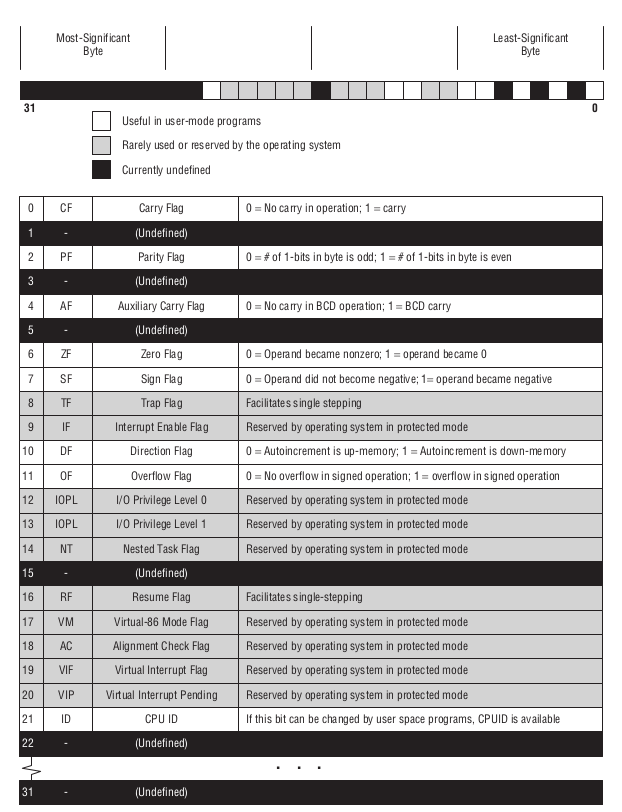
Figure 36: x86 EFlags 寄存器
主要介绍白色的那几个 flags.
CF (Carry flag)
用于无符号运算,所谓的无符号就是数字没有负号,也就是对正数进行运算.
如果运算的结果产生了进位(carry out)或者借位,那么
CPU就会设置CF为 1;如果就把CF清 0.当然进位和借位是相对于储存位数来说的,也就是计算结果超出目的操作数的储存能力才会设置
CF为 1.比如 \((2^{32} - 1) + 5 = 4294967300\) 就超出了操作数能够储存的最大值 \(2^{32} - 1 = 4294967295\),
这个时候
CF就会被设置为1表示进1,然后多出的值 \(4294967300\ \And\ 4294967295 = 4\) 就储存在操作数上.反过来,如果是 \(4 - 5\),那么就会发生借位变成 \((4294967296 + 4) - 5 = 4294967295\),同样超出了操作数的储存能力,
这个时候
CF也会被设置为1,计算结果 4294967295 储存在操作数上.当然也包括了位移操作这种情况.
PF (Parity flag)
PF是告诉我们计算结果在二进制表示下,值为 1 的位的数量是奇数还是偶数.当计算结果的"1"位的数量为偶数时,
PF被设置为 1,否则被清 0.比如当计算结果为
0F2H(11110010) 时,PF就被设置为 1;当计算结果时 0 时,
PF同样被设置为 1;当计算结果为
3AH(00111100) 时,PF就会被清 0.在当年那个计算机以用串行端口(serial port)作为主要通信手段的年代,
PF是用来做数据完整性检测(parity checking),现在已经很少用上了,所以这个
flag可以不用太过关注.AF (Auxiliary carry flag)
这是用于
BCD (Binary-Coded Decimal)运算的,所谓BCD就是一种用二进制编码成十进制数,这个数由整数部分和小数部分组成.BCD运算把每一个操作数的字节平均分成两半,其中一半看作整数部分,另外的半看作小数部分,两个部分组成一个浮点数.当
BCD运算的结果在16进制表示下发生了进位或者借位,就会把AF设置为 1,否则清 0.比如 \(5 + 11 = 16 = 10H\) 就会把
AF设置为 1,而 \(5 + 10 = 15 = FH\) 则会把AF清 0.如今
BCD运算的相关指令已经很少用了.ZF (Zero flag)
当目的操作数是变成0,
ZF就会被设为1,否则清0.ZF经常用来做条件跳转(conditional jumps).SF (Sign flag)
当一个操作的结果是把一个操作数变为负数(negative)时,
SF会被设置为1,否则清0.我们说的变为负数是指,在进行有符号运算(signed arithmetic operation)的过程中,操作数的最高位(这个位也叫符号位,sign bit)变为1.
TF (Trap flag)
TF是能够单步执行程序的原因,通过强迫CPU在调用其中断程序(interrupt routine)前只执行一条指令.这个
flag在正常开发中并不是特别有用.IF (Interrupt enable flag)
IF是一个双向flag,CPU会在某些条件下设置它,开发人员也可以使用STI和CLI指令设置它.当
IF被设为 1 时,中断(interrupt)功能就被启用了,它可以在需要的时候出现.你可能疑惑为什么说"中断功能被启用",你可以理解为"中断"是一种随时都可以发给
CPU的信号,而只有
IF设置为 1 时CPU才会“理会”这些信号.因此当
IF被清 0 时,CPU就无视任何中断.在
DOS的时代中,普通程序可以在实模式下能够自由地对IF进设置和清零;而在
Linux下的IF是由操作系统使用的,而有时候是为驱动所用,如果人为对它进行设置和清零,
Linux就会发出一个一般保护错误,并且停止程序.在使用
gdb调试器中暂停程序时可以看到这个flag被设置为 1.DF (Direction flag)
这和关于字符串处理的指令有关系,告诉
CPU要从哪个方向(up-memory or down-memory)处理字符串.当
DF被设置为 1,字符串指令就会从字符串的"高位字节"往"低位字节"的方向开始处理;当
DF被清 0,就从"低位字节"往"高位字节"方向处理.OF (Overflow flag)
在有符号整数运算中,如果运算结果超出操作数的储存能力(计算结果溢出),那么就会采用像
CF一样的进位处理.
前面的
flags的描述都是一般化的,有些指令会对flags造成影响,然而造成的影响不一定和flags的一般化描述一样.比如,一些指令的作用是产生一个 0 并且保存在操作数上,而这其中有些会把
ZF设置为 1,而其它指令则不会.再比如,
mov eax, 0FFFFFFFFH inc eax
INC的作用是对操作数加 1 并且把结果保存在操作数上,然而这并不像add eax, 1把CF设为 1.mov eax, 0 dec eax
DEC的作用是对操作数减 1 并且把结果保存在操作数上,同样也不像sub eax, 1那样把CF设为 1.因此使用指令时需要提前去查看参考文档了解指令对
flags的影响.
根据flags进行条件跳转
有一种指令用来跳转到某个位置进行执行,这种指令叫做条件跳转指令(conditional jump).
C 语言有一个 goto 语句就是干的这种事情,可是 C 语言不太建议使用 goto,不过汇编语言可不一样.
条件跳转指令是先测试某一个 flag 的值,如果它的值符合条件就跳转到程序中的其它地方.
比如 JNZ 指令就是先测试 ZF 是否被清 0,如果 ZF 清 0了就开始执行跳转,否则执行下一条指令.
mov eax, 5 DoMore: dec eax jnz DoMore
这里 DoMore: 是一个标签(label), 在汇编语言里面, 一个标签就是一个内存地址的别名.
在 NASM 里面, 一个标签就是一个字符串后面跟着一个冒号(:), 通常 标签放在包含指令的代码行上,不过这个冒号是可选的,
如果标签后面没有冒号, 并且是单独作为一行, 那么这种标签被叫做孤儿标签(orphan labels), 汇编时会出现警告, 还有可能会出 bugs,
也就是说, 标签后面没有冒号时不能顺便换行.
这其中有些标签会以下划线(_),句号(.)或问号(?)开头,这些标签对于汇编器有特殊含意的,请在理解它们的作用后再使用.
此外要注意一点, NASM 里面的标签是区分大小写的.
readelf -s nasm-bin
(如果不想做任何测试直接跳转,可以使用 JMP 指令.)
我们还可以把一个标签变成一个函数(procedures),
section .data section .bss section .text global _start _start: nop mov eax, 5 call DoMore mov eax, 1, mov ebx, 0 int 80H DoMore: dec eax jnz DoMore ret
上面的例子中的 DoMore 就变成一个函数了, 可以使用 CALL 指令进行调用.
在这个例子中, 是在 _start 里面调用 DoMore 的, 所以 _start 被叫做 DoMore 的调用者(caller), DoMore 被叫做被调用者(callee).
一个函数的结构要有以下这些点:
- 必须以标签开始,标签的名字就是函数的名字;
函数内部必须至少有一个
RET指令,这个指令是作为函数的"出口",在有多个
RET指令情况下,使用哪个RET取决于条件跳转;函数可以通过使用
CALL调用另外一个函数;
还有一个点要注意: 函数
DoMore定义在了sys_exit这个退出程序的系统调用之后.这是因为
CPU会从上到下逐条执行指令,如果定义在sys_exit之前,哪怕没有
call DoMore指令的存在,函数DoMore也是可以执行,这跟高级语言那种"只会在被调用才执行"的函数不一样,为此才把函数定义在
sys_exit之后.函数对应的标签是一个地址,因此调用函数实际上就是跳转到函数的地址上,这就是高级语言函数调用的真相.
你可能很好奇: 如何在函数内部进行内部跳转呢?
毕竟跳转只能依靠条件跳转指令,而这些指令又依靠标签,但是函数就是以标签开头的,那在函数内部的标签不就是另外一个函数吗?
NASM提供一种标签叫做局部标签(local labels),它们是以句号(.)开头的标签;没有以句号开头的标签都叫做全局标签(global labels).上面的
_start和DoMore就是全局标签.我们把上面的例子改成如下:
section .data section .bss section .text global _start _start: nop mov eax, 5 call DoMore mov eax, 1, mov ebx, 0 int 80H DoMore: cmp eax, 3 jz .exit1 sub eax, 1 jnz DoMore ret .exit1: ret
在
EAX减小的过程中,如果EAX的值等于 3,那么就直接进入.exit1进行退出,CMP指令是比较两个值的大小,如果目的操作数等于源操作数,那么ZF设置为 1,JZ就是检查ZF是否为 1.局部标签是属于它前面所遇到的第一个全局标签的,所以
.exit是属于DoMore的,而不是_start的.NASM支持从一个全局标签里面跳转到另外一个全局标签的局部标签上,我们把上面的例子再改一下,把
.exit1定义为OutSide的局部标签,从DoMore跳转到OutSide的.exit上,section .data section .bss section .text global _start _start: nop mov eax, 5 call DoMore mov eax, 1, mov ebx, 0 int 80H DoMore: cmp eax, 3 jz OutSide.exit1 sub eax, 1 jnz DoMore ret OutSide: .exit1: ret
但是这样很容易因在代码量大的时候导致逻辑混乱而出
bugs,因此不建议这么做.此外开发时多要遵守一个原则: 一个全局标签尽量不要有太多局部标签,一个局部标签的区域应该尽量简短.
关于函数的细节还有很多没有提到,这里先有个印象,后面会继续补充细节.
通常情况下, 目标文件会记录下标签的信息, 可以使用
readelf命令读取出来,假设编译出来的可执行文件名字叫
nasm-bin, 那么:readelf -s nasm-bin # output: # Symbol table '.symtab' contains 9 entries: # Num: Value Size Type Bind Vis Ndx Name # 0: 0000000000000000 0 NOTYPE LOCAL DEFAULT UND # 1: 0000000000000000 0 FILE LOCAL DEFAULT ABS main.asm # 2: 0000000000401017 0 NOTYPE LOCAL DEFAULT 1 DoMore # 3: 0000000000401022 0 NOTYPE LOCAL DEFAULT 1 OutSide # 4: 0000000000401022 0 NOTYPE LOCAL DEFAULT 1 OutSide.exit1 # 5: 0000000000401000 0 NOTYPE GLOBAL DEFAULT 1 _start # 6: 0000000000402000 0 NOTYPE GLOBAL DEFAULT 1 __bss_start # 7: 0000000000402000 0 NOTYPE GLOBAL DEFAULT 1 _edata # 8: 0000000000402000 0 NOTYPE GLOBAL DEFAULT 1 _end
除了汇编码定义的那些标签外, 还有一些额外的标签.
如你所见, 局部标签会以
[GLOBAL-LABEL].[LOCAL-LABEL]这种方式记录,有趣的一点是,
NASM其实并不要求局部标签之前一定要有全局标签, 不过这不意味着这种局部标签不属于某个全局标签,实际上它们是属于汇编码里面最后的那个全局标签.
我们把前面的那段汇编码改成如下:
section .data section .bss section .text .hello: global _start _start: nop mov eax, 5 call DoMore mov eax, 1, mov ebx, 0 int 80H DoMore: cmp eax, 3 jz OutSide.exit1 sub eax, 1 jnz DoMore ret OutSide: .exit1: ret
它的标签信息如下:
# Symbol table '.symtab' contains 10 entries: # Num: Value Size Type Bind Vis Ndx Name # 0: 0000000000000000 0 NOTYPE LOCAL DEFAULT UND # 1: 0000000000000000 0 FILE LOCAL DEFAULT ABS main.asm # 2: 0000000000401000 0 NOTYPE LOCAL DEFAULT 1 OutSide.hello # 3: 0000000000401017 0 NOTYPE LOCAL DEFAULT 1 DoMore # 4: 0000000000401022 0 NOTYPE LOCAL DEFAULT 1 OutSide # 5: 0000000000401022 0 NOTYPE LOCAL DEFAULT 1 OutSide.exit1 # 6: 0000000000401000 0 NOTYPE GLOBAL DEFAULT 1 _start # 7: 0000000000402000 0 NOTYPE GLOBAL DEFAULT 1 __bss_start # 8: 0000000000402000 0 NOTYPE GLOBAL DEFAULT 1 _edata # 9: 0000000000402000 0 NOTYPE GLOBAL DEFAULT 1 _end
可以看到
.hello这个局部标签属于汇编码里面最后的一个全局标签OutSide.
有符号和无符号值
有符号值就是我们说的负数,无符号值就是正数,我们说的符号就是值正号和负号.
想要明白两者的差别,就需要明白
CPU把符号(sign)存放在哪里.其实正负号是储存在数字的二进制表示的最高位上,该最高位叫做符号位(sign bit),
如果符号位的值是 1,那么就表示该数字是负数;如果是 0 就表示正数.
然而一个"二进制表示"既然可以是一个正数,也可以是一个负数,这取决于开发人员怎么看待它.
比如
10101111可以表示一个有符号值 -81,也可以表示一个无符号值 175.但这不是说直接更改最高位就能改变正负号了, 就拿 42 的 8 位二进制表示
00101010来说,就不可能直接改最高位就能得到-42的.汇编语言里面是用二的补码(two's complement)来处理负数的,在计算机里面,找到某数的负数,具体操作是把一个二进制数字里的原来的 1 变成 0,原来的 0 变成 1,然后加 1.
补码的概念实际上来源于模运算,比如在时钟里面往顺时针方向(加)把指针拨4小时的刻度和往逆时针方向(减)拨8个小时的刻度最终达到的位置时一样的,
而 4 和 8 相加刚好满足一个周期(模) 12.
因此
-42的二进制表示应该是11010110.关于二的补码的详细内容就不展开了,可以看这里.幸运的是有一条
NEG指令可以帮助直接计算一个数的的负数.对于 8 位二进制表示来说,如果要表示有符号数,那么能够表示的数字范围就是
-128(10000000)到127(01111111).下面是常见不同大小(指位数)的数值大小.

Figure 37: 常见的范围
处理有符号值会有一个问题: 如何处理不同位数的有符号值.符号位是处于最高位的,这就是问题所在.
当把一个有符号的值移动到一个更大寄存器或者内存地址,会发生什么情况呢?
(具体做法在前面讲寄存器数据的时候就讲过了,不再说了)
比如当我们要把 8 位大小的有符号值
-42复制到 32 位的寄存器上, 原本的符号位就不再是符号位了.mov al, -42 mov ebx, eax
这个时候
EAX和EBX的值就是 214 了,可以通过调试器来确认这一个事实.针对这个问题,
x86 CPU提供了MOVSX(Move with Sign Extension)指令来解决这个问题,mov al, -42 movsx ebx, al
EBX现在的值就是-42,EAX依然是 214.
Figure 38: MOVSX 指令
这图是
MOVSX指令的用法,可以看到上面是用了一些r16,r/m16这样的标记,这些标记在很多指令参考文档都有用,因此这里就稍微总结一下.r是寄存器(register)的首个字母,表示寄存器数据, 但是不包括段寄存器的数据,段寄存器有专门的表示:
sr表示,它是segment registers的缩写,后面的数字表示位数,所以
r16就表示 16 位寄存器,sr没有后缀数字;m是内存(memory)的首个字母,表示内存数据的意思,后面也有数字后缀;r/m就表示是寄存器数据或内存数据.除了上面的这些,还有
i表示立即数,后面也有后缀数字表示大小,最后还有d是位移(displacement)的首个字母,后面也跟着后缀数字.
隐式操作数
不是所有指令都是像
MOV那样有一个目的操作数和源操作数的使用方式,它直接告诉你作用于哪些寄存器或内存地址.而有些指令则不是,比如对无符号数做乘法的
MUL指令: 把两个乘数(factors)相乘后得到一个乘积(product),但它的用法就只接受一个操作数,
Figure 39: MUL 指令用法
我们把这个需要开发人员提供的操作书叫做显式操作数(explicit operand),实际上
MUL还需要多一个操作数,而这个操作数的选择是
MUL定义好的,无需开发人员提供,这种操作数就叫做隐式操作数(implicit operand).为什么要这么设计呢?因为两个乘数的乘法结果可以是比任意一个乘数大得多,不可能尊从"把指令产生的值储存到目的操作数上"的规范,
乘法运算的这个问题对于所有计算机架构都是存在的,解决思路也很简单,主要是利用了一个规则:
两个乘数的二进制位数分别是 \(m\) 和 \(n\),乘积的二进制位数是 \(p\), \(p \le 2 \times max(m,n)\).
比如可以用 8 位表示的 255, \(255 \times 255\) 的乘积就是需要用 16 位来表示的.
因此,你可以发现
MUL用来储存乘积的操作数的位数大小必须是显式操作数位数大小的两倍,(用于储存乘数的两个操作数的位数是一样的.)当一个寄存器不够时,就用两个寄存器储存乘积,拿
r/m16的来说,乘积的二进制中的高位 16 位储存在DX上,低位 16 位储存在AX上,比如
02A456Fh,02Ah会被储存在DX上,而456Fh被储存在AX上.而进行除法运算的
DIV指令就没这个问题.
Figure 40: DIV 指令用法
9.2. 栈的使用
前面有提到过栈(stack)的相关概念,重复的就不赘述了,这里稍微补充一下它在 x86 里面是什么样的.
对于 x86 硬件而言它是一套储存机制,同时也是所有计算的一个关键概念.
栈从 1950s 开始就成为计算机中不可分割的一部分,但是它不像寄存器那样作为硬件出现在 CPU 里面,而是作为一个抽象概念出现在内存上.
在 x86 计算机中,栈在内存里是上下颠倒,栈顶在内存低位,栈底在内存高位.

Figure 41: x86 可执行文件的内存映像
栈是往低位空闲内存进行增长的,需要用 ESP 寄存器来记录栈顶的内存地址, ESP 有时候会被叫做栈指针(stack pointer).
在运行时, C 程序会在会在这块空闲内存上划出一个叫堆(heap)的区域,用来为变量分配空间,汇编程序也可以这么做,只是实现起来比较麻烦.
程序在开始运行时,栈并不是完全空的,里面会有些有用的东西,之后补充.
一般来说很难出现栈增长碰撞到 .bss/.data/.text 部分,如果真的发生了, Linux 会发出一个段错误(segmentation fault)并且终止程序.
栈支持 PUSH 和 POP 操作,那么就必定有相关的指令.
PUSH 操作的相关指令有 PUSH, PUSHF, PUSHFD, PUSHA 和 PUSHAD.
PUSH 指令可以把一个16位/32位大小的寄存器/内存值压进栈, 但是, 在64位下 PUSH 指令只能接收16位/64位大小的寄存器,
286 以后的 CPU 甚至能支持把立即数压进栈,如果是32位 CPU, PUSH 的每个立即数就占4个字节,64位的占8个字节,
后面栈相关的指令同理,就不重复提了,
PUSH 实际上只是把栈指针寄存器减去了压进数据的大小,并且把栈指针寄存器的值作为写入数据的地址,
比如压进的数据大小是 N 个字节,那么栈指针寄存器就减去 N,把栈指针寄存器作为地址,在这个地址上写入数据;
PUSHF 指令把16位的标志寄存器 FLAGS 压进栈, PUSHFD 则是把32位标志寄存器 EFLAGS 压进栈;
PUSHA 指令把8个16位的通用寄存器, AX, CX, DX, BX, SP, BP, SI 和 DI 依次压进栈,
PUSHAD 指令把8个32位的通用寄存器, EAX, ECX, EDX, EBX, ESP, EBP, ESI 和 EDI 依次压进栈.
其中 PUSHF/PUSHFD 和 PUSHA/PUSHAD 是不支持操作数的.
我们从 PUSH 指令入手,当使用 PUSH 把一个16位寄存器上的内容压进栈时,因为我们采用的内存是一个内存地址储存一个字节的内容, 16位寄存器的内容大小就是2个字节,所以 ESP 的值需要减少 2;
如果 PUSH 的操作数是一个32位寄存器,那么 ESP 的值就要减少 4.
POP 操作差不多就是 PUSH 操作的逆过程了,相关指令有 POP, POPF, POPFD, POPA 和 POPAD.
POP 指令根据操作数大小来让栈顶弹出对应个数的字节,比如操作数是16位寄存器,那么就弹出2个字节,如果是32位寄存器,那么就弹出4个字节,
实际上 POP 指令就是先把栈顶的数据复制到操作数上,然后把栈指针寄存器的值加上数据的大小,这样就能读取上一个被压进的数据,看上出去栈顶的数据就被"弹出"了,
实际上数据还在的,如果这个时候 PUSH 了一个相同大小的数据,那么刚才的数据就会被覆盖掉;
POPF 指令让栈顶的2个字节弹出并且储存到标志寄存器 Flags 中;
POPFD 指令让栈顶的4个字节弹出并且储存到标志寄存器 EFlags 中;
POPA 指令让栈顶的16个字节弹出,并且把其中的14个字节依次储存到 DI, SI, BP, BX, DX, CX, AX 7个通用寄存器上, SP 对应的2个字节被无视;
POPAD 指令让栈顶的32个字节弹出,并且把其中的14个字节依次储存到 EDI, ESI, EBP, EBX, EDX, ECX, EAX 7个通用寄存器上, ESP 对应的4个字节被无视.
来通过这几个指令看栈如何工作的,
push ax push bx push cx pop dx

Figure 42: 栈如何工作
9.3. int80以及软中断(software interrupt)
我们在前面都了解到自从保护模式出来后,操作系统都不允许应用程序直接访问硬件资源,只能通过操作系统来代劳.
int 80h 这句指令就是告诉 Linux 调用系统资源.
INT 指令的全称叫做 interrupt,这涉及了一个叫做软中断(software interrupt)的概念,它是实现"引用程序只能通过操作系统提供的方式来调用硬件资源"的关键手段,名字来源于一个叫做硬中断(hardware interrupt)的概念,稍后会介绍.
Linux 采用 kernel 的设计是为了禁止应用程序直接访问操作系统,被恶意软件接恶意破坏,这在前面就说过了;
然而这样就引发了另外一个问题, Linux 把东西藏了起来,虽然说它提供了一些可调用指令,但是指令在内存上的位置会因为系统的升级/修复等活动发生改变,那么用应用程序又是如何知道想要调用的指令在哪个位置上呢?
事实上,应用程序不需要知道这些也可以正确地调用到指令,人们把解决这个问题的东西叫做内核服务调用门(kernel services call gate),它就是通过 x86 的软中断实现的.
在 x86 内存中,从0开始的1024个字节是被保留来存放“特别数据"的,这1024个字节是一张特别的查找表(lookup table),
每4个字节存放一个"特别数据",就是说可以存放256个"特别数据"/条目.
这张表叫做中断向量表(interrupt vector table),这个表上每一个条目的 地址/编号 叫做中断向量(interrupt vector).

Figure 43: 中断向量表
所存放的"特别数据"实际上是系统提供的可调用指令的地址,4个字节32位刚好可以表示内存上的任意一个地址,
每次启动机器时, Linux 和 BIOS 都会往表里面填充可调用指令的地址,哪个中断向量上存放哪个可调用指令的地址都是操作系统规定好的,即便操作系统进行了更新,这点也是不会变的;
想调用哪个可调用指令,只要知道哪个中断向量储存了它的地址就可以.
回到 int 80h 上, INT 的操作数就是中断向量,这条指令实际上是先从 80h 上找到可调用指令的地址,然后找到并且执行对应指令.
80h 指向的实际上是一个叫做服务调度器(services dispatcher),可以通过它来调用到差不多200多个 Linux 内核可调用指令.
一般来说程序是不需要直接访问中断向量表的,况且保护模式会限制这么做,而服务调度器会帮助开发者在无须了解中断向量表的情况下访问到对应指令.
此外, int 80h 还会把下一条指令的地址压进栈,我们把这个地址叫做返回地址, CPU 在执行完 int 80h 后返回到这个地址上.
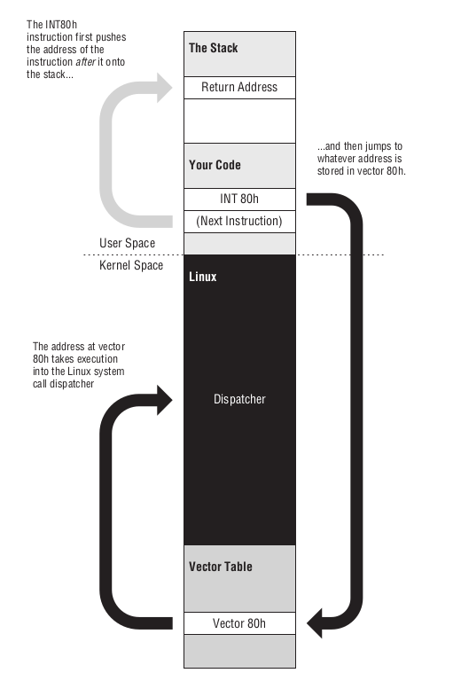
Figure 44: int 80h 的完整过程(一)

Figure 45: int 80h 的完整过程(二)
可以看到服务调度器在执行完指令以后会执行一个 IRET 的指令,它的全称是 interrupt return,
作用就是把 INT 压进栈的地址弹出来,并且根据这个地址进行跳转.
软中断的名字来源于硬中断,电脑内置的电气系统让电路板给 CPU 发送电信号, CPU 上有种特殊的金属针(pin)会被电路板上的设备改变电压,这就是发送电信号的本质.
一个电信号叫做一个硬中断(hardware interrupt),就像软中断一样,硬中断被编号了,是中断向量表的条目,这张表上面存放的数据叫做中断服务程序(interrupt service routine, ISR)的地址.
ISR 会执行一些与发送电信号的硬件有关的事情.
和软中断不同之处在于硬中断不使用 INT 指令进行触发,并且软中断的向量表是软件的一部分;
当 CPU 接收到硬中断后, CPU 会把返回地址压进栈里,在 ISR 执行完毕后会通过 IRET 指令返回,就像软中断所做的一样.
9.4. 位操作
位映射(bit mapping)是汇编语言里广泛使用的一项技术,它为字节的每一个位(bit)赋予特殊含义,榨干内存的最后一个位来节省空间.
按照不成文的规定,在汇编语言里面,会给位序列的每一位进行编号,这叫做位编号(bit numbering).
从最低有效位(least-significant bit, LSB)开始,第一位编码为0.

Figure 46: 对2个字节进行位编码
日常使用的相关指令有这些,针对逻辑运算的指令叫做位逻辑指令(bitwise logical instructions),有 AND, OR, XOR 以及 NOT;
用于移位或者旋转位的指令有 ROL, ROR, RCL, RCR, SHL 和 SHR.
汇编语言把一个1位(a 1 bit)看作一个 True,把一个0位(a 0 bit)看作一个 False.
逻辑运算的概念就不在赘述了,贴几张真值表(truth table)就算了.

Figure 47: AND 真值表
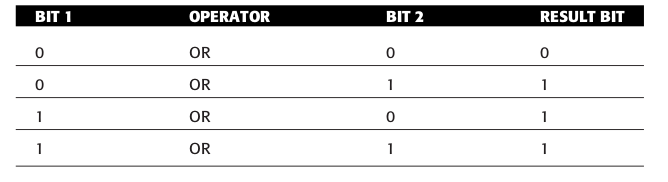
Figure 48: OR 真值表
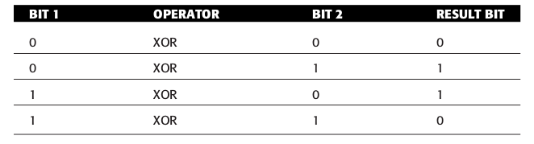
Figure 49: XOR 真值表

Figure 50: NOT 真值表
前面提到的几个位逻辑指令里面, AND 用的是最多的,它的一个主要用法就是位掩码(bit mask),作用是把无用的位都设置为0位.
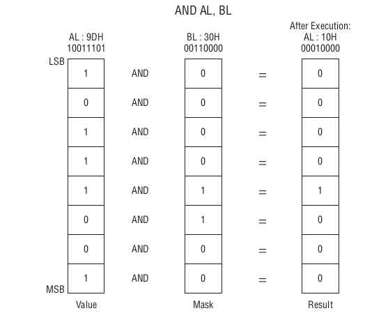
Figure 51: AND AL, BL
还有一个比较有意思的是 XOR 指令,它的全称是 exclusive or,意思是相同的为 False, 不同的为 True,
它可以用来做很多事情,在以前它经常用来快速给寄存器清零,比如给 AL 清零.

Figure 52: XOR AL, AL
对于位移操作,先来看看 SHL 和 SHR 指令,它们分别是把位往左和往右移 N 位,它们的用法大概是 SHR/SHL r/m8/16/32 i8/16/3 这个样子.
在数学上,把一个数 M 往左移 N 位的结果就是 \(M \times 2^{N}\), 而往右移动 N 位的结果就是 \(M \times 2^{-N}\).
然而在汇编是有位数限制的,比如,对 AL: 0000 1000 移动 N 位,那么这个 N 的值最大应该是8,这是因为 AL 只有 8 位.
假设这个 N 为 2,那么往左移的话就是在 LSB 后面加多两个0,再去掉 MSB 的两位,结果就是 0010 0000, 去掉的位就是溢出的;
如果是往右移,那么就是先在 MSB 前面加上两个0,在去掉 LSB 的两位,结果就是 0000 0010.
前面提到过位移操作也会能改变 CF, 只要最后溢出的一位是1,那么 CF 就会被设置成1, 这其实和前面提到过的进位或借位说法是对应的,可能这还更好理解一点.
来看几个例子,
假设对 AL: 1000 0000 进行左移1位,因为溢出的是 MSB,而它是1,那么 CF 就被设置为1;如果是左移2位,因为溢出的是 10,先溢出的是1,然后是0,所以 CF 就被清零.
假设对 AL: 0000 0001 进行右移1位,因为溢出的是 LSB,而它是1,那么 CF 就被设置为1;同理如果是右移2位,溢出的是 01,先溢出的是1,然后是0,所以 CF 就被清空0.
SHR/SHL 都会因为溢出而失去原来储存的部分信息,那么有没有办法可以避免这个问题呢?答案是有的,那就是旋转(rotate)命令.
首先介绍 ROL 和 ROR 这两个命令,它们的全称分别是 Rotate Left 以及 Rotate Right.
比如,我们对 AL 左旋转1位,变化过程是这样的,

Figure 53: ROL AL, 1
简单来说, ROL 指令就是把 MSB 的 N 位移动到 LSB 后面; ROR 指令同理,只不过它是把 LSB 的 N 位移动到 MSB 的前面.
这两个指令是不会改变 CF 的值的,因为无论它们如何操作都不会发生溢出.
RCL 和 RCR 同样是旋转指令的一种,跟 ROL 以及 ROR 相比,它们需要借助 CF 进行旋转;
它们的全称分别是 Rotate Carray Left 和 Rotate Carray Right,来看一下 RCL 如何对 AL 进行旋转的,

Figure 54: RCL AL, 1
简单来说就是 RCL 先把 CF 插入到到 LSB 后面,然后把溢出的 MSB 的值储存到 CF 上,如果是旋转 N 位,那么就把这个过程循环 N 次;
RCR 同样道理,只是先把 CF 插入到 MSB 前面,然后把溢出的 LSB 的值储存到 CF 上而已.
9.5. 判断以及跳转
跳转分无条件跳转(unconditional jumps)和条件跳转(conditional jumps).
我们很熟悉的一个无条件跳转的指令就是 JMP,只要指定了跳转目标就一定会跳转.
而条件跳转是需要符合条件才会发生跳转的,当标志寄存器的某一个 flag,甚至几个 flags 符合条件才能跳转,
否则直接执行下一条指令.
比如 DEC 指令,对操作数减1,执行过后还会看操作数的值是否为0,如果为0就把 ZF 标志设置为1.
如果我们要在操作数到0时进行跳转,那么可以用 JZ(Jump if Zero) 指令来测试 ZF 是否为1,如果 ZF 是1就会进行跳转.
JZ 就是一个条件跳转指令,和条件跳转指令配合使用最多的就是 CMP 指令: CMP op1, op2.
CMP 会先计算出结果 \(result = op1 - op2\),然后根据 result 来按照情况设置 OF, SF, ZF, AF, PF 以及 CF 标志.
基本上条件跳转的判断就是 \(>\), \(<\), \(\ge\), \(\le\), \(=\) 以及它们的取反(not)变种这几种,
由于 x86 还分有符号和无符号运算,因此最终一共有 \(5 \times 2 \times 2 = 20\) 个条件跳转指令.
这些指令的助记符会通过 above 和 below 来用于无符号值之间的比较, greater than 和 less than 用于有符号值之间的比较.

Figure 55: 条件跳转指令的助记符
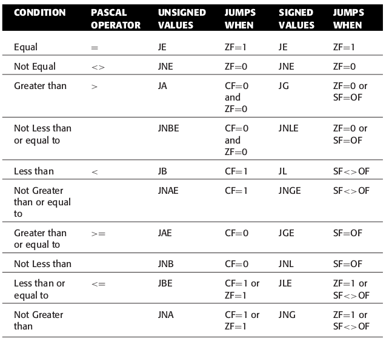
Figure 56: 条件跳转指令
还有提供 TEST 和 BT 这样的指令来检测位的值.
首先是 TEST op bit-mask, 用来检查某些位是不是设置为了1,如果不是,那么 ZF 就变为1.
比如 test ax, 08h 就是测试 ax 第3位是否设置为1, 08h 在二进制就是 00000100.
其实 test 指令很简单,它其实就是先用 AND 指令进行运算,不过这个运算不会改变目的寄存器的值,
如果运算结果为0,那就证明所有被测试的位没有设置为0,这个时候 ZF 就会被设置为1.
BT op bit-number, 用来检操作数某一位是的值是0还是1,其实 BT 指令就只是把某一位的值复制到 CF 上,
然后可以使用 JC 或者 JNC 来判断跳转.比如 bt eax, 4 就是测试 EAX 的第4位的值.
9.6. 表
其实我们在前面就见到过表(table),字符串就是表(table)的一种.
DB 指令的作用也可以理解为定义一张表,表的每个元素的大小为1个字节,第一个元素的地址作为整个表的地址.
根据维度划分,表主要分一维表和一维以上的多维表.
前面的 EatMsg 就是一张一维表;
在汇编语言里面,实际上是只有一维表,没有二维表(two-dimensional table)以及更高维度的表.
不过,我们可以把一维表定义为一个二维表,或者更高维度的表.
比如,二维表满足这些特性: 表的元素本身是一张表,称之为子表(subtable),子表也包含了一些元素.
那么只要把一维表"设计"成满足这样访问的方式即可:
可以根据表获取到任意的一个子表地址,再可以根据子表的地址获取到子表里任意的一个元素.
比如,
SECTION .data DDTable: db 10, 12, 14, 16 db 20, 22, 24, 26 db 30, 32, 34, 36
NASM 可以像上面那样把一个表用 db 分成几行来定义, NASM 会把几行定义合并在一起.
上面的 DDTable 是一个有12个元素的表,可以把每一行看作一个子表,每个子表有4个元素.
注意,这里不能这么写:
SECTION .data DDTable db 10, 12, 14, 16 db 20, 22, 24, 26 db 30, 32, 34, 36
如果定义一个变量不带冒号(:),并且变量单独占一行,那么这样的变量叫做孤儿标签(orphan labels)
假设现在需要取第2个子表的最后一个元素,那么就要这么做,
SECTION .text GLOBAL _start _start: mov ecx, 1 mov al, byte [DDTable+ecx*4+3]
或着这样,用一张表储存内存地址,而这些内存地址是其它表的地址,在32位保护模式下,储存一个内存地址需要32位,因此表的一个元素需要用4个字节储存,
我们把上面的例子改一下,
SECTION .data SubTable1: db 10, 12, 14, 16 SubTable2: db 20, 22, 24, 26 SubTable3: db 30, 32, 34, 36 DDTable: dd SubTable1, SubTable2, SubTable3 section .text global _start _start: mov ecx, 1 mov eax, [DDTable+ecx*4] mov bl, byte [eax+3]
DD 指令是 "Define Double" 的意思,用两个字(word)储存一个员元素,也就是4个字节.
虽然说一个元素用4个字节的空间来储存,但是内存寻址依然要遵守"一个内存地址只能存放一个字节的数据"的原则,
所以上面查找子表的地址依然需要 [DDTable+ecx*4] 这样每4个字节为子表的地址.
9.7. 函数(Procedure)
在学习标签时稍微介绍了一下函数的基本定义以及使用, 如果你已经接触过一些高级语言, 你会发现还有很多东西没有介绍到,
比如, 如何给函数定义参数以及如何传递参数, 如何在函数内定义局部变量, 如何递归等等, 此外还有一些高级语言里面没有体现到的细节.
一旦涉及到函数, 那么就要提一个概念: 全局数据(global data)和局部数据(local data).
所谓全局数据就是在程序的任何地方都可以访问得到的数据.
像前面的简单例子 eatsyscall 中, 在 .data 和 .bss 区域定义的数据就是全局数据, 如果一个程序分成了好个文件,那么全局数据的区分就更加复杂了, 之后会了解库(library)这个概念.
而局部数据就是数据只能在函数内或库内进行访问, 然而, 局部数据并没法像 .data 和 .bss 里面数据那样定义.
寄存器可以储存数据, 然而如果数据个数是不定的, 而寄存器的数量又有限, 那么该如何储存这么多数据呢?
毫无疑问, 需要靠内存来储存数据.
对于函数来说, 局部数据只有在函数被调用的时候才会可以访问, 那么只要让这些数据在函数被调用的时候储存在内存上, 函数结束后把这些数据清空掉, 而栈正好符合这要求.
举个实际例子, 有一个叫做 Add1 的函数, 它的作用是计算 \(5 + 6\) 等于多少, 计算完毕就结束程序,
section .data section .bss section .text global _start _start: mov eax, 1 mov ebx, 0 call Add1 int 80h Add1: mov eax, 5 mov ebx, 6 add eax, ebx ret
这个程序有一个问题, 那就是调用完 Add1 后, eax 变成11, ebx 变成6, eax 和 ebx 上的值被覆盖了, 因此最后的 int 80h 没有调用到 sys_exit().
这 通常 不是我们想要的, 想要在不影响寄存器的前提下解决这种问题, 通常需要用到栈, 按照这个思路把程序改一下,
section .data section .bss section .text global _start _start: mov eax, 1 mov ebx, 0 push rax push rbx call Add1 pop rbx pop rax int 80h Add1: mov eax, 5 mov ebx, 6 add eax, ebx ret
需要注意一下的是, 这个是64位程序, PUSH 和 POP 指令的操作数不能是32位寄存器, 而 rax 和 rbx 分别是 eax 和 ebx 的 64 位拓展.
在调用函数之前把需要使用到的寄存器上的数据用栈"备份"下来, 在函数调用结束后把数据”恢复“到原来的寄存器上.
也就是在调用函数前用 PUSH* 指令把数据压进入栈, 调用结束后用 POP* 指令把数据还原好, 顺便把栈上不需要的数据清空, 也就是 eax 的 1 和 ebx 的 0.
这样在函数调用结束, eax 和 ebx 的值还分别是原来的 1 和 0 ,这样程序就可以在计算完后正常退出程序.
要注意,以什么顺序把寄存器的值 PUSH 进去的,就得按照 相反 顺序把值 POP 出来, 其实这一点只要能够理解栈的工作方式都能明白.
有时候 PUSH 和 POP 操作可以在函数内完成,在介绍递归时在演示.
Add1 里面的 eax 和 ebx 上的数据就是前面提到的局部数据了.
这个 Add1 实际上没什么用处,因为它只能计算 \(5 + 6\) 这个加法运算, 没有发挥到函数的真正作用: 接受参数并进行计算, 最后返回计算结果.
再把程序改一下,让 Add1 更加灵活,
section .data section .bss section .text global _start _start: mov eax, 1 mov ebx, 0 push rax push rbx mov eax, 3 mov ebx, 4 call Add1 pop rbx pop rax int 80h Add1: add eax, ebx ret
函数内部决定了它使用哪些寄存器, 比如这个例子使用了 eax 和 ebx,
那么给它传参数就是先给这两个寄存器设置好值, 再调用函数, 这就是大部分高级语言给函数传参数的真相.
没有规定一定要用什么通用寄存器来进行传递参数, 甚至可以不用寄存器而是使用内存(栈)来传递参数.
然而在没有规范的情况下, 调用别人编写的函数会变得很麻烦, 在后面 调用C库的函数 会聊到规范的问题.
最后再来一个递归的例子作为结束,顺便介绍一下 call 指令和跳转指令的区别.
这一个例子里面的 Acc 函数就是一个递归函数,这个程序会通过它进行 \(1+2+3+4\) 运算,
section .data section .bss section .text global _start _start: mov eax, 1 mov ebx, 0 push rax push rbx mov eax, 4 mov ebx, 0 call Acc pop rbx pop rax int 80h Acc: cmp eax, 0 jle .exit add ebx, eax dec eax push rax push rbx call Acc pop rbx pop rax jmp .exit .exit: ret
可以看到 Acc 里面使用了 call 指令调用 Acc 自己, 并且在调用之前还需要按照"备份和还原寄存器”的老套路.
这个递归是最简单的了,可以很简单地把它改成循环,
section .data section .bss section .text global _start _start: mov eax, 1 mov ebx, 0 push rax push rbx mov eax, 4 mov ebx, 0 call Acc pop rbx pop rax int 80h Acc: cmp eax, 0 jle .exit add ebx, eax dec eax jmp Acc .exit: ret
这两个都能正确进行计算,然而两者差别很大,这也就是 CALL 指令和跳转指令之间地区别.
CALL 指令会先把当前位置的下一条指令地址压(PUSH)进栈里面, 然后再跳转(JMP)到对应标签的地址.
比如在 _start 标签里面的 call Acc 在执行时候, 会把 pop rbx 指令的地址压进到栈里面, 然后跳转到 Acc 标签地址上.
而 jmp Acc 是直接跳转到 Acc 标签上.这就是 Call 指令和跳转指令的差别.
也正因为如此, CALL 指令要配合 RET 指令使用, RET 的作用就是把 CALL 压进去的"下一条指令的地址"弹出来,并且返回(跳转回)到这个地址上,
这样就完成了一趟函数调用的"旅程".
RET 指令和跳转指令也有一些共同点, 那就是跳转的距离, 它是指跳转指令(jump instruction)到跳转目标(jump target)两个内存地址之间的距离.
在条件跳转指令(也就是 JMP 以外的跳转指令)要跳转到一个很远的距离时,汇编器会出现这样的错误:
"error: short jump is out of range".
NASM 可以根据不同情况下的同一个条件跳转指令产生不同的操作码(opcode), 这个不同情况就是指定的跳转距离.
也就是根据跳转距离可以划分得到不同的跳转类型,距离一共有3种: short, near 和 far,这个是从小到大排序的.
short 是指跳转距离在127个字节内; near 是指跳转距离在大于127字节而仍然在当前代码段内,因为32位保护模式下只有一个代码段,所以保护模式下规定最大可达 2GB;
far 则是指跳转距离完全跳出了当前代码段的范围, far jump 其实很少用得到,无论是在 DOS 时代还是32位保护模式时代,因此不会讲这个.
short jump 和 near jump 所产生的操作码是不一样的, short jump 的操作码都是2个字节大小的,而 near jump 的操作码是4个或者6个字节大小的,这取决于各种因素.
short jump 的操作码都是效率很比较高的,这种叫做 compact code/fast code.
NASM 默认生成 short jump 的操作码,除非指定生成 near jump.
jne SomeLbl ; Short jump jne near SomeLbl ; Near jump
通常出现 "short jump out of range" 错误是因为把用来某个标签放到程序的最后, 然后在不同地方跳转到这个标签, 而程序又十分大而导致的.
解决这个问题很简单, 就是在目标标签前面加一个 NEAR 关键字.
RET 指令也分不同距离进行返回,不过它只有两种: near return 和 far return,分别对应指令 RETN 和 RETF.
除开必要情况,通常使用 RET 指令就可以了,在汇编时, NASM 会自动根据情况对 RET 指令生成 RETN 和 REFF 对应的操作码.
RET 有一个可选操作数, 类型为 i8, 用来指定在函数返回时指定释放栈上 N 个字节的数据, 具体就是把栈指针 ESP 的值增加 N,
支持这个操作数是因为有些 CPU 支持把立即数压进栈, 清空这种数据的唯一办法只能让栈指针寄存器(ESP)增加对应数据的大小.
9.8. 库(Library)
前面有提到过库的这个概念,提到库第一时间想到的就是"把一个程序分成多个模块",生成程序的时候再把模块链接起来.
链接方式有两种: 静态链接(static linking)和动态链接(dynamic linking).
静态链接就是把所有模块文件全部"合并"成一个可执行文件,可执行文件的大小基本上就是模块文件大小的总和;
动态链接则是把多个模块文件"像连线一样关联"到一起,生成的可执行文件的大小比静态链接得到的可执行文件的大小要小.
动态链接的模块文件就像可替换的零件一样,每次只要模块文件有更新,无需重新链接生成可执行文件,只要替换需要更新的模块文件就好;
而静态链接一旦有模块文件要更新,那么重新链接生成整个可执行文件.
一般为了方便发布程序,都采用动态链接的方式生成程序;简单的程序一般用静态链接生成.
我们把上一个节的示例程序作为例子,把循环版的 Acc 单独拆出来作为一个模块 mathlib.asm,调用 Acc 的模块叫做 main.asm,
; main.asm GLOBAL _start EXTERN Acc SECTION .data SECTION .bss SECTION .text _start: mov eax, 1 mov ebx, 0 push rax ; push rbx mov eax, 4 mov ebx, 0 call Acc ; pop rbx pop rax int 80h
; mathlib.asm GLOBAL Acc:function SECTION .data SECTION .bss SECTION .text Acc: cmp eax, 0 jle .exit add ebx, eax dec eax jmp Acc .exit: ret
这里为了方便调试,我去掉了 main.asm 里面的 rbx 的进出栈指令,整个程序会把计算结果当作返回值.
mathlib.asm 和 main.asm 的作用是不一样的, main.asm 是作为程序的入口的,而 mathlib.asm 则是作为 main.asm 一部分功能的供应方,
因此 mathlib.asm 是没有 _start 标签的,我们把没有 _start 标签的模块文件叫做库(libraries).
GLOBAL 指令的含义其实是把标签声明为可以被别的模块调用,像 GLOBAL Acc:function 就是把 Acc 标签定义成一个"接口",别的模块可以使用这个"接口",
这种由目标文件提供的接口叫做应用程序二进制接口(Application binary interface), 简称 ABI, 和 API 这概念很相似, 只是 API 是源代码和库之间的接口.
而 Acc 后面跟着的 :function 则是告诉 NASM Acc 是一个函数,这个类型声明是可选的,只是没有的话在链接时 ld 命令会有一些警告.
类型声明一共有两种: :function 和 :data, :data 类型是接口标签是一个数据,这里的数据不包括常量,并且 :data 后面还可以跟着一个大小声明,
比如, GLOBAL myData:data 4 就是告诉 NASM myData 是一个数据,它的大小为4个字节,有时候不知道数据有多大,可以让 NASM 自己计算,
GLOBAL myData:data myData.exit-myData SECTION .data myData: db 'Never gonna give you up', 10 .exit:
myData.exit - myData 是一条表达式,计算两个标签之前的间距.
当接口被定义好后,在调用一方的模块中,需要使用 EXTERN 指令将标签声明为外来标签,
在 main.asm 里面的 EXTERN Acc 就是告诉 NASM Acc 的定义在 main.asm 之外.
一但划分好模块就可以生成可执行文件了,假设两个模块文件是处于同一个目录下的.
先来静态链接,
main: main.o mathlib.o ld -o main main.o mathlib.o main.o: main.asm nasm -f elf64 -g -F stabs main.asm mathlib.o: mathlib.asm nasm -f elf64 -g -F stabs mathlib.asm
或者
main: main.o mathlib.a ld -o main main.o -l:mathlib.a -L. main.o: main.asm nasm -f elf64 -g -F stabs main.asm mathlib.a: mathlib.o ar rcs mathlib.a mathlib.o mathlib.o: mathlib.asm nasm -f elf64 -g -F stabs mathlib.asm
./main echo $?
echo $? 是输出上一个命令的返回码,程序没有错的话可以看到输出10.(之所以这么做是因为 gdb 貌似不能调试动态库提供的函数.)
第二个则是使用了 ar 创建了一个 mathlib.a 静态库, 一个静态库实际上就是一个由若干个 object 文件组成的集合,
如果你的目的是发布库, 那么推荐使用第二种方法.
再来 动态链接, 不过在这之前, 我们需要把 main.asm 调整一下,
; main.asm GLOBAL _start EXTERN Acc SECTION .data SECTION .bss SECTION .text _start: mov eax, 1 mov ebx, 0 push rax ; push rbx mov eax, 4 mov ebx, 0 call Acc wrt ..plt ; pop rbx pop rax int 80h
调用外部引用 Acc 时在其后面加上了 wrt ..plt 的声明, plt 的全称是程序链接表(procedure linkage table), 我们会在后面探究 ELF 文件时会对它进行学习.
目前只需要知道这是在声明 Acc 是外部模块的一个函数, 有了这个声明, NASM 让链接器在链接时生成一个表来查找 Acc 的定义(. 参考 Position-Independent Code: ELF Special Symbols and WRT).
链接时需要在生成可执行文件的一步给 ld 命令加上 -pie 选项, 所以最终的 Makefile 是这样的(参考 https://www.nasm.us/doc/nasmdo10.html#section-10.2.5):
main: main.o mathlib.so ld -o main main.o -pie -I/lib64/ld-linux-x86-64.so.2 -L . -rpath . -l:mathlib.so main.o: main.asm nasm -f elf64 -g -F stabs main.asm mathlib.so: mathlib.o ld -shared -o mathlib.so mathlib.o mathlib.o: mathlib.asm nasm -f elf64 -g -F stabs mathlib.asm
如果程序没有任何问题, 那么同样返回值是10;
如果把 mathlib.so 改了个名字或者移除掉的话, main 就会运行不了,并且报错:
"./main: error while loading shared libraries: mathlib.so: cannot open shared object file: No such file or directory".
比起静态链接, 这里多了一步 mathlib.so 的编译, *.so 就是 Linux 的动态链接库的后缀, so 的全称是 shared object 的意思.
而且在最后生成可执行文件 main 时要告诉 ld 命令: math.o 文件要如何和动态库 mathlib.so 链接.
ld 命令的 -I 选项是指定用使用哪一个动态链接器, 当链接生成目标的一个引用动态库的 ELF 程序时, 可能需要手动设定一下动态链接器, Ubuntu 的64位动态链接器位于 /lib64/ld-linux-x86-64.so.2;
ld 的 -L 选项是指定在哪个目录下搜索即将链接的库文件, 由于是生成的 mathlib.so 在当前目录下, 所以这里指定了 .;
ld 的 -l 选项用来指定要链接哪个库, 它有两种语法 -l:filename 以及 -l name,
第一种是从指定路径下找到名字叫做 filename 的库文件, 第二种是从指定的搜索路径中查找名字叫 libname.a 或者 libname.so 的库文件, 我们这个例子里面用的是第一种写法;
ld 的 -rpath 选项是指定可执行程序在运行时搜索动态链接库文件的目录,也就是 main 在运行时在什么地方找 mathlib.so 文件.
当我们得到一个动态链接程序以后, 可以使用 ldd 命令来查看它链接了哪些动态库文件,
ldd main # 结果大概如下: # # linux-vdso.so.1 (0x00007fff02522000) # mathlib.so => ./mathlib.so (0x00007fd278704000)
ld 命令使用 -shared 选项意味着最后链接得到的是一个动态链接库.
实际上关于动态还有很多细节没说, 我把这些内容放到后面探究 ELF 文件里面去了.
9.9. 宏(Macros)
函数是一种复杂管理工具(complexity-management),把程序按照一定逻辑分成多部分.
函数遵守调用(calling)和返回(returning)的规范,这是建立在 CPU 提供的 CALL 和 RET 指令的基础上的.
而宏作为另外一中复杂管理工具,是依赖于汇编器上的,而不是基于 CPU 提供的功能.
宏是一个标签,这个标签代表了一个文本行序列(sequence of text lines),而这个文本行序列的内容 可以 是一个指令序列.
当汇编器遇到一个宏标签时,汇编器会把一个宏标签替换成它所代表的文本行序列,这叫做宏展开(expanding the macro);
然后这些文本就像是出现在源代码上被进行汇编.
NASM 使用 %MACRO 和 %ENDMACRO 指令(directives)来定义宏.

Figure 57: 宏定义以及展开
图中的 WriteStr 就是一个宏标签,以 %macro 指令开头,一直到 %endmacro 指令为止就是一个宏定义.
汇编的时候,汇编器会把所有遇到的 WriteStr 标签替换成它的定义,就像图中描述的那样.
这图是一个非常简单的例子,宏也可以像函数那样支持传递参数.
假设有个程序经常调用 sys_write 来打印字符串,可是每次调用都要传入4个参数,导致很繁琐,如果只需要传入输出的字符串和字符长度两个参数就好了.
这个时候宏可以解决这个问题,我们把上面的 WriteStr 改一下来完成这个任务.
SECTION .text GLOBAL _start %macro WriteStr 2 ; 2 means two arguments, %1 = String address; %2 = string length push rax push rbx mov eax, 4 mov ebx, 1 mov ecx, %1 ; Put string address into ECX mov edx, %2 ; PUt string length into EDX int 80H pop rbx pop rax %endmacro _start: WriteStr Msg, MsgLen mov eax, 1 mov ebx, 0 int 80H
在定义宏时,宏标签后面可以跟一个常量 N 表示这个宏接受 N 个参数.在宏定义里面要引用第 i 个参数,需要用到 %i 这样的符号.
WriteStr 的定义里面,把第一个参数传入到 ECX 上,第二个参数传入到 EDX 上.
如果传入的参数数量比定义的要少,那么在汇编时很有 可能 会报错,这取决于如何使用未定义的参数;'
如果传入的参数数量比定义的多,那么多余的参数就会被无视.
如果宏定义里面使用了其它的宏,那么在展开时,里面的宏也会被展开.
在汇编语言里面,标签(label)一定要是唯一的,准确来说是全局标签.
因为宏本质作用是在解决代码重复的问题,是注定要出现程序的任何地方,如果宏使用了全局标签,这会出现全局标签重复的问题.
可是如果宏不能使用标签的话,那么如何实现跳转呢?其实宏有自己的局部标签,这种局部标签不会出现标签重复问题,宏局部标签是以 "%%" 符号开头的.
有一个把 buffer 里面的字符串转化位大写的程序如下,
%macro UpCase 2 ; %1 = Address of buffer; %2 = Chars in buffer mov edx,%1 ; Place the offset of the buffer into edx mov ecx,%2 ; Place the number of bytes in the buffer into ecx %%IsLC: cmp byte [edx+ecx-1],’a’ ; Below 'a’? jb %%Bump ; Not lowercase. Skip cmp byte [edx+ecx-1],’z’ ; Above 'z’? ja %%Bump ; Not lowercase. Skip sub byte [edx+ecx-1],20h ; Force byte in buffer to uppercase %%Bump: dec ecx ; Decrement character count jnz %%IsLC ; If there are more chars in the buffer, repeat %endmacro
可以看到,里面是利用宏局部标签作为跳转目标的: %%IsLC 以及 %%Bump.
宏也可以像函数那样定义在库里面,这种库叫做宏库(macro libraries),一个宏库就是一个包含了源代码的文本而已.
函数库能够单独汇编成一个模块,引用这个模块只要链接起来就好.
可是宏库不一样,只要汇编的模块有引用宏库,那么在汇编时宏库就一定要被传入进去,如果有很多个这样的模块,那么严重影响汇编效率.
引用宏库需要使用 %INCLUDE 指令,比如行在有一个叫做 mylib.mac 的宏库,
%include "/path/to/mylib.mac"
引用时要确保路径正确,否则 NASM 不能定位到宏库文件然后产生错误,就类似这样,
xxx.asm:1: fatal: unable to open include file `mylib.mac'
宏的使用远远不止这样,具体可以看 NASM Macro.
9.10. 调用C库的函数
把汇编语言创建的程序和 C 语言的函数链接起来时,得到的其实是一个混合程序了(hybrid).
为什么汇编和 C 语言两门不同的语言所编写的程序能够链接起来并且正常运行?
虽然开发程序时使用的语言不一样,但是得到的目标文件都是使用机器码,
由于都是在同一个架构同一个系统下进行汇编/编译的, 那么彼此的目标文件都是使用了同一套规则的机器码,
也就是使用了同一门语言, 在这个层面上是可以调用彼此的, 这就是基本原因.
在 Linux 上基本上所有 C 程序都是用 GCC 编译得来的, 包括 Linux 本身的大部分.
GCC 编译程序分为很多个步骤, 每个步骤都由不同工具完成, 可以说 GCC 是一个由多个工具集合而成的工具.
下面这图就是这些工具之间是怎么样的一个工作流程:

Figure 58: GCC编译C语言并生成程序
首先, GCC 会对 C 源代码(.c)进行预处理, 所谓的预处理就是对于源代码里面的宏进行展开, 得到一份展开了宏的新代码(.c),
完成这项工作的工具叫做 C preprocessor, 简称 CPP.
C 的宏展开和 NASM 的宏展开很类似, 除了语法外, 概念上都是一样的.
然后, GCC 根据展开后的代码生成一份汇编源码(.s), 这份汇编源码只能由一个叫做 GAS 的汇编器进行汇编;
之后, GAS 把这份汇编源码进行汇编得到一个模块文件(.o);
最后 ld 把模块文件链接得到一个可执行文件, 当然 GCC 会给 ld 设置了某些参数, 和我们之前链接方式是有点差别的.
GAS 支持的汇编语法是 AT&T, 和使用 INTEL 语法的 NASM 是不一样的.
不过这不是问题, 因为它们生成的模块文件都可以使用 ld 来进行链接.
假设有一份根据 NASM 语法编写的源代码叫做 callc.asm, 使用了 Linux 标准 C 库 GLIBC 的函数, 那么可以这么汇编和链接:
callc: callc.o gcc -no-pie callc.o -o callc callc.o: callc.asm nasm -f elf64 -g -F stabs callc.asm
最后得到 callc 就是混合产物, 这个产物的结构如下:

Figure 59: 混合程序的结构
Startup Code 和 Shutdown Code 都是 Glibc 的产物, Startup Code 里面使用了 CALL 指令调用模块 calcc.o 的 main 函数,
main 必须通过 RET 指令进行返回, CPU 继续执行 Shutdown Code,最后把控制全交还给 Linux.
然而,只保证了"彼此的目标文件使用同一门语言"还是无法保证可以它们在链接起来后能够正常运行.
在前面介绍函数时就提到过几乎所有高级语言的函数调用本质都是: 先备份好函数用到的寄存器, 然后调用函数, 在返回函数后还原寄存器.
不同语言在汇编层面上会有一些区别, 也就是具体的调用规范会不太一样, 比如某门语言的编译器在生成程序时,
规定只能用某几个寄存器来给函数传某一数据类型的参数, 别的数据类型参数就用栈来传入, 用另外某一个或者两个寄存器用来储存函数返回值等等.
人们为不同的系统定制了一份 ABI 调用规范, 哪怕是不同的编程语言, 只要它们的编译器在生成目标文件时遵守同一个调用规范, 它们的目标文件都是可以相互调用的.
C 语言编译器 GCC 在 Linux x86 上采用规范的是 System V ABI, 分 i386 和 x86-64 两个版本, 前者就是32位平台, 后者是64位平台.
i386 的规范如下:
- 调用前函数必须保留
EBX, ESP, EBP, ESI以及EDI这几个寄存器的值,在函数返回后必须还原回. - 函数的返回值要保存到
EAX上,如果返回值超过32位,那么返回值要存放到EDX和EAX上,EAX储存LSB方向的32位,高位的存放在EDX上. - 传给函数的参数要以逆序(reverse order)压进栈,比如
myFunc(foo, bar, bas)就是把bas, bar和foo三个参数依次压进栈. - 函数自身不把压进去的参数弹出,在函数返回后必须手动把这些参数弹出来,或者直接增加
ESP对应的偏移值(offset)来释放栈,后者更加常用更加快. C程序的起点标签是main(全小写)而不是_start.
i386 现在基本被淘汰了, x86-64 相比而言主要做了以下改变了:
- 调用函数前必须保留
rbx, rbp, rsp, r12, r13, r14和r15,函数结束后需要还原它们; - 栈帧多出了一个
red zone内存块; 传递参数的方式改变了,对参数进行分类,不同类型使用不同方式传递,总得来说分标量(scalar)和矢量(vector)两大类,
比如属于标量的整型数类型的参数从左到右依次使用通用寄存器
rdi, rsi, rdx, rcx, r8以及r9传递参数,如果参数数量超过这几个寄存器的数量,那么就通过栈来传递多余的参数;内存类型数据使用栈来进行传递,等等,具体可以查看 System V x64 ABI 的 Parameter Passing;
使用
rax和rdx分别作为第一和第二返回寄存器,还有一些特殊类型的数据需要使用别的寄存器来进行返回.rax还有一个作用,C语言支持一种可变参数函数(variable arguments function, varargs function),这种函数的参数数量是不固定的,需要让rax记录传递的参数里面有多少个矢量参数.总得来说,
x86-64相对i386的ABI规范的主要变化就这些,有一个点倒是没有这么改变的,那就是对栈的依赖.编译器本质是一个生产汇编代码的机器(robots), 这意味着编译器必须依靠暴力(brute-force)的手段来生成代码, 而这些手段大部分都依靠栈来实现.
对于
C程序来说, 在每次调用函数时, 编译器会为该分配一块内存区域用于存储函数相关的数据, 在函数返回后这块区域就会被销毁, 人们会把这块内存区域做栈帧(stack frame),叫做栈帧是因为它是栈上一个数据, 一个基本单位, 一个栈帧就是一个函数调用, 里面包含了函数各自的数据(函数的局部变量), 保证函数与函数之间的数据不会发生混乱.
现在有一个问题就是: 如何给函数划分一块区域作为它的栈帧, 或者说怎么 建立栈帧 ?
要确定一块内存区域只需要知道起始位置和结尾位置, 所以需要两个通用寄存器来储存这两个信息, 从而确定栈帧.
i386规范规定用EBP来储存栈帧的起始位置,ESP储存栈帧的结尾位置, 每次往栈里面压进了数据,ESP就会相应减少, 指向下一个栈帧.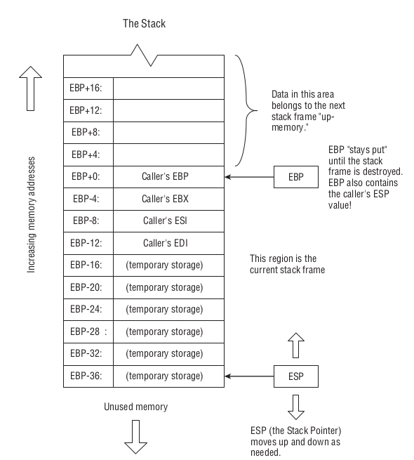
Figure 60: Stack in i386 ABI
我们接下来会讲解在汇编里面调用
C函数时, 如何为它建立栈帧以及如何给它传参数,在调用
C函数时, 需要手动为它建立栈帧, 在函数结束后把栈帧销毁掉, 具体汇编代码如下:push ebp mov ebp, esp call cFunc mov esp, ebp pop ebp
可以看到栈指针
esp是通过ebp来进行备份和还原的, 之所以这么做是因为esp之后要被手动修改, 这导致只靠PUSH和POP指令是无法在函数结束时正确还原esp的.需要注意的是实际上
C函数本来在编译时,GNU就为它们建立好栈帧了, 接下来的例子中分配栈帧只是为了遵守规范,后面我们在 C 语言是如何与汇编对应的 解释 GNU 是如何为
C函数建立栈帧的.在
x86-64的ABI规范中只需要把寄存器换成它们的拓展寄存器就好了:rbp以及rsp.不过这里隐藏了一个细节: 在调用函数前, 要确保栈指针在
CALL指令执行后能够对齐n字节边界(n-byte boundary, nB boundary, n-byte aligned, nB aligned),也就是栈指针的值满足 \(*sp\ \ rem\ \ n = 0\), 并且
n要满足 \(n = 2^{x}, x \in \mathbb{Z}\), 换个角度就是 \(*sp\) 是 \(n\) 的倍数.这个
n的规定取决于ABI方案的定义,x86-64的规定是 16.有兴趣的话可以了解一下数据对齐的概念, 当人们说数据要对齐 16 字节边界, 就是说要求数据的内存地址是 16 的倍数.
来一个实际例子进行比对: 调用
Glibc的puts函数.在32位下,
SECTION .data EatMsg: db "Eat at Joe's!", 0 SECTION .bss SECTION .text extern puts global main main: push ebp mov ebp, esp push ebx push esi push edi push EatMsg call puts add esp, 4 pop edi pop esi pop ebx mov esp, ebp pop ebp ret
可以看到32位下调用
C函数要用栈来传递所有参数, 把EatMsg作为参数压进栈再调用puts, 最后通过手动增加栈指针的值来移动栈指针, 使其指向栈里面的上一个数据, 以此清空参数占用的内存.在64位下,
SECTION .data EatMsg: db "Eat at Joe's!", 0 SECTION .bss SECTION .text extern puts global main main: push rbp mov rbp, rsp push rbx push r12 push r13 push r14 push r15 push rdi mov rdi, EatMsg call puts pop rdi pop r15 pop r14 pop r13 pop r12 pop rbx mov rsp, rbp pop rbp ret
可以注意到在调用
puts之前一共使用了7次PUSH指令,也就是目前栈一共有了 \(7 \times 8\) 个字节的数据量,rsp没有对齐到16字节边界,但是,
CALL指令会把返回地址压进栈,这个时候栈就有 \(8 \times 8\) 个字节的数据量,这样rsp就对齐,也就是这个例子我们无需手动对齐.如果这个例子里面多了或者少了一个
PUSH操作,那么,我们只能再PUSH或者POP掉一个数据来进行对齐,又或者手动给rsp减去8(rsp减去8意味栈增长8个字节).SECTION .data EatMsg: db "Eat at Joe's!", 0 SECTION .bss SECTION .text extern puts global main main: push rax ; extra push instruction push rbp mov rbp, rsp push rbx push r12 push r13 push r14 push r15 push rdi sub rsp, 8 ; align to 16-byte boundary mov rdi, EatMsg call puts add rsp, 8 ; restore %rsp to pre-aligned value pop rdi pop r15 pop r14 pop r13 pop r12 pop rbx mov rsp, rbp pop rbp pop rax ret
其实有些系统是不强制要求对齐的, 有时候
Linux就不强制要求,MacOS就要求.这个例子其实有点过于规范了, 因为调用
puts并没有改变r12到r154 个寄存器, 所以它们的备份还原的指令是可以去掉的.再来一个比较典型的调用
printf的例子.SECTION .data Format: db "The answer of %d + %d is %d, and don't you forget it!", 10, 0 SECTION .bss SECTION .text extern printf global main main: push rbp mov rbp, rsp push rbx push rdi push rsi push rdx push rcx mov rdi, Format ; first argument mov rsi, 3 ; second argument mov rdx, 2 ; third argument xor rcx, rcx add rcx, rsi add rcx, rdx ; rcx is the fourth argument xor rax, rax ; printf is a varargs function, there is no vector type in this example call printf pop rcx pop rdx pop rsi pop rdi pop rbx mov rsp, rbp pop rbp ret
这个相当于
C语言里面的这样:#include <stdio.h> int main() { printf("The answer of %d + %d is %d, and don't you forget it!\n", 3, 2, 5); return 0; }
在汇编版本上有一个细节:
在给
printf传递参数前把rax清零了,这是因为printf是可变参数函数,给这种函数传递参数时需要把矢量参数的个数记录在rax上,而这个例子里面没有一个矢量参数,所以才把
rax"清零".如果把上面的例子改成如下,你就看不到 "清零" 这个动作了,
#include <stdio.h> int main() { printf("The answer of %d + %d is %.2f, and don't you forget it!\n", 3, 2, 5.0); return 0; }
这是因为
float类型的5.0属于一个矢量参数,所以"清零"动作变成mov rax, 1.在
x86-64 ABI规定下,用于传递标量参数的通用寄存器只有6个,一旦超过这个数量,额外的参数就需要通过栈来传递了,我们把上面调用printf的例子改一下看看,SECTION .data Format: db "%d,%d,%d,%d,%d,%d", 10, 0 SECTION .bss SECTION .text extern printf global main main: push rbp mov rbp, rsp push rbx push rdi push rsi push rdx push rcx push r8 push r9 mov rdi, Format mov rsi, 1 mov rdx, 2 mov rcx, 3 mov r8, 4 mov r9, 5 sub rsp, 8 ; 10 PUSH instructions before CALL, "sub rsp, 8" so that align to 16-byte boundary after CALL push 7 push 6 call printf add rsp, 16 ; Stack cleanup for 2 params add rsp, 8 pop r9 pop r8 pop rcx pop rdx pop rsi pop rdi pop rbx mov rsp, rbp pop rbp ret
这个相当于
C语言里面的这样:#include <stdio.h> int main() { printf("%d,%d,%d,%d,%d,%d,%d\n", 1, 2, 3, 4, 5, 6, 7); return 0; }
printf一共接受了8个参数,有两个参数需要用栈来传递的: 6 和 7,而且用栈传递是要注意顺序,在
C语言里面可以看到数字6是第7个参数, 数字7是第8个参数, 然而在汇编里面则是先传7再传6.其实这不难理解, 因为栈是先进后出, 对于函数来说, 从栈里面拿的第一个参数必然是最后进去的那个.
还有这里还进行了参数对齐, 这里需要注意绝对不能在
push 7和push 6之后进行对齐的, 这会影响参数的读取.
这些基本上就是
C函数的调用规范了,那么可以反过来让C调用汇编的函数吗?这个章节开篇就给出了答案: 可以.
实践起来也不难, 只需要按照调用规范定义就可以, 这里把 函数 章节里的
Acc改成可这样的一个函数来作为例子.首先我们的
Makefile是这样的,main: acc.o main.c gcc -fPIC -o main main.c acc.o acc.o: acc.asm nasm -f elf64 -g -F stabs acc.asm
下面就是源代码了,其实都简单,
acc.asm是作为被调用的一方,main.c作为调用的一方.; acc.asm GLOBAL acc:function SECTION .data SECTION .bss SECTION .text acc: xor rax, rax .next cmp rdi, 0 jle .exit add rax, rdi dec rdi jmp .next .exit: ret
/* main.c */ #include <stdio.h> int acc(int); int main(int argc, char* argsv[]) { printf("The result is %d\n", acc(4)); return 0; }
最终运行程序
main会打印出这样的结果: "The result is 10".
9.11. 阅读GCC产生的汇编码
前面关于汇编程序调用 C 函数以及 C 程序调用汇编程序都只是抛砖引玉, 编译器的处理会更加复杂一点,
从栈帧建立以及销毁到内存管理都都不太一样, 如果你是想学好 C 语言, 那么这一节的学习是不可缺的.
本节的目的就是介绍如何读懂 GCC 产生的汇编码.
GCC 的汇编器 GAS 的汇编语法是 AT&T 语法, 所以这里稍微终结一下 AT&T 语法于 INTEL 语法的差异:
AT&T的助记符和寄存器名字全部要求小写, 而INTEL的是 建议 大写.- 寄存器名字要求前面有一个百分号"%",比如
INTEL的EAX在AT&T里面是%eax. - 每个支持操作数的机器指令,它们的助记符都会有一个字符后缀,用来表示操作数大小. 这些后缀分别是
b(yte), w(ord), l(ong)以及q(uad),比如INTEL的MOV BX, AX在AT&T里是movw %ax, %bx. AT&T的第一个操作数是源操作数,其次才是目的操作数,这和INTEL相反,前面的一点可以看出来.- 立即操作数要求前面有一个美元符号"$",比如
INTEL的PUSH 64在AT&T里面就是pushl $64. - 内存引用以及有效地址计算的语法不一样,在
INTEL里是这样的 \(\left[base + (index \times scale) + disp\right]\),在AT&T则是 \(\pm disp(base, index, scale)\) - 注释符号是
#.
一旦知道两者的差异, AT&T 语法就算上手了, 真的吗? 在"灵魂"角度上来说是的, 不过具体上两者都有自己的"私货".
接下来, 我会先介绍一些 GAS 的基础知识, 再稍微深入了解一下 C 语言一些常见的特性在汇编里面是什么样的.
9.11.1. 获取 C 源代码的汇编代码
有很多方法来得到 C 源代码所对应的汇编码, 最常见的就是使用 GCC/objdump 产生会汇编代码.
比如获取 main.c 的 GAS 汇编代码:
gcc -S main.c -o main.asm
这里把 -o 选项设定成输出的汇编码文件名位 main.asm, 如果不指定, 默认就是 main.s.
GCC支持设置优化等级, 对应的选项是-O, 常见的等级有0,1,2,3以及s这五个.如果在编译时没有设置该选项, 那么优化等级 默认 为
0, 在实际开发中,一般设置为2.这个例子就相当于
gcc -O0 -S -main.c -o main.asm, 具体可以看GCC的优化选项.在不同的优化等级下使用
GCC编译同一份代码,所得到的汇编码也不一样.等级越高, 编译时间就越长, 生成的指令约少, 运行效率更高, 然而对开发人员来说,
C使用要求更加严格.很多初学者在使用
GCC时不注意优化等级, 当他们转向使用GNU Build System构建程序时极有可能会出项问题:同一份代码, 在优化等级为
0下编译后得到的程序可以正常运行, 但在GNU Build System下编译得到的程序却不能正常运行,这是因为
GNU Build System使用的默认等级为2.下面关于
C程序汇编码的内容都是在以优化等级为 0 作为前提进行的.
.file "main.c" .text .section .rodata .LC0: .string "The result is %d\n" .text .globl main .type main, @function main: .LFB0: .cfi_startproc endbr64 pushq %rbp .cfi_def_cfa_offset 16 .cfi_offset 6, -16 movq %rsp, %rbp .cfi_def_cfa_register 6 subq $16, %rsp movl %edi, -4(%rbp) movq %rsi, -16(%rbp) movl $4, %edi call acc@PLT movl %eax, %esi leaq .LC0(%rip), %rax movq %rax, %rdi movl $0, %eax call printf@PLT movl $0, %eax leave .cfi_def_cfa 7, 8 ret .cfi_endproc .LFE0: .size main, .-main .ident "GCC: (Ubuntu 11.2.0-19ubuntu1) 11.2.0" .section .note.GNU-stack,"",@progbits .section .note.gnu.property,"a" .align 8 .long 1f - 0f .long 4f - 1f .long 5 0: .string "GNU" 1: .align 8 .long 0xc0000002 .long 3f - 2f 2: .long 0x3 3: .align 8 4:
实际上还能添加 -fverbose-asm 选项来把 C 源代码作为注释插入到汇编代码中, 使得汇编代码更加可读.
不过, 请先不要依赖这个选项.
9.11.2. GAS 标签 (Labels)
GAS 有符号(symbol)这一中心概念: 符号是程序员给事物的命名, 链接器则使用符号来链接, 调试器用符号调试.
而 GAS 的标签就是一种符号.
GAS 的标签基本上是和 NASM 的差不多的, 标签 也是一个字符串后面紧跟着冒号, 冒号是半可选的, 某些特别的文件格式要求带上, 比如 ELF.，
可以看到有一个叫做 main 的标签, 它就是对应入口函数 main.
在局部标签方面, GAS 和 NASM 就不太一样了, GAS 是分两个概念: 局部符号(local symbols)和局部标签(local labels).
GAS 局部符号 则是和 NASM 的局部标签看着相似, 但实际有有点区别的两样东西, 相同的是两者在本质上都是用来标识地址的.
在命名上, GAS 的局部符号会以局部标签前缀(local label prefix)开头, 这个前缀是是取决与目标文件格式的, 比如 ELF 的局部标签前缀是 .L,
在语法上, GAS 的局部符号则不像 NASM 的局部标签那样强制属于某个全局标签下, 只是单纯的一个地址标识.
在上面可以看到有 .LC0, .LFB0 和 .LFE0 这三个局部符号符合这种格式, 而这三个局部符号在含义上是标签 main 有关联的.
.LC0 中的 LC 表示本地常量(local constant), 可以看到它的值是: "The result is %d\n", 这个标签在标签 main 里面有用到,
0 就是序号, 如果有其它本地常量就会有 .LC1, .LC2 等等这样的;
LFB0 的 LFB 和 LFE0 的 LFE 分别代表函数局部起点(local function beginning)以及函数局部结尾(local function ending), 分别标志的函数 main 起始以及结束位置, 它们是成对的,
由于 main.c 只有一个函数, 只能看到一对 LFB0 & LFE0, 0 就是函数的序号, 如果有其它函数, 那么就还会有 LFB1 & LFE1, LFB2 & LFE2 等等.
由此我们可以看到 GCC 生成函数对应的 GAS 汇编码都是这个模式的:
- 先为函数所使用的本地常量生成
.LC标签; - 再以函数名生成标签;
最后生成一对
.LFB以及.LFE标签, 它们之间包含着函数对应的指令.而 局部标签 则是
0:,1:,2:,3:以及4:这种以0 - 9作为符号名的标签.这就是
main.asm里面所有的标签了. 其实不管是局部标签还是局部符号, 两者的作用都是一样的, 只是汇编器处理起来有些细节上的区别:GAS默认不会把局部标签符号写入到目标文件里面, 除非使用汇编器的-L选项;对于局部标签,
GAS把它们转换成一种更加常规的局部符号.在后面讲链接器的时候会还会跟符号打交道, 所以目前你只要知道符号使用来标记东西就行.
更多关于
GAS局部标签和局部符号的细节请参考这里.
9.11.3. GAS 汇编器指令 (Directives)
我们还能看到一些 .text, .globl 这种和局部标签很像的东西, 它们并非标签, 而是汇编器的指令, 告诉汇编器如何生成机器码.
它们和 NASM 的 SECTION, GLOBAL 这些东西是一个概念.
来逐个解释吧, 首先是 .file 指令,
.file指令它告诉汇编器要把当前处理的文件名字写入到调试信息里面, 该例子中处理的文件名字是
main.c,其下面的内容就这个文件的汇编代码, 直到遇到下一个
.file执行(该例子只有一个.file指令);.text指令相当于
NASM的SECTION .text, 也就是切换到.text节填充字节;.section指令相当于
NASM的SECTION指令,.section .rodata就是定义.rodata节并且切换到该节进行处理;你可能会觉得奇怪, 为什么
GAS在有了.section的情况下还搞多一个.text来切换节.其实
GAS里面类似.text的节切换指令还有.data以及.bss,它们的存在是因为需要兼容比
ELF更加久远的a.out文件, 这种文件不支持.text,.data以及.bss以外的节,而
.section指令能够定义或切换任意命名的节, 这两者显然是有冲突的..string,.long, … 指令数据类型指令, 告诉编译器要怎么储存数据.
比如
.string "The result is %d\n"就是要吧 "The result is %d\n" 这个字符串存储到目标文件里;.globl指令等价于
NASM的GLOBAL指令, 比如.globl main就是main定义成全局符号;.type指令标记符号类型,
.type main, @function就是告诉汇编器符号main是函数;.size指令标记符号的内容大小, 比如
.size main, .-main就是告诉汇编器符号main的内容大小为.-main字节,这里的
.-main是一个表达式,.表示当前字节的偏移, 标签本质上也是字节的偏移, 也就是说当前的字节偏移减main的偏移就是main的内容大小;.align指令内存对齐指令, 该命令在不同架构上的计算方式是不一样的, 比如在
i386上.align 8就是告诉要对齐 8 字节边界,也就是把位置计数器(location counter)移动到 8 的倍数的偏移地址上;
然而在
ARM架构下,.align 3是把位置计数器移动到 \(2^{3} = 8\) 的倍数的偏移地址上..ident指令告诉汇编器把某些信息添加都目标文件去, 不同平台下作用不太相同,
比如
ELF文件,.ident "GCC: (Ubuntu 11.2.0-19ubuntu1) 11.2.0"就是把 "GCC: (Ubuntu 11.2.0-19ubuntu1) 11.2.0" 这字符串记录到目标文件的.comment节去,我们有好几种手段来检查目标文件的某个节的内容, 假设我们要检查目标文件
target-file的.comment,# 1. 把节的内容转储(dump)成字符串 readelf -p .comment target-file # 2. 把节的内容转储成十六进制码 readelf -x .comment target-file # or objdump -s -j .comment target-file
.cfi_*系列指令这些指令可以不用可以去了解, 不影响你阅读汇编代码, 但是了解一下也没什么损失.
它们叫做
CFI指令, 全称call frame information, 用于提供调试信息, 让调试器能够进行栈回溯(stack-unwinding),比如现在有
A, B, C三个函数, 现在A调用B,B调用C, 而C发生错误了, 那么调试器会告诉我们是C是被B调用, 而B是被A调用..cfi_startproc用在每个函数的开头, 这个指令会初始化一些数据, 这些数据都是和该函数相关的, 这些数会被记录到.eh_frame节里面的;它和
.cfi_endproc是成对的,.cfi_endproc是放在函数的结尾, 表示该函数的信息记录完毕.这些信息可以通过
readelf -wF elf-file来读取到, 大概如下: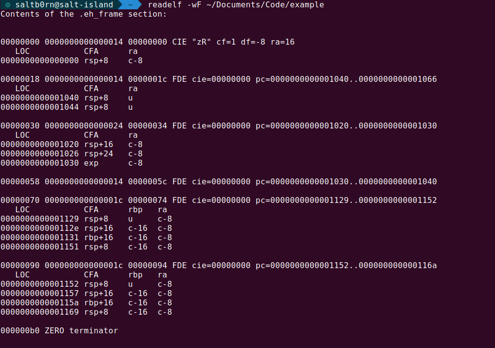
Figure 61: readelf -wF example (该截图和这里的代码无关)
在聊
.cfi_def_cfa_offset之前, 需要先了解一下什么是CFA, 它的全称是 "Canonical Frame Address";按照 DWARF spec 定义,
CFA的值应该是在调用函数时(也就是call func时)栈指针(*sp)的值,这个时候栈指针指向的是函数的栈顶位置, 也就是栈最低位地址, 简单来说就是栈帧的首地址.
- An area of memory that is allocated on a stack called a “call frame.” The call frame is identified by an address on the stack. We refer to this address as the Canonical Frame Address or CFA. Typically, the CFA is defined to be the value of the stack pointer at the call site in the previous frame (which may be different from its value on entry to the current frame).
(如果不太理解的话, 你也可以参考一下
SO上的这个答案).我们可以看到上面的截图有
CFA的值, 这里的.cfi_*指令就是改变 CFA 的计算规则的, 所谓的计算规则就是CFA的计算式子, 马上就有例子..cfi_def_cfa_offset 16指令是生成一份调试信息, 告诉我们当前位置相对于CFA偏移 16 字节, 这点先稍后回来讲..cfi_offset 6, -16就是把 6 号寄存器的上一个值保存在 \(CFA - 16\) 的位置上, 可问题是 6 号寄存器究竟是什么呢?可以在
ABI规范DWARF Register Number Mapping部分看到寄存器以及其编号, 6 号寄存器是RBP.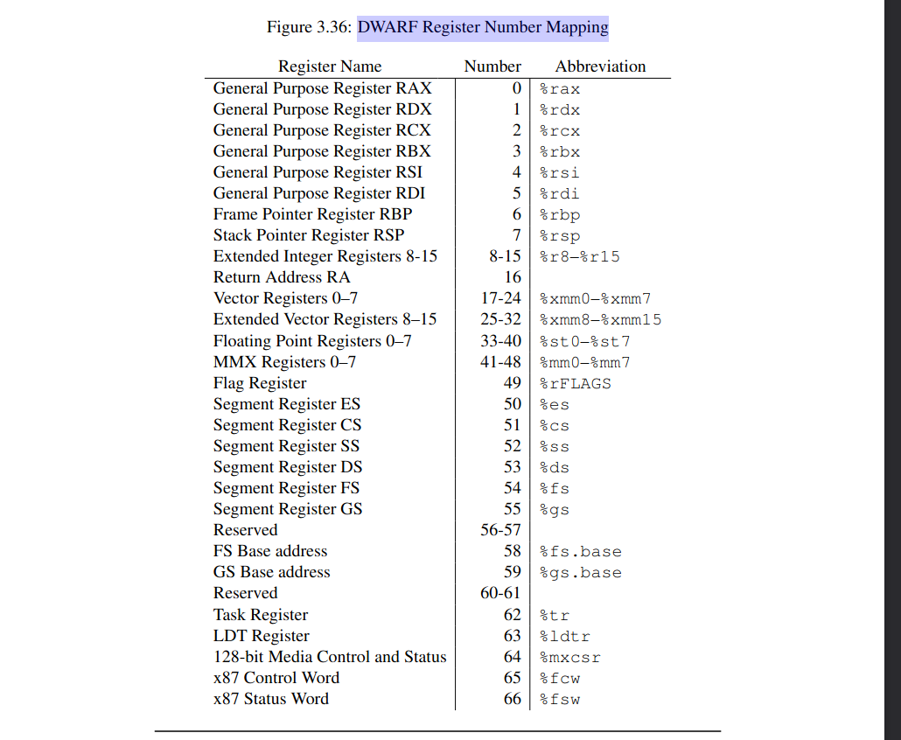
Figure 62: DWARF Register Number Mapping
.cfi_def_cfa_register 6是使用 6 号寄存器来计算CFA,CFA的计算规则现在是 \(CFA = \%rbp + 16\), 这里的 16 是前面的.cfi_def_cfa_offset 16设定的..cfi_def_cfa 7, 8是重新定义了CFA的计算规则, 使用 7 号寄存器(RSP), 偏移设置为 8 个字节, 也就是 \(CFA = \%rsp + 8\).实际上
.cfi_startproc和.cfi_end_proc也会改变CFA的计算规则: \(CFA = \%rsp + 8\), 这点可以通过readelf -wF来确认.
9.11.4. C 语言是如何与汇编对应的
老实说, 这里不可能把所有东西都囊括, 只能讲一些 C 语言最常见的内容被 GNU 编译成汇编是怎么样的,
包括栈帧(stack frame), 参数传递(parameter passing), 函数返回(return value), 变量(variables), 指针(pointers)以及结构体(struct).
很多其它东西只能自己阅读 System V Application Binary Interface 来学习.
我这里就配合例子把第三章节内容解释一遍, 这个章节是最重要的基础.
(就是个人对 ABI 规范文档的阅读笔记).
- 例子一: sqlite3 的使用
为此我准备了一个稍微复杂一点的程序: 对
sqlite数据库执行SELECT语句.// exampledb.c #include <stdio.h> #include <sqlite3.h> static int callback(void* data, int count, char** row, char** col) { fprintf(stderr, "%s", (const char*)data); for (int i = 0; i < count; i++) { printf("Field.%d: %s = %s\n", i+1, col[i], row[i] ? row[i]: "NULL"); } printf("\n"); return 0; } int main(int argc, char* argsv[]) { sqlite3 *db; char *errmsg = 0; int rc; rc = sqlite3_open("Example.db", &db); if (rc) { fprintf(stderr, "Can't open database: %s\n", sqlite3_errmsg(db)); return 1; } fprintf(stderr, "Opened database successfully\n"); char *select_sql = "select * from ANIMATION;"; const char* data = "Callback function called:\n"; rc = sqlite3_exec(db, select_sql, callback, (void*)data, &errmsg); if (rc != SQLITE_OK) { fprintf(stderr, "SQL error: %s\n", errmsg); sqlite3_free(errmsg); } else { fprintf(stdout, "Operation done successfully\n"); } sqlite3_close(db); return 0; }
我们所获得到的汇编码是这样的,
.file "exampledb.c" .text .section .rodata .LC0: .string "NULL" .LC1: .string "Field.%d: %s = %s\n" .text .type callback, @function callback: .LFB0: .cfi_startproc pushq %rbp .cfi_def_cfa_offset 16 .cfi_offset 6, -16 movq %rsp, %rbp .cfi_def_cfa_register 6 subq $48, %rsp movq %rdi, -24(%rbp) movl %esi, -28(%rbp) movq %rdx, -40(%rbp) movq %rcx, -48(%rbp) movq stderr(%rip), %rdx movq -24(%rbp), %rax movq %rdx, %rsi movq %rax, %rdi call fputs@PLT movl $0, -4(%rbp) jmp .L2 .L5: movl -4(%rbp), %eax cltq leaq 0(,%rax,8), %rdx movq -40(%rbp), %rax addq %rdx, %rax movq (%rax), %rax testq %rax, %rax je .L3 movl -4(%rbp), %eax cltq leaq 0(,%rax,8), %rdx movq -40(%rbp), %rax addq %rdx, %rax movq (%rax), %rax jmp .L4 .L3: leaq .LC0(%rip), %rax .L4: movl -4(%rbp), %edx movslq %edx, %rdx leaq 0(,%rdx,8), %rcx movq -48(%rbp), %rdx addq %rcx, %rdx movq (%rdx), %rdx movl -4(%rbp), %ecx leal 1(%rcx), %esi movq %rax, %rcx leaq .LC1(%rip), %rdi movl $0, %eax call printf@PLT addl $1, -4(%rbp) .L2: movl -4(%rbp), %eax cmpl -28(%rbp), %eax jl .L5 movl $10, %edi call putchar@PLT movl $0, %eax leave .cfi_def_cfa 7, 8 ret .cfi_endproc .LFE0: .size callback, .-callback .section .rodata .LC2: .string "Example.db" .LC3: .string "Can't open database: %s\n" .LC4: .string "Opened database successfully\n" .LC5: .string "select * from ANIMATION;" .LC6: .string "Callback function called:\n" .LC7: .string "SQL error: %s\n" .LC8: .string "Operation done successfully\n" .text .globl main .type main, @function main: .LFB1: .cfi_startproc pushq %rbp .cfi_def_cfa_offset 16 .cfi_offset 6, -16 movq %rsp, %rbp .cfi_def_cfa_register 6 subq $64, %rsp movl %edi, -52(%rbp) movq %rsi, -64(%rbp) movq %fs:40, %rax movq %rax, -8(%rbp) xorl %eax, %eax movq $0, -32(%rbp) leaq -40(%rbp), %rax movq %rax, %rsi leaq .LC2(%rip), %rdi call sqlite3_open@PLT movl %eax, -44(%rbp) cmpl $0, -44(%rbp) je .L8 movq -40(%rbp), %rax movq %rax, %rdi call sqlite3_errmsg@PLT movq %rax, %rdx movq stderr(%rip), %rax leaq .LC3(%rip), %rsi movq %rax, %rdi movl $0, %eax call fprintf@PLT movl $1, %eax jmp .L12 .L8: movq stderr(%rip), %rax movq %rax, %rcx movl $29, %edx movl $1, %esi leaq .LC4(%rip), %rdi call fwrite@PLT leaq .LC5(%rip), %rax movq %rax, -24(%rbp) leaq .LC6(%rip), %rax movq %rax, -16(%rbp) movq -40(%rbp), %rax leaq -32(%rbp), %rcx movq -16(%rbp), %rdx movq -24(%rbp), %rsi movq %rcx, %r8 movq %rdx, %rcx leaq callback(%rip), %rdx movq %rax, %rdi call sqlite3_exec@PLT movl %eax, -44(%rbp) cmpl $0, -44(%rbp) je .L10 movq -32(%rbp), %rdx movq stderr(%rip), %rax leaq .LC7(%rip), %rsi movq %rax, %rdi movl $0, %eax call fprintf@PLT movq -32(%rbp), %rax movq %rax, %rdi call sqlite3_free@PLT jmp .L11 .L10: movq stdout(%rip), %rax movq %rax, %rcx movl $28, %edx movl $1, %esi leaq .LC8(%rip), %rdi call fwrite@PLT .L11: movq -40(%rbp), %rax movq %rax, %rdi call sqlite3_close@PLT movl $0, %eax .L12: movq -8(%rbp), %rcx xorq %fs:40, %rcx je .L13 call __stack_chk_fail@PLT .L13: leave .cfi_def_cfa 7, 8 ret .cfi_endproc .LFE1: .size main, .-main .ident "GCC: (Ubuntu 7.5.0-3ubuntu1~18.04) 7.5.0" .section .note.GNU-stack,"",@progbits
- 栈帧 (Stack Frame)
其实源代码和汇编码还是挺一对一的, 首先是第一个函数
callback, 然后再到入口函数main, 这和C源码上下文一致.需要注意的是
main并非程序真正的入口, 真正入口还是_start标签,main只是在_start里被调用而已.我们就从这个伪入口开始讲起, 从源代码里可以看到
main接受两个参数:argc以及argsv, 类型分别是int以及char* [].在汇编码里可以看到
main的第一步就是先建立栈帧, 再把函数使用到的局部变量(参数也属于局部变量)全部保存在栈帧里面.栈帧可以看作函数被调用在内存上的布局,
GCC会计算出函数的局部变量需要n个字节的内存, 然后把栈指针rsp指向到 \(\%rbp - n\) 上.局部变量空间的大小取决于变量类型,
GCC会根据变量类型来判断要分配的大小.pushq %rbp # 备份 %rbp movq %rsp, %rbp # 把调用者 (这里是 _start) 的 %rsp 寄存器的值储存到 %rbp 上 subq $64, %rsp # %rsp = %rsp - 64
局部变量储存在 \(\%rbp\) 和 \(\%rsp - 64\) 的范围内.
在使用
C语言开发的时候可能会要用到一些大小不固定的数据, 这种数据就无法单纯靠栈来储存, 因为储存局部变量的空间大小是编译器在编译的时候确定的.也就是在产生汇编码是确定的, 这种大小不固定的数据的大小是在程序运行时发生改变的, 总不能在程序运行时改变程序自己吧.
我们在后面将指针的时候会详细介绍这种数据.
之后在栈帧上进行数据读写都不会通过修改 \(\%rsp\) 来完成,
GCC根据 \(\%rbp\) 的值给每个变量计算并分配好各自地址, 读写数据就是通过这些地址来完成.就像
main的第一个参数argc是int类型, 占 4 个字节, 根据x86-64 ABI的调用规范, 第一个标量参数是存放在 \(\%rdi\) 寄存器上的,由于
argc只占用了 4 个字节, 所以就有了movl %edi, -52(%rbp);然后第二个参数
argsv是一个字符串指针的数组, 要知道的是数组本身就是一个内存地址, 所以它占用 8 个字节,第二个参数是通过
%rsi传进来的, 所以就有了movl %rsi, -64(%rbp).这就是
main的第一个参数和第二个参数被存在栈里面的过程, 它们的布局类似于 Stack in i386 ABI.仔细看的话你会发现一个奇怪的地方: 第一个参数的数据只有4个字节, 第二个参数的数据大小可以从 \(\%rsi\) 看出只要 8 个字节, 那么为什么两个数据之间的首地址相差了 12 个字节?
其实就是之前讲过的对齐16字节边界, 这里面有 4 字节空间是空出来的.
然而并非所有函数都有
subq $n, %rsp这样的指令来创建为局部变量分配空间, 那么什么时候有这个指令呢? 现在给你解答.x86-64规范的栈帧比i386规范的还多出一个red zone的概念, 它是指 \(\%rsp\) 以下的 128 字节大小空间, 范围是 \(\%rsp - 128\) 到 \(\%rsp\), 并且 约定 信号(signal)或者软中断是不能修改这块区域的.如果 \(\%rsp\) 发生了改变(PUSH/POP/MOV etc),
red zone位置也会发生改变.Red zone使用来储存一些不用于跨函数请求的临时数据, 而对于一些叶子函数(leaf function, 即函数体内没有任何函数调用)会使用这个区域做为它的整个栈帧,这个时候叶子函数是不需要调整 \(\%rsp\) 来分配栈帧的, 也就是没有
subq $n, %rsp这种语句了;另外一种情况就是开发人员手动把
red zone的生成选项关闭, 比如Linux的内核开发就是这么要求的.最后根据
x86-64版的规范, 栈帧长这样:
Figure 63: stack frame
- Stack canaries
在处理好参数后有这样的指令,
movq %fs:40, %rax movq %rax, -8(%rbp) xorl %eax, %eax
要理解它们要先理解一个概念:
stack canaries, 这个例子里面的%fs:40的值就是作为stack canary, 这个值就是通过分段寻址(segmented addressing)获得的.在前面就提过, 从保护模式开始段寄存器就被操作系统接管了, 也就是这个值也是由操作系统生成的.
实际上
stack cannary的生成方式各不相同的,GCC这样采用操作系统生成的值只是其中一种方式而已.stack canary它被用来进行栈保护检查(stack-guard check), 避免程序因buffer overflow受到攻击.这一段的作用是把
stack canary储存到栈的底部:-8(%rbp)上.在
main函数的后面有这么一段,.L12: movq -8(%rbp), %rcx xorq %fs:40, %rcx je .L13 call __stack_chk_fail@PLT .L13: leave .cfi_def_cfa 7, 8 ret .cfi_endproc
这段就是进行栈保护检查, 这里是使用
xorq %fs:40, %rcx来判断%fs:40是否和%rcx一样,一样就证明没有问题, 跳转到
.L13退出函数; 否则表明受到恶意程序的攻击, 调用__stack_chk_fail@PLT.GCC也支持在编译时选择不进行栈保护检测, 就算启用了也不一定是所有函数都要进行检测, 比如这个例子里的callback函数, 这方面可以看看这个链接里面关于安全的小节: CS 105: Computer Systems. - 变量名字 (variables)
在高级语言里面, 变量的名字是非常重要的, 读写数据都要依靠它们来完成, 然而在汇编层面上完全看不到一个变量的名字, 取而带之的是一个有效地址, 因此我们不能在汇编码上找得到
argc和argsv这两个参数名.想要读懂汇编里面的有效地址对应哪个变量, 只能通过上下文推导.
而推导的第一线索就是函数的传参, 这能够成为线索主要有两个原因:
- 函数名字没有被有效地址取代;
- 程序基本很上的内容就是在给函数准备参数, 而变量就是这些参数, 而函数传参又是有规范的, 根据规范和函数用法可以反推出这些参数对应哪些变量.
就拿
main里面的db这个局部变量来说, 想找到它对应哪个有效地址, 可以通过找到接受它作为参数的函数, 可以看到有sqlite3_open和sqlite3_exec这两个函数调用了它.比如
C源码里sqlite3_open的第二个参数就是&db, 也就是db的地址, 只要在call sqlite3_open@PLL前找到最近的一条设置rsi寄存器值的指令, 就能够找到变量db的有效地址.按照这个思路可以定位到以下汇编码,
leaq -40(%rbp), %rax movq %rax, %rsi leaq .LC2(%rip), %rdi call sqlite3_open@PLT
&db对应的值就是有效地址-40(%rbp), 这个地址上储存的值就是db的值;而
db的类型是sqlite3 *, 它是一个指针, 从leaq的q断定出它的占用 8 个字节, 这正好对应一个 64 位内存地址的大小,没错, 指针正是用来储存内存地址的, 这个内存地址是某块内存区域的首地址, 也就是说
db指向了一个sqlite3数据所在的内存区块的首个地址.其中
.LC2(%rip)这种用法并非指标签.LC2加上%rip的值, 根据 GAS 的内存地址文档 的说明, 它是指.LC2的相对地址, 这种叫做 RIP 相对寻址 (RIP Addressing), 这是属于 CPU 的寻址方式, 在程序运行时解析出标签的地址.下面你还看到
stderr(%rip)这个也是用了 RIP 相对寻址.再来看另外一个例子
sqlite3_exec, 它的第三个参数是函数的地址,反正只要这个变量在某个地方被使用了, 那么就一定有办法可以找到它的有效地址; 而对于没有被使用过的变量,
GCC是不会为它们分配空间的.
- 栈帧 (Stack Frame)
- 例子二: 结构体
sqlite3是一个结构体,C语言的结构体(structures)本质上就是一个连续的内存.(本来想用
sqlite3的定义作为例子的, 结果它的定义真的是太复杂了, 所以我自己写了个例子).比如下面的这段代码, 有一个
Person的结构体变量example,它的第一个成员(member)
name就是这块内存的首地址, 是-32(%rbp),char *类型, 占用 8 个字节;第二个成员
age的地址是-24(%rbp), 是int类型, 占用 4 个字节;第三个成员
codepoint的地址是-20(%rbp), 是char类型, 占用 1 个字节;第四个成员
height的地址是-16(%rbp), 是float类型, 占用 4 个字节;codepoint和height之间空出了 3 个字节, 这 3 个字节使用来做对齐的.最后
ptr的值就是name的地址, 代码如下:// struct-in-c.c int main(int argc, char* argvs) { typedef struct { char *name; int age; char codepoint; float height; } Person; Person example; example.name = "Jack"; example.codepoint = 'c'; example.age = 18; example.height = 176.0; Person *ptr = &example; (*ptr).name = "Nick"; // ptr->name = "Nick"; return 0; }
.file "struct-in-c.c" .text .section .rodata .LC0: .string "Jack" .LC2: .string "Nick" .text .globl main .type main, @function main: .LFB0: .cfi_startproc endbr64 pushq %rbp .cfi_def_cfa_offset 16 .cfi_offset 6, -16 movq %rsp, %rbp .cfi_def_cfa_register 6 subq $64, %rsp movl %edi, -52(%rbp) movq %rsi, -64(%rbp) movq %fs:40, %rax movq %rax, -8(%rbp) xorl %eax, %eax leaq .LC0(%rip), %rax movq %rax, -32(%rbp) ; name movb $99, -20(%rbp) ; codepoint movl $18, -24(%rbp) ; age movss .LC1(%rip), %xmm0 movss %xmm0, -16(%rbp) ; height leaq -32(%rbp), %rax movq %rax, -40(%rbp) ; *ptr movq -40(%rbp), %rax leaq .LC2(%rip), %rdx movq %rdx, (%rax) movl $0, %eax movq -8(%rbp), %rdx subq %fs:40, %rdx je .L3 call __stack_chk_fail@PLT .L3: leave .cfi_def_cfa 7, 8 ret .cfi_endproc .LFE0: .size main, .-main .section .rodata .align 4 .LC1: .long 1127219200 .ident "GCC: (Ubuntu 11.2.0-19ubuntu1) 11.2.0" .section .note.GNU-stack,"",@progbits .section .note.gnu.property,"a" .align 8 .long 1f - 0f .long 4f - 1f .long 5 0: .string "GNU" 1: .align 8 .long 0xc0000002 .long 3f - 2f 2: .long 0x3 3: .align 8 4:
- 例子三: 阅读规范中的参数传递和函数返回 (Parameter Passing and Returning of values)
System V x86-64 ABI把寄存器和数据类型分别进行了分类, 目的是规定什么类型的寄存器储存什么类型的数据.原文很多名词都没有进行解释, 所以阅读起来会极其困难, 有些算法描述得也不太易懂, 本人针对这两点进行了翻译.
规范里面使用字节(byte)表示
8-bit对象, 两字节(twobyte)表示16-bit对象, 四字节(fourbyte)表示32-bit对象,八字节(eightbyte)表示
64-bit对象, 以及十六字节(sixteenbyte)表示128-bit对象.- 数据表征 (fundamental types)
不同版本的
C标准所支持的数据类型是不太一样的,所以如果在实际编码时发现有些数据类型不存在, 那么就是使用的
C标准还未支持这些数据类型.根据数据表征划分, 数据类型分为:
基础类型(标量);
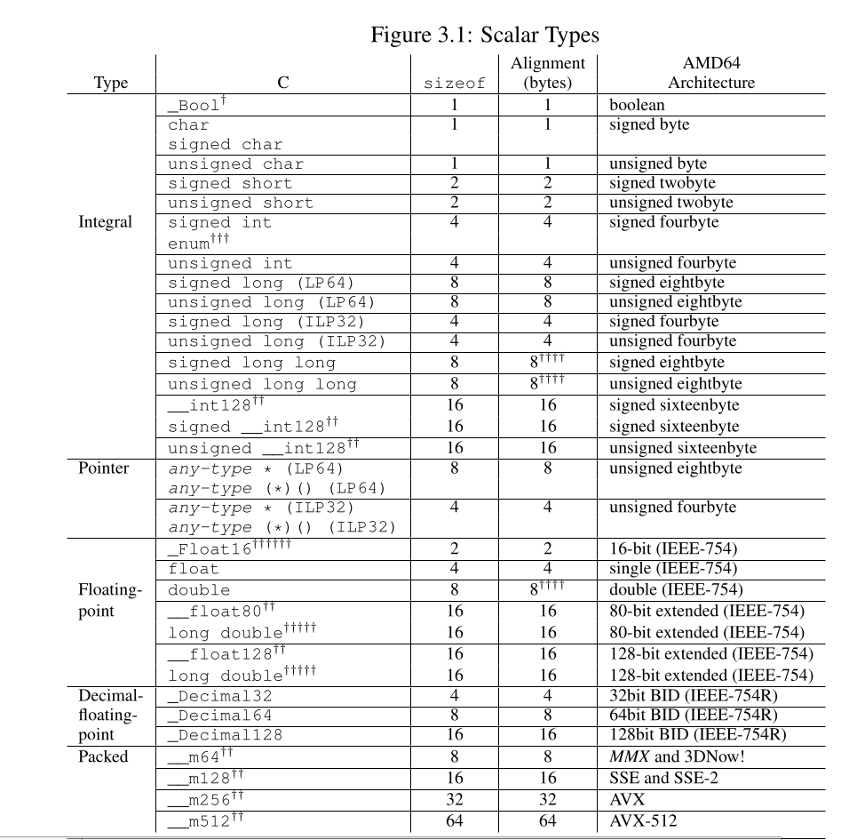
Figure 64: ISO标准和处理器之间的标量类型对应关系
N-bit整数, 分_BitInt(N)和unsigned _BitInt(N), 所有的整数类型都属于N-bit整数的旗下;特殊类型, 有
__bf16,32-bit IEEE 754的16-bit版本;集合体和联合体(
aggregates and unions), 集合体就是C语言的结构体;还可以给集合体或联合体的字段指定储存的位宽, 这个位宽就是位域(bit fields),
struct date { int d: 5; // 日期范围为 1 ~ 31, 所以 5 位足够 int m: 4; // 月份位 1 ~ 12, 所以 4 位足够 int y; }
- 寄存器
AMD64(x86-64的别称) 提供如下寄存器:16 个
64-bit宽的通用寄存器;16 个
128-bit宽的SSE (Streaming SIMD Extensions)寄存器, 分别是XMM0 - XMM15;8 个
80-bit宽的x87浮点寄存器(, 也可以被称为MMX或3DNOW!), 分别是MM0 - MM7.Intel AVX (Advanced Vector Extensions)提供了 16 个256-bit宽的AVX寄存器(YMM0 - YMM15),AVX寄存器的低128-bit被别名为SSE寄存器的XMM0 - XMM15.Intel AVX-512提供了 32 个512-bit宽的SIMD寄存器 (ZMM0 - ZMM31),AVX-512寄存器的低256-bit被别名为YMM0 - YMM31,在传参和函数返回上,
XMMn/YMMn/ZMMn三个实际上是指同一个寄存器, 后者是前者的拓展, 在同一时间内只能用其中一个,我们把
SSE/AVX/AVX-512寄存器也被统称为向量寄存器(vector register);此外,
Intel AVX-512还提供了 8 个64-bit宽的向量掩码寄存器(vector mask register,K0 - K7).Intel AMX (Intel Advanced Matrix Extensions)是用来储存矩阵数据的, 目前很少用到它, 我们只要知道TMM0 - TMM7是它的寄存器就好.有些寄存器是属于调用者的, 有
RBP,RBX,R12以及R15, 这种寄存器叫做被调用者保存寄存器(callee-saved registers).函数需要把这类寄存器的值储存到它们自己的栈帧中, 就比如
RBP, 每个函数的第一个指令基本都是pushq %rbp, 在返回前使用popq %rbp或者leave来把储存的值恢复到%rbp上.无论经过什么样的一个调用过程, 对于每一个被调用的函数来说, 每个函数都有属于自己的
RBP的值并且不会因为其它的函数调用发生改变, 这就是跨调用保留(preserved across calls). - 参数传递
参数类别
INTEGER: 可以使用一个通用寄存器储存的整数属于该类型;SSE: 可以用一个矢量寄存器储存的数据属于该类型;SSEUP: 适用与一个矢量寄存器储存并且可以通过寄存器的上半部分字节(upper bytes)进行传递和返回的数据属于该类型;X87/X87UP/COMPLEX_X87: 通过x87 FPU返回的数据类型属于该类型;NO_CLASS: 分类算法里面的初始类别. 填充用, 空集合体和空联合体的数据就属于该类;MEMORY: 要通过栈上的内存传递和返回的数据就属于该类型.对参数进行分类
在规范文档里面, 这一块的描述不太容易理解, 我自己最后还是找GCC 的实现(个人笔记版备份)的
classify_argument函数定义来看才略微理解.GCC的实现和文档上的有点出入, 但整体上差不太多.还有需要注意的是, 编译器对最新规范的支持是有滞后性的, 所以即便读懂了该规范也要根据自己使用的
C标准和编译器的情况来使用.每个参数的大小都是 8 字节对齐.
_Bool,char,short,int,long,long long以及指针属于INTEGER._Float,float,double,_Decimal32,_Decimal64以及_m64属于SSE.__float128,_Decimal128以及__m128会被对半分成两部分, 最低有效的部分属于SSE, 最高有效的部分属于SSEUP.__m256分成 4 个 8 字节块 (eightbyte chunk), 最低有效的部分属于SSE, 其它部分属于SSEUP.__m512分成 8 个 8 字节块， 最低有效的部分属于SSE, 其它部分属于SSEUP.long double的64-bit尾数(64-bit mantissa)属于X87,16-bit的指数(16-bit exponent)加上 6 字节的填充属于X87UP.__int128提供和INTEGER的通常操作, 但__int128要用两个通用寄存器进行储存.为了方便分类,
__int128就像是如下的结构体实现:typedef struct { long low, high; } __int128;
只是内存中的
__int128数据得要 16 字节对齐.等一下会讨论结构体的参数分类.
当
_BitInt(N)的 \(N \le 64\) 时,_BitInt(N)属于INTEGER;当
_BitInt(N)的 \(N \gt 64\) 时, 就把_BitInt(N)就像__int128那样分类成一个字段宽为64-bit的结构体.complex T类型(也就是复数)中的T是_Float16,float,double或__float128中的一个,complex T就会像如下结构体那样被进行分类:struct complexT { T real; T imag; };
complex long double会被分类为COMPLEX_X87.- 集合体(结构体和数据)和联合体, 分类算法流程如下:
- 如果对象的大小超出 8 个 8 字节, 或者包含未对齐字段, 那么它就被分类为
MEMORY. 如果一个
C++对象难以用在函数调用的目的上, 那么就和C++ ABI规定的那样使用一个不可见的引用进行传递.具体做法就是把参数列表上的该对象会被替换成一个
INTEGER类的指针.- 如果对象是集合体, 并且集合体的大小大于 8 字节, 那么把集合体划分成多个 8 字节大小的块, 为每个块就进行单独分类. 每个块被初始化为
NO_CLASS. 对象的每个字段也需要分类, 这个过程是递归的, 正因如此, 集合体和联合体会有很多个"候选"类别.
每个字段的分类需要根据字段和对应的 8 字节块(在上一步被初始化为
NO_CLASS)两者的自身类别进行综合考虑, 考虑结果就是作为"候选"类别.规则如下:
a. 如果两者的类别都一样, 那么该类别就是作为"候选"类别.
b. 如果其中一个的类别是
NO_CLASS, 那么就以另外的对象的类型作为"候选".c. 如果其中一个的类别是
MEMORY, 那么"候选"类别就是MEMORY.d. 如果其中一个的类别是
INTEGER, 那么"候选"类别就是INTEGER.e. 如果其中一个的类别是
X87,X87UP,COMPLEX_X87, 那么"候选"类别就是MEMORY.f. 如果前面的规则都不符合, 就以
SSE作为"候选"类别.当经过前面的分类后, 就要开始进行合并清理(post merger cleanup)过程,
这个过程就是根据"候选"类别来决定对象如何传递, 规则如下:
a. 如果集合体里面有一个字段的类别是
MEMORY, 那么整个参数就通过内存传递.b. 如果
X87UP的前面不是X87, 那么, 整个参数就通过内存传递.c. 如果集合体的大小超出 2 个 8 字节, 并且第 1 个 8 字节不是
SSE类别或其它的 8 字节不是SSEUP, 那么整个参数就通过内存传递.d. 如果
SSEUP的前面不是SSE或SSEUP, 那么它就被转为SSE来处理.
- 如果对象的大小超出 8 个 8 字节, 或者包含未对齐字段, 那么它就被分类为
参数传递
一旦参数被分好类, 寄存器和栈就会被赋值为这些参数数据.
- 如果为
MEMORY类型, 那么就把参数传递到栈上的某个地址上, 并且该地址遵守参数的对齐. - 如果为
INTEGER类型, 那么就使用依次使用%rdi,%rsi,%rdx,%rcx,%r8,%r9进行传递. - 如果为
SSE类型, 那么依次使用xmm0到xmm7来传递. - 如果为
SSEUP类型, 那么 8 字节数据就被传递到上一次使用过的向量寄存器中的下一个可用的 8 字节块中. - 如果为
X87,X87UP,COMPLEX_X87类型, 就被传递到内存上.
值的返回
- 函数在返回时同样要对返回值进行分类, 与参数分类的算法是一致的.
- 如果返回值类型是
MEMORY, 调用者得先为被调用者返回值提供内存空间, 并且把返回值储存在提供的内存上, 以及把内存的地址储存在%rdi上. 在被调用者进行返回的时候,%rdi上的地址会被赋值到%rax上. - 如果返回值类型是
INTEGER, 那么依次使用%rax,%rdx. - 如果返回值类型是
SSE, 那么依次使用%xmm0,%xmm1. - 如果返回值类型是
SSEUP, 那么返回 8 字节到上一次使用过的向量寄存器中的下一个可用的 8 字节块中. - 如果返回值类型是
X87, 那么值以一个80-bit宽的X87数被返回%st0上. - 如果返回值类型是
X87UP, 那么值就和上一个X87值一起被返回到%st0上. - 如果返回值类型是
COMPLEX_X87, 那么复数的实部(real part)被返回到%st0上, 虚部(imaginary part)被返回到%st1上.
寄存器的用法
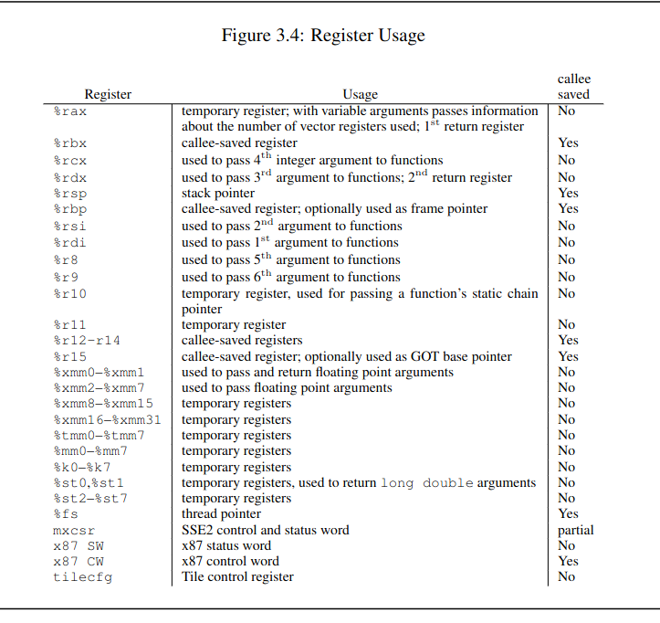
Figure 65: x86-64 寄存器的用法
- 数据表征 (fundamental types)
- 个人学习心得
还有很多东西没有提到, 比如
GCC会把C的结构体,switch语句,if语句等等编译成什么样, 这些内容就需要靠自己学习了.经过这一路的学习, 我相信你必定会觉得这样找出汇编代码和
C源代码之间的对应关系好累的,我这里提供三个方便阅读汇编的方法:
# 1. 使用 gcc 编译出带有调试信息的汇编代码, 这样汇编代码会带 =.loc= 指令来告诉你它下面的汇编对应源代码的哪一行 gcc -S -g main.c -o main.asm # 2.1 先使用 gcc 编译出带调试信息的目标 gcc -S -g main.c -o main # 2.2 再使用 objdump 输出和源代码交错的汇编代码 objdump -d -S main > main.asm # 3. 使用 -fverbose-asm 选项产生源代码注释 gcc -fverbose-asm -S main.c -o main.asm
个人推荐去阅读书本
Computer System A Programmer's Perspective 3rd(简称CSAPP) 的第三章, 边阅读边实践.最后说一下个人观点, 汇编就应该作为学习
C语言的基础, 而在学习C时需要时刻想着"写的东西会编译成什么样".之所以这么认为, 是因为很多教学都只着重教语法, 栈, 内存分配等等这些概念虽然有讲, 但这些概念是十分难表述清楚的, 不见过"实物"很难理解.
就内存分配来说, 很多人都不知道什么时候需要使用
malloc分配内存, 分配多少, 什么时候使用free进行销毁.如果学过汇编你就会知道函数的局部变量是储存在栈帧上的, 而栈帧是在调用函数时才被进行分配的, 在函数调用结束后栈帧就会被销毁, 当然栈帧上的数据跟着被销毁.
一旦知道知道了这些, 就能明白什么才是内存分配/销毁的时机了.
简单来说, 分配内存目的就是让函数里局部变量的数据能够在函数结束后也能被访问到, 如果有这样的意图, 那么就需要分配内存;
当然这不是唯一的原因(不过也算是主要原因了), 比如还有需要储存不定量数量的数据, 可能就需要有多少分配多少了, 像链表这种就是.
使用
malloc分配内存需要指定内存区块大小, 分配成功后就会返回这块内存区域的首位地址(也就是C/C++的指针), 之后的访问以及销毁操作都需要通过这个地址来完成,开发人员需要做好保存该地址的工作, 在不需要的该内存区域时使用
free进行释放, 而这个操作需要该内存区域的首位地址作为free的参数.如果没有保存好内存地址,那么在程序运行的过程中无法通过
free进行内存释放,如果程序后面还会进行内存分配,这块内存区域就无法被重新利用来储存新数据,导致程序的可用内存越来越少.这种情况叫做 内存泄露 (memory leak),这些无法通过手动释放的内存只能在程序结束运行后被释放;
一两次小泄露可以忽略不计, 但发生的次数变多了的话, 程序运行时占用的内存大小 可能会超过 系统分配给程序的内存大小, 导致程序被系统结束运行,这种情况叫做 内存溢出 (out of memory).
所以汇编作为
C的基础完全没有问题.
9.12. 机器码和字节码
通过汇编层面去了解一个程序是十分有趣的一件事情,可以了解到程序的什么地方可以优化,
但是有些另类的程序并不像 C 程序那样由机器码组成,想要给它们优化就得了解一个概念: 字节码(bytecode).
和机器码一样,字节码本质上也是二进制位序列,两者差别在于字节码并非直接由 CPU 来解析执行.
由一种叫做虚拟机(virtual machine, VM)的程序解析执行,因为它能够像 CPU 一样可以根据二进制位序列来做出对应行为.
这就是"另类的程序"能够运行的真相: 依靠虚拟机来运行.
虚拟机也有指令和助记符这些概念,类似于同架构的 CPU 所支持的指令不一样,不同的虚拟机所支持的指令也是不一样的.
如果一个虚拟机所支持的指令和 CPU 所支持的指令一样,并且该虚拟机的解释行为就和 CPU 的一样,那么这个虚拟机就是模拟了一台物理机器,可以在这个虚拟机上面运行一个操作系统.
这种模拟物理机器的的虚拟机叫做系统虚拟机(system virtual machine),常见的有 VMware, VirtualBox.
此外,一些编程语言的实现也会采用虚拟机,就像 GCC 编译器会先把 C 语言编写的源代码编译成汇编码,再汇编成机器码一样,
这些编程语言的实现会把源代码编译成字节码,然后由对应虚拟机解释执行,这种虚拟机叫做进程虚拟机(process virtual machine),
常见的编程语言 Java, Python, JavaScript 等等就有虚拟机,有些甚至支持把字节码再编译成字节码.
虚拟机的实现方法主要有两种: 基于栈进行计算的堆栈机(stack machine),以及基于寄存器进行计算的寄存器机(register machine);这也是两种计算模型.
我们学习的 x86 CPU 就是寄存器机,你可能会说,"不对,我们前面不是还有学过栈的相关指令吗,为什么 x86 CPU 会是寄存器机?"
这是因为 x86 CPU 的栈主要是用来临时储存数据的,主体计算工作依然是由寄存器来完成,所以才说 x86 CPU 是寄存器机.
而反过来,堆栈机也是一样,可能会有少量寄存器来做储存,用栈完成计算工作.
现实中, CPU 也可以采用堆栈机设计,不过很少这么做,常规 CPU 都是寄存器机设计.
如果虚拟机和 CPU 的计算模型一样,那么该虚拟机的字节码更加容易编译成该 CPU 的机器码.
为了更加直观清楚两者的差别,可以看一下在两种不同计算模型下,进行 \(2 + 3\) 的计算是什么样的一个过程,
堆栈机:
PUSH 2 // 把立即数 2 压进栈 PUSH 3 // 把立即数 3 压进栈 ADD // 让两个栈入口的两个元素弹出,对它们进行相加: 2 + 3 = 5 ,再把结果 5 压进栈
寄存器机:
LOAD R1, 2 // 把立即数 2 加载进寄存器 1 中 LOAD R2, 3 // 把立即数 2 加载进寄存器 2 中 ADD R1, R2 // 把寄存器 R1 和 R2 上的两个数据进行相加: 2 + 3 = 5 ,再把结果 5 储存进寄存器 R1 上
常见的编程语言实现中, V8(JavaScript) 的虚拟机就是寄存器机, 官方 Python 的虚拟机就是堆栈机.
一旦你知道虚拟机是采用哪种实现, 你就可以知道如何阅读它们的字节码了, 当然你还要有它们的字节码说明.
10. 可执行二进制文件格式 - ELF
荀子曰: 不闻不若闻之, 闻之不若见之, 见之不若知之, 知之不若行之. 学至于行而止矣. 行之, 明也.
在 Linux 上, ELF 是 汇编/C 语言最终产物, 语言里面的很多概念都是为了这个最终产物而存在的, 想要真正理解这些概念, 最好就是了解这个最终产物.
这一点放到任何一门编译语言上都适用的, 就比如把 C 编译成汇编, 从汇编的角度上可以很好地看透 C 语言的内存管理;
而 ELF 作为最终产物则是可以很好让我们理解汇编某些指令的作用.
所以理解 ELF 文件是那些生活在 Linux 操作系统中优秀 汇编/C 开发人员的必备技能之一.
这个章节的目的是给读者提供一个解剖 ELF 文件的实践过程, 读完之后能够反向加深读者对汇编的理解, 以及掌握从字节的层面去分析文件的技能(并不限于 ELF 文件), 以及了解到链接器是如何链接各个模块.
10.1. 准备
我们将会使用最原始的材料作为根据去解析 ELF 文件, 本章节采用的是 glibc 的 elf 实现, glibc 是由 GNU 实现的一个 C 标准库, 你可以很轻松地在网络上获取到 glibc 的源代码.
如果你在使用 Linux 操作系统, 基本上只要一条命令就能获取到 glibc 的源码, 以我 Ubuntu 为例:
sudo apt-get install glibc-source
安装之后在 /usr/src 或者 /usr/local/src 里面就能找到 elf.h 这文件了(, 注意有两个 elf.h 文件的, 是 elf/elf.h 的那个).
光有源代码还不够, 我们需要一份对应的说明, 而 Linux 里面的有 man page 对 elf 进行介绍(man elf),
如果你的电脑不使用 Linux 系统, 那么请自备虚拟机, 后面的实践都是在 Linux 上完成的;
接下来会先编译一份简单的代码 C 代码得到一个 elf 文件来作为我们的大体老师, 用二进制编辑器打开它, 参考 elf.h 里的定义和 elf 的 man page 说明, 逐个字节阅读它.
首先我们的样例 C 代码:
// example.c int func ( int, int ); int main(int argc, char **argv) { func(1, 2); return 0; } int func ( int a, int b ) { return a + b; }
编译得到 elf 二进制文件 example (我这里是 64 位的 ELF 格式):
gcc -o example example.c
顺便编译一份 no-pie 版本:
gcc -no-pie -o example example.c
实际上每个人编译得到的
ELF文件可能会有点差异.由于这受到很多方面的影响, 为了保证和文章的一致性, 建议使用本文提供的文件进行练习:
找一个你喜欢的二进制编辑器打开它, 我个人用的是 Emacs 的 hexl-mode, 打开后界面如下:
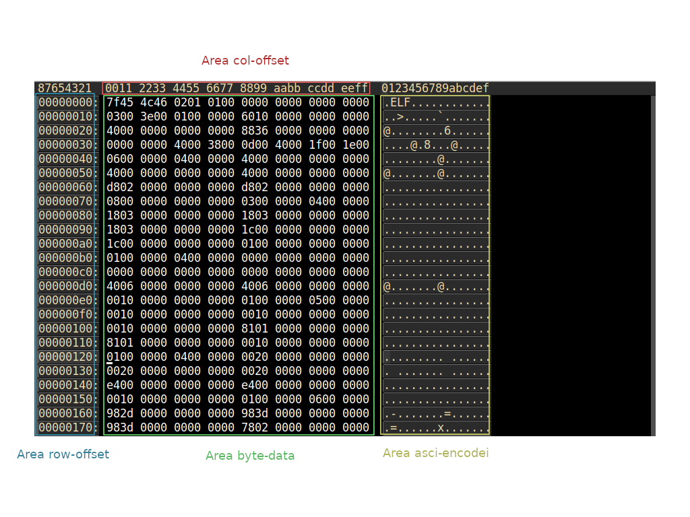
Figure 66: example 的字节
我这里用不同的颜色把几个关键的区域给框出来了:
Area byte-data 就是 elf 文件的数据, 这里是以 16 进制呈现, 每 16 个字节为一行;
Area row-offset 上的每个值都是每一行的首个字节的偏移地址, Area col-offset 则是行内的地址偏移, 都以 16 进制表示,
(这里 Area col-offset 上面的值都是 22 这种格式, 这是由于一个字节用 16 进制表示有两位, hexl-mode 这是为了标识哪两个连续位为一个字节, 所以 22 实际上就是 0x02, 这在其它二进制编辑器上显示可能会稍有不同.)
只有把这两者结合起来才能算出字节的偏移地址, 比如第二行的那个 3e 的字节偏移地址就为 0x00000010 + 0x02 => 0x00000012;
Area ascii-encoded 就是对应 Area byte-data 的 Ascii 编码, 一个字节对应一个字符.
工具和材料已经准备得差不多了, 可以开始探索 ELF 文件格式了.
ELF 文件的内容在不同状态下的布局是不一样的, 所谓的不同状态就只有 在硬盘上储存时 以及 被加载到了内存上时 两个状态而已,
这两种状态下的 ELF 文件内容布局分别叫做 链接视图 (Linking view) 以及 执行视图 (Execution view).
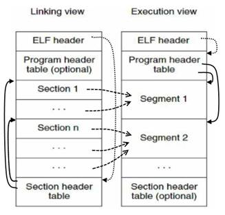
Figure 67: ELF 的链接视图以及执行视图 - 单个文件
二进制编辑器所展示的就是 ELF 的链接视图, 在把 ELF 文件载入到内存时,
在启动程序时, 链接器会按照 ELF 文件的信息把 sections 划分到对应的 segment 里面.
这里要强调一点, 不管在链接视图还是执行视图中, section 和 segment 两者是可以同时存在的,
它们两者与其说是不同的数据, 倒不如说是不同的计量单位.
在链接视图中, 一般是不会以 segment 作为讨论的数据对象; 同样反过来, 一般不会在执行视图中以 section 作为讨论的数据对象.
一个 segment 其实就是一个区域, 描述一个区域只需要知道它的位置和大小, 以及区域上储存了哪些 sections.
但需要注意的是, 链接视图中的 segment 划分和执行视图里面的是两回事, 我们会在后面讲程序头(program header)的时候详细讲到.

Figure 68: 典型的 ELF 执行文件
Segment 的存在是为了把程序分段加载进内存, 前面也有提到过程序在启动时并非整个加载进内存的, 每个 segment 的作用是不一样的.
本文主要是从链接视图的角度去进行解剖 ELF 文件.
整体上看去, 一个 ELF 文件的格式就是一个 ELF 头 (ELF header)后面跟着一个程序头表(program header table)或者一个节头表(section header table), 又或者是两者都有, ELF 头后面的数据就是 ELF 的文件数据.
10.2. ELF 头
ELF 头存在的意义是: 保证文件数据能够在链接和执行期间被正确解析. 可见 ELF 头是如此的重要.
有好多种方法可以查看到 ELF 文件的头, 最简单的就是通过 readelf 读取 ELF 的文件头:
readelf -h example
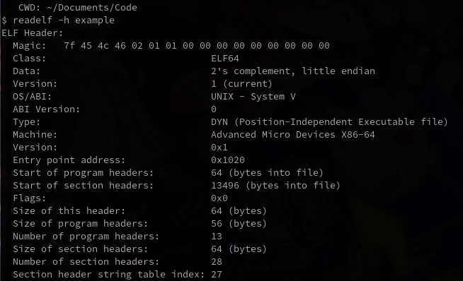
Figure 69: readelf -h example
但不要忘了这一小章节的主题是逐个字节去阅读 ELF 文件, 根据文件格式标准从二进制层面上分析文件也是一项重要能力.
况且也要了解上面显示的数据有什么意义.
在 man page 里面可以看到 32 位以及 64 位 ELF 头的通用定义:
#define EI_NIDENT 16 typedef struct { unsigned char e_ident[EI_NIDENT]; uint16_t e_type; uint16_t e_machine; uint32_t e_version; ElfN_Addr e_entry; ElfN_Off e_phoff; ElfN_Off e_shoff; uint32_t e_flags; uint16_t e_ehsize; uint16_t e_phentsize; uint16_t e_phnum; uint16_t e_shentsize; uint16_t e_shnum; uint16_t e_shstrndx; } ElfN_Ehdr;
其中 N 表示 32 或者 64. 后面统一采用 64 位作为例子.
那么怎么用这份定义呢?
C 里面的结构体的成员在内存里面是按照定义顺序储存的, 也就是说在内存里面, e_ident 一定会在 e_type 之前, e_type 一定会在 e_machine 之前, 如此类推.
成员的类型决定了成员占据多少个字节, 这也是 C 语言类型的本质: 控制数据的大小.
也就是说我们只要根据这份定义和在上面的字节一个一个的读就好.
成员名:
e_ident; 偏移范围: 0x00 - 0x0f用于标识
ELF文件标志, 好让操作系统能够识别到它是ELF文件.该成员类型是长度为 16 的
unsigned char数组, 在 32/64 位上, 一个unsigned char的大小是 1 字节, 因此按照定义该成员在内存里占用 16 个字节.e_ident又划分出具备不同含义的区域.偏移范围: 0x00 - 0x03; 字节名:
EI_MAG0, EI_MAG1, EI_MAG2, EI_MAG3; 字节值: 0x7f, 0x45, 0x4c, 0x46是一个 magic number, 表示字符串
.ELF.偏移: 0x04; 字节名:
EI_CLASS; 字节值: 0x02标识当前二进制文件的架构, 1 表示 32 位架构， 2 表示 64 位架构.
example是 64 位二进制文件.偏移: 0x05; 字节名:
EI_DATA; 字节值: 0x01标识文件数据的字节次序(
endianess), 1 是LSB, 2 是MSB.example是LSB字节序.偏移： 0x06; 字节名:
EI_VERSION; 字节值: 0x01标识着文件使用的
ELF规范版本号. 1 标识当前版本, 这个值基本上可以说是固定的.偏移: 0x07; 字节名:
EI_OSABI; 字节值: 0x00标识操作系统以及目标文件使用的
ABI.偏移: 0x08; 字节名:
EI_ABIVERSION; 字节值: 0x00标识目标文件使用的
ABI版本. 该字节目前未被使用, 默认为 0.偏移范围: 0x09 - 0x0f; 字节名:
EI_PAD; 字节值: 0x00, 0x00, 0x00, 0x00, 0x00, 0x00, 0x00统一使用 0 填充的区域, 目前没有任何实际意义, 未来可能有用.
成员名:
e_type; 偏移范围: 0x10 - 0x11; 字节值: 0x03, 0x00该成员的类型是
Elf64_Half, 该类型是 16 位大小, 也就是 2 个字节大小.用于标识目标文件类型, 1 表示可重定位文件, 2 表示可执行文件, 3 表示动态链接文件, 4 表示
core dumped文件.由于
EI_DATA是LSB, 因此example的e_type就是 3.你没看错, 真的是 3, 而不是 2.
成员名:
e_machine; 偏移范围: 0x12 - 0x13; 字节值: 0x3e, 0x00该成员的类型是
Elf64_Half, 该类型是 2 个字节大小.用于标识文件是跑在什么架构上的.
由于
EI_DATA是LSB, 因此example的e_machine的值就是0x3e, 也就是 62,对应宏定义
EM_X86_64, 也就是AMD x86-64.成员名:
e_version; 偏移范围: 0x14 - 0x17; 字节值: 0x10, 0x00, 0x00, 0x00该成员的类型是
Elf64_Word, 32位大小, 也就是 4 个字节大小.用于标识文件版本, 目前常见的统一为 1.
由于
EI_DATA是LSB, 因此example的e_version的值就是 1.成员名:
e_entry; 偏移范围: 0x18 - 0x1f; 字节值: 0x20, 0x10, 0x00, 0x00, 0x00, 0x00, 0x00, 0x00该成员的类型是
Elf64_Addr, 大小为 64 位, 也就是 8 字节大小.该成员的值是一个虚拟地址(virtual address)， 指向程序的入口.
程序入口是指在开始运行该程序时, 操作系统需要把操控权转交到的该地址上.
这个值实际上就是
_start标签的内存地址, 你可以通过以下命令来验证:
Figure 70:
objdump -d example | grep "_start"_start标签前面的地址就是0000000000001020, 刚好对应该成员的值.如果是
example-no-pie的话,_start标签的地址就是0000000000401020, 这是在程序映像中的绝对内存地址,所谓的绝对内存地址是指在每次运行程序时
_start标签的地址都是固定这个值.而
example是位置独立可执行文件(PIE, position-independent executable), 它的所有地址都是相对于程序内像首地址的偏移.换句话说, 假如程序在运行时被加载到
0000000000800000这个地址上, 那么_start的地址就是0000000000800000 + 0000000000001020,当然程序每次运行时的首地址都不是固定的, 因此在运行是
_start的地址也不是固定的.在分析程序文件的二进制数据前需要先了解程序文件是
PIE还是no-PIE, 否则在分析地址时容易分析错误.成员名:
e_phoff; 偏移范围: 0x20 - 0x27; 字节值: 0x40, 0x00, 0x00, 0x00, 0x00, 0x00, 0x00, 0x00该成员为
Elf64_Off类型, 64 位大小, 也就是 8 字节大小.该成员指示程序头表的偏移为多少个字节, 这里是
0x40, 也就是 64 个字节,也就是以
example的0x00为起点, 偏移 64 个字节后的地址, 也就是0x40, 该地址就是程序头表的首地址.如果不存在程序头表, 那么该值为 0.
成员名:
e_shoff; 偏移范围: 0x28 - 0x2f; 字节值: 0xb8, 0x34, 0x00, 0x00, 0x00, 0x00, 0x00, 0x00该成员为
Elf64_Off类型, 占 8 字节大小.该成员指示节头表的偏移为多少个字节, 这里是
0x34b8个, 也就是13496个字节.类似于
e_phoff, 从0x00开始偏移134996个字节后到达的地址0x34b8, 该地址是节头表的首地址.如果不存在节头表, 那么该值为 0.
成员名:
e_flags; 偏移范围: 0x30 - 0x33; 字节值: 0x00, 0x00, 0x00, 0x00成员类型为
Elf64_Word, 占 4 个字节大小.该成员指示处理器特定的
flags, 该成员目前未定义, 统一为 0.成员名:
e_ehsize; 偏移范围: 0x34 - 0x35; 字节值: 0x40, 0x00成员类型为
Elf64_Half, 占 2 个字节大小.指示
ELF文件头的大小,example的ELF头一共占用0x40, 也就是 64 个字节.也就是
0x00到0x3f这个范围就是ELF的文件头.成员名:
e_phentsize; 偏移范围: 0x36 - 0x37; 字节值: 0x38, 0x00成员类型为
Elf64_Half, 占用 2 个字节大小.ELF文件的程序头表里每一项(entry, 或者说程序头)大小都是一样的, 该成员指定了程序头表每一个项的大小.example程序头大小是0x38, 也就是 56 个字节.成员名:
e_phnum; 偏移范围: 0x38 - 0x39; 字节值: 0x0d, 0x00成员类型为
Elf64_Half, 占用 2 个字节.指示程序头表有多少个项. 因此
e_phnum * e_phentsize的值就是程序头表的大小.example一共有0x0d(13) 个程序头表项, 程序头表一共 \(13 \times 56 = 728\) 个字节大小.成员名:
e_shentsize; 偏移范围: 0x3a - 0x3b; 字节值: 0x40, 0x00成员类型为
Elf64_Half, 占用 2 个字节.ELF文件的节头表里每一项(或者说节头)大小都是一样的, 该成员指定了节头表每一个项的大小.example节头表项大小是0x40, 也就是 64 个字节.成员名:
e_shnum; 偏移范围: 0x3c - 0x3d; 字节值: 0x1c, 0x00成员类型为
Elf64_Half, 占用 2 个字节.ELF文件节头表有多少个项. 因此e_shnum * e_shentsize的值就是节头表的大小.example一共有0x1c, 也就是 28 个节头表项, 节头表一共 \(28 \times 64 = 1792\) 个字节大小.成员名:
e_shstrndx; 偏移范围: 0x3e - 0x3f; 字节值: 0x1b, 0x00成员类型为
Elf64_Half, 占用 2 个字节.如果
ELF文件里面存在节头表, 那它就有可能存在一个项是与节头字符串表(section header string table)存在关联, 后面会详细介绍这张表.该成员记录了关联项在节头表中的索引, 这个成员的值是
0x1b, 也就是节头表的第 27 项(从索引 0 开始算)与节头字符串表存在关联.
10.3. ELF 程序头 (Program header)
程序头表是一个数组, 每个元素就是程序头, 每个程序头记录了段(segment)相关信息或者是程序运行所需的信息.
也就是说, 程序头表只对动态链接库或者可执行程序有意义.
前面也讲过, 段就是一个区域, 一个区域的信息无非就是它的位置和大小, 以及区域上有什么内容.
可以通过以下命令去查看程序头的信息:
readelf -l example
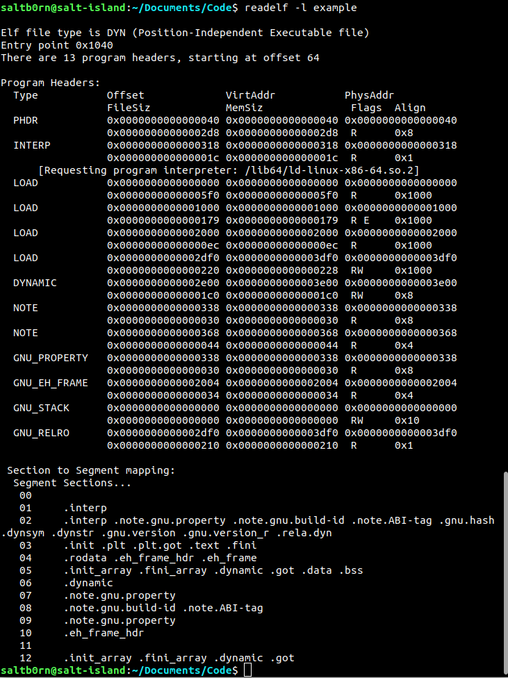
Figure 71: readelf -l example
(这里的表头有进行换行, 比如 Offset 和 FileSiz 分别是两个信息.)
可以看到除了程序头信息以外, 还有一段 Section to Segment mapping 的信息,
这段信息就是告诉我们 ELF 被加载入内存时, 哪些节(section)划分为哪些段;
目标文件本身不包含 Section to Segment mapping 的信息, 根据 readelf 的源代码可以知道 readelf 是通过节和段的文件偏移(file offset)和大小(size)来得出哪个节在哪个段里面.
不过我们还是要从字节读起, 从前面的 e_phoff 成员可以知道, 从文件的第 0x40 个字节开始就是程序头了, 刚好在 ELF 头的后面.
先给出程序头的结构定义:
typedef struct { Elf64_Word p_type; /* Segment type */ Elf64_Word p_flags; /* Segment flags */ Elf64_Off p_offset; /* Segment file offset */ Elf64_Addr p_vaddr;/* Segment virtual address */ Elf64_Addr p_paddr; /* Segment physical address */ Elf64_Xword p_filesz; /* Segment size in file */ Elf64_Xword p_memsz; /* Segment size in memory */ Elf64_Xword p_align; /* Segment alignment */ } Elf64_Phdr;
正如 ELF 头的 e_phentsize 的值 (0x38) 所示, 每个程序头的大小是 56 个字节, 这是由该结构体决定的.
限于篇幅, 这里只介绍第一个程序头, 剩下的程序头就由读者自行分析.
成员名:
p_type; 偏移范围: 0x40 - 0x43; 字节值: 0x06, 0x00, 0x00, 0x00声明段的类型, 各种类型的定义如下:
#define PT_NULL 0 /* Program header table entry unused */ #define PT_LOAD 1 /* Loadable program segment */ #define PT_DYNAMIC 2 /* Dynamic linking information */ #define PT_INTERP 3 /* Program interpreter */ #define PT_NOTE 4 /* Auxiliary information */ #define PT_SHLIB 5 /* Reserved */ #define PT_PHDR 6 /* Entry for header table itself */ #define PT_TLS 7 /* Thread-local storage segment */ #define PT_NUM 8 /* Number of defined types */ #define PT_LOOS 0x60000000 /* Start of OS-specific */ #define PT_GNU_EH_FRAME 0x6474e550 /* GCC .eh_frame_hdr segment */ #define PT_GNU_STACK 0x6474e551 /* Indicates stack executability */ #define PT_GNU_RELRO 0x6474e552 /* Read-only after relocation */ #define PT_GNU_PROPERTY 0x6474e553 /* GNU property */ #define PT_LOSUNW 0x6ffffffa #define PT_SUNWBSS 0x6ffffffa /* Sun Specific segment */ #define PT_SUNWSTACK 0x6ffffffb /* Stack segment */ #define PT_HISUNW 0x6fffffff #define PT_HIOS 0x6fffffff /* End of OS-specific */ #define PT_LOPROC 0x70000000 /* Start of processor-specific */ #define PT_HIPROC 0x7fffffff /* End of processor-specific */
我们例子的这个段类型是
PT_PHDR.我们再来翻译一下在文档上就有的几个类型吧:
segment type description PT_NULL该类段将不会被使用, 这种段的成员全都是未定义, 这种段会被忽略. PT_LOAD该类段会被加载到 p_vaddr成员指向的地址上.PT_DYNAMIC该类段储存了动态链接的信息. PT_INTERP该类段存放了解释器的信息, 包括路径和大小, 这里的解析器就是链接器(linker).
比如我们的例子程序example的程序头有INTERP段, 它的链接器就是 "/lib64/ld-linux-x86-64.so.2".PT_NOTE该类段存放了辅助信息的位置, 具体参考 NOTE的数据结构定义, 是Elf64_Nhdr(64位)和Elf32_Nhdr(32位).PT_SHLIB该类段目前处于保留状态, 未被定义. PT_PHDR该类段储存了程序头表自身在文件以及内存中的位置和大小信息. PT_LOPROC / PT_HIPROC在 [ PT_LOPROC, PT_HIPROC ]两个段之间储存了和处理器相关的数据.PT_GNU_STACK该类段是 GNU的拓展段,Linux内核使用这种段的p_flags成员来控制栈的状态.这里需要强调一点的是, 链接视图里面只有
PT_LOAD段会被加载到内存中, 而其它(必要的)段会被加载到PT_LOAD段的范围里.仔细观察的话你会发现所有
PT_LOAD段结合起来的范围是覆盖了所有其它段的.总的来说, 在链接视图里面
ELF文件有多少个PT_LOAD段, 那么在执行视图里面就有多少个段.成员名:
p_flags; 偏移范围: 0x44 - 0x47; 字节值: 0x04, 0x00, 0x00, 0x00段的掩码(bit mask), 标识段是否可写, 可读以及可执行等等.
#define PF_X (1 << 0) /* Segment is executable */ #define PF_W (1 << 1) /* Segment is writable */ #define PF_R (1 << 2) /* Segment is readable */ #define PF_MASKOS 0x0ff00000 /* OS-specific */ #define PF_MASKPROC 0xf0000000 /* Processor-specific */
PF_X表示该段可以执行,PF_W则是可写,PF-R为可读.通常
text段(text segment)是具备PF_X以及PF_R;data段则为PF_W以及PF_R.该例子是可写段.
成员名:
p_offset; 偏移范围: 0x48 - 0x4f; 字节值: 0x40, 0x00, 0x00, 0x00, 0x00, 0x00, 0x00, 0x00段第一个字节距离文件开始的偏移, 简称文件地址偏移.
该段的文件地址偏移是
0x40, 也就是 64 个字节.当程序头的
p_type是PT_PHDR时,p_offset的值和p_vaddr的值是一样的.成员名:
p_vaddr; 偏移范围: 0x50 - 0x57; 字节值: 0x40, 0x00, 0x00, 0x00, 0x00, 0x00, 0x00, 0x00段第一个字节的虚拟地址(vritual address), 所谓虚拟地址就是在程序被加载进内存时的地址, 之所以叫虚拟内存是因为它的值并不等于内存的物理地址.
该段的虚拟地址偏移为
0x40, 也就是 64 个字节.成员名:
p_paddr; 偏移范围: 0x58 - 0x5f; 字节值: 0x40, 0x00, 0x00, 0x00, 0x00, 0x00, 0x00, 0x00段第一字节的内存的物理地址. 但该成员并非总代表内存的物理地址, 并且和
p_vaddr相同.成员名:
p_filesz; 偏移范围: 0x60 - 0x67; 字节值: 0xd8, 0x02, 0x00, 0x00, 0x00, 0x00, 0x00, 0x00段在文件映像(file image)10.1中的所占的大小, 所谓的文件映像也就是链接视图, 也就是在硬盘上的大小.
该段的文件映像大小是
0x2d8, 也就是 728 个字节.成员名:
p_memsz; 偏移范围: 0x68 - 0x6f; 字节值: 0xd8, 0x02, 0x00, 0x00, 0x00, 0x00, 0x00, 0x00段在内存映像(memory image)10.1中所占的大小, 内存映像就是执行视图, 也就是被加载进内存用于运行时的大小.
p_memsz通常是大于等于p_filesz的, 这是因为可加载段可能会包含一些.bss节(section), 也就是包含一些未初始化的数据.该段的内存映像大小是
0x02d8, 同样也是 728 个字节.成员名:
p_align; 偏移范围: 0x70 - 0x77; 字节值: 0x08, 0x00, 0x00, 0x00, 0x00, 0x00, 0x00, 0x00段的数据对齐 4.
该段的在文件映像以及内存映像中的数据对齐大小为 8 个字节, 也就是 \(p\_filesz\ \ rem\ \ 8 = p\_memsz\ \ rem\ \ 8 = 0\).
10.4. ELF 节头 (Section header)
与程序头类似, 节头都是其对应节的描述, 包括节的名字, 类型, 大小等等.
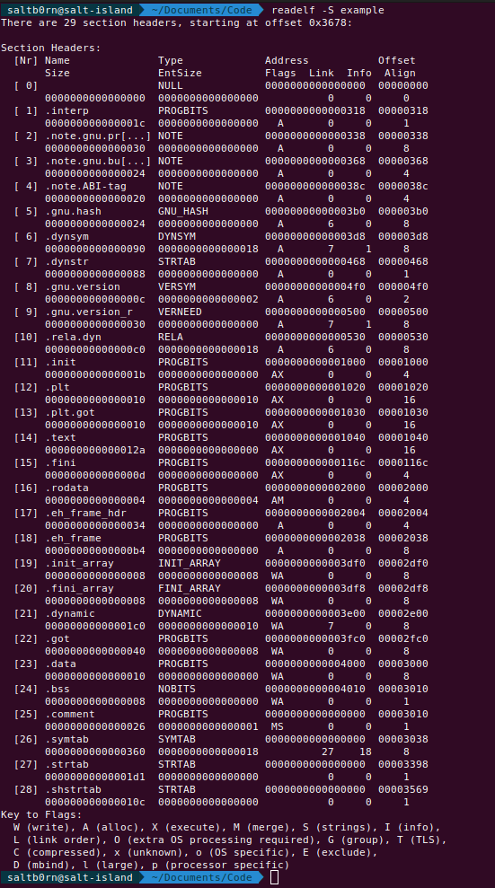
Figure 72: readelf -S example
从截图里面可以看到第一个节的所有位都是 0, 因此等会会用第 2 节作为讲解例子.
在 ELF 头里面 e_shoff 成员看到第一个节头的偏移是 0x34b8, 也就是说第二个节头的偏移是 \(e\_shoff + e\_shentsize = 0x34b8 + 0x40 = 0x34f8\).

Figure 73: the second section header
先给出节头的结构体定义:
typedef struct { Elf64_Word sh_name; /* Section name (string tbl index) */ Elf64_Word sh_type; /* Section type */ Elf64_Xword sh_flags; /* Section flags */ Elf64_Addr sh_addr; /* Section virtual addr at execution */ Elf64_Off sh_offset; /* Section file offset */ Elf64_Xword sh_size; /* Section size in bytes */ Elf64_Word sh_link; /* Link to another section */ Elf64_Word sh_info; /* Additional section information */ Elf64_Xword sh_addralign; /* Section alignment */ Elf64_Xword sh_entsize; /* Entry size if section holds table */ } Elf64_Shdr;
成员名:
sh_name; 偏移范围: 0x34f8 - 0x34fb; 字节值: 0x1b, 0x00, 0x00, 0x00该成员的值是"节头字符串表"(section header string table)某个数据的索引, 该表储存于名为
.shstrtab的节上..shstrtab储存了各个节的名字字符串, 每个名字有着各自的索引.使用
readelf -p .shstrtab example可以看到索引0x1b上的字符串为.interp.也就是说该节头所描述的节的名字为
.interp.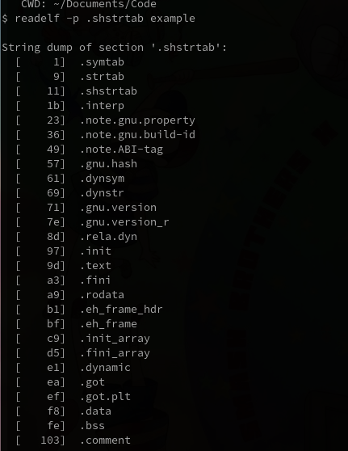
Figure 74: readelf -p .shstrtab example
成员名:
sh_type; 偏移范围: 0x34fc - 0x34ff; 字节值: 0x01, 0x00, 0x00, 0x00该成员表示节的类型, 这个成员的值可能是以下中的任意一个:
/* Legal values for sh_type (section type). */ #define SHT_NULL 0 /* Section header table entry unused */ #define SHT_PROGBITS 1 /* Program data */ #define SHT_SYMTAB 2 /* Symbol table */ #define SHT_STRTAB 3 /* String table */ #define SHT_RELA 4 /* Relocation entries with addends */ #define SHT_HASH 5 /* Symbol hash table */ #define SHT_DYNAMIC 6 /* Dynamic linking information */ #define SHT_NOTE 7 /* Notes */ #define SHT_NOBITS 8 /* Program space with no data (bss) */ #define SHT_REL 9 /* Relocation entries, no addends */ #define SHT_SHLIB 10 /* Reserved */ #define SHT_DYNSYM 11 /* Dynamic linker symbol table */ #define SHT_INIT_ARRAY 14 /* Array of constructors */ #define SHT_FINI_ARRAY 15 /* Array of destructors */ #define SHT_PREINIT_ARRAY 16 /* Array of pre-constructors */ #define SHT_GROUP 17 /* Section group */ #define SHT_SYMTAB_SHNDX 18 /* Extended section indices */ #define SHT_NUM 19 /* Number of defined types. */ #define SHT_LOOS 0x60000000 /* Start OS-specific. */ #define SHT_GNU_ATTRIBUTES 0x6ffffff5 /* Object attributes. */ #define SHT_GNU_HASH 0x6ffffff6 /* GNU-style hash table. */ #define SHT_GNU_LIBLIST 0x6ffffff7 /* Prelink library list */ #define SHT_CHECKSUM 0x6ffffff8 /* Checksum for DSO content. */ #define SHT_LOSUNW 0x6ffffffa /* Sun-specific low bound. */ #define SHT_SUNW_move 0x6ffffffa #define SHT_SUNW_COMDAT 0x6ffffffb #define SHT_SUNW_syminfo 0x6ffffffc #define SHT_GNU_verdef 0x6ffffffd /* Version definition section. */ #define SHT_GNU_verneed 0x6ffffffe /* Version needs section. */ #define SHT_GNU_versym 0x6fffffff /* Version symbol table. */ #define SHT_HISUNW 0x6fffffff /* Sun-specific high bound. */ #define SHT_HIOS 0x6fffffff /* End OS-specific type */ #define SHT_LOPROC 0x70000000 /* Start of processor-specific */ #define SHT_HIPROC 0x7fffffff /* End of processor-specific */ #define SHT_LOUSER 0x80000000 /* Start of application-specific */ #define SHT_HIUSER 0x8fffffff /* End of application-specific */
这里是它们的详细说明, 建议过一遍, 不理解不要紧, 后面会慢慢懂的.
section type description SHT_NULL该类节将不会被使用. SHT_PROGBITS该类节拥有程序相关信息, 信息的格式和含义完全取决于程序. SHT_SYMTAB该类节拥有一张符号表(symbol table), 一般来说这些符号用于链接编辑(link editing), 也有 可能 用于动态链接(dynamic linking).
作为一张完整的符号表, 还有可能包含各种与动态链接无关的符号.
除了SHT_SYMTAB类的节外, 还有SHT_DYNSYM类的节含有用于动态链接的符号.SHT_STRTAB该类节是一个字符串表(string table), 每一项都代表着某些数据的名字. 可以有很多个这种类型的节, 每个该类型节的用途是不一样的, 比如有 SHT_STRTAB节的项表示符号名, 有的表示节名,SHT_REL该类节拥有若干个可重定位项(relocation entries).
可重定位条目有ElfN_Rel以及ElfN_Rela两种大类型(数据结构), 这里的N代指32和64.
该类节上的条目类型是ElfN_Rel. 一个目标文件能有多个可重定位节.SHT_RELA该类节是 SHT_REL拓展, 每一项都是ElfN_Rel的拓展版本ElfN_Rela.SHT_HASH该类节是一个符号哈希表(symbol hash table).
一个参与动态链接的目标文件必须有一个符号哈希表, 并且只能有一个.SHT_DYNAMIC该类节拥有动态链接的信息, 这种节叫做动态节(dynamic section), 一个目标文件只能最多有一个动态节. SHT_NOTE该类节拥有某些辅助信息, 参考 Elf32_Nhdr以及Elf64_Nhdr数据结构.SHT_NOBITS该类节在文件映像中不占任何空间, 这种节在被加载到内存时会被组合成 .bss段.SHT_SHLIB该类节只是被规范保留下来而已, 还未没有被定义. SHT_DYNSYM该类节是一个极其简单的动态链接符号集合(a minimal set of dynamic linking symbols). SHT_LOPROC/SHT_HIPROC在 [SHT_LOPROC, SHT_HIPROC]中间包含了和处理器相关的数据.SHT_HIUSER/SHT_LOUSER在 [SHT_LOUSER, SHT_HIUSER]中的节类型能够被程序使用, 只要和当前以及未来定义的节类型不冲突就可以.想要真正理解它们的含义还是得结合实际的节描述:
该节头所描述的节的类型是
SHT_PROGBITS.成员名:
sh_flags; 偏移范围: 0x3500 - 0x3507; 字节值: 0x02, 0x00, 0x00, 0x00, 0x00, 0x00, 0x00, 0x00/* Legal values for sh_flags (section flags). */ #define SHF_WRITE (1 << 0) /* Writable */ #define SHF_ALLOC (1 << 1) /* Occupies memory during execution */ #define SHF_EXECINSTR (1 << 2) /* Executable */ #define SHF_MERGE (1 << 4) /* Might be merged */ #define SHF_STRINGS (1 << 5) /* Contains nul-terminated strings */ #define SHF_INFO_LINK (1 << 6) /* `sh_info' contains SHT index */ #define SHF_LINK_ORDER (1 << 7) /* Preserve order after combining */ #define SHF_OS_NONCONFORMING (1 << 8) /* Non-standard OS specific handling required */ #define SHF_GROUP (1 << 9) /* Section is member of a group. */ #define SHF_TLS (1 << 10) /* Section hold thread-local data. */ #define SHF_COMPRESSED (1 << 11) /* Section with compressed data. */ #define SHF_MASKOS 0x0ff00000 /* OS-specific. */ #define SHF_MASKPROC 0xf0000000 /* Processor-specific */ #define SHF_GNU_RETAIN (1 << 21) /* Not to be GCed by linker. */ #define SHF_ORDERED (1 << 30) /* Special ordering requirement (Solaris). */ #define SHF_EXCLUDE (1U << 31) /* Section is excluded unless referenced or allocated (Solaris).*/
成员名:
sh_addr; 偏移范围: 0x3508 - 0x350f; 字节值: 0x18, 0x03, 0x00, 0x00, 0x00, 0x00, 0x00, 0x00当节被加载到一个程序的内存映中时, 该成员的值就是节的首地址(虚拟地址); 否者该成员的值为 0.
该节头描述的节的首地址是
0x318.成员名:
sh_offset; 偏移范围: 0x3510 - 0x3517; 字节值: 0x18, 0x03, 0x00, 0x00, 0x00, 0x00, 0x00, 0x00该成员的值是从目标文件开头到节首地址的偏移.
由于
SHT_NOBITS节不占文件大小, 所以这种节只是定位到文件的某个概念位置上.该节头所描述的节的文件偏移是
0x318.成员名:
sh_size; 偏移范围: 0x3518 - 0x351f; 字节值: 0x1c, 0x00, 0x00, 0x00, 0x00, 0x00, 0x00, 0x00该成员的值是节的字节大小.
除非节的类型是
SHT_NOBITS, 否则节在文件中占据sh_size个字节.不过
SHT_NOBITS节的该成员的值可以为非 0, 但这种节并不会正真地在文件中占有空间.该节头所描述的节的大小是
0x1c, 也就是 28 个字节.成员名:
sh_link; 偏移范围: 0x3520 - 0x3523; 字节值: 0x02, 0x00, 0x00, 0x00该成员的值是某种表(字符串表/符号表)在节头表中的索引(a section header index of some table),
这个值是用来告诉链接器该节头所描述的节要和什么表进行链接, 解释方式取决于节的类型.
section type/sh_typesh_linkSHT_DYNAMIC字符串表的节头索引 SHT_HASH符号表的节头索引 SHT_REL/SHT_RELA符号表的节头索引 SHT_SYMTAB/SHT_DYNSYM字符串表的节头索引 SHT_GROUP符号表的节头索引 SHT_SUNW_move符号表的节头索引 SHT_SUNW_COMDAT0 SHT_SUMW_syminfo符号表的节头索引 SHT_SUMW_verdef字符串表的节头索引 SHT_SUMW_verneed字符串表的节头索引 SHT_SUMW_versym符号表的节头索引
成员名:
sh_info; 偏移范围: 0x3524 - 0x3527; 字节值: 0x00, 0x00, 0x00, 0x00该成员持有额外信息, 解释方式取决于节的类型.
成员名:
sh_addralign; 偏移范围: 0x3528 - 0x352f; 字节值: 0x01, 0x00, 0x00, 0x00, 0x00, 0x00, 0x00, 0x00有些节有地址对齐约束. 如果节包含一个双字(
doubleword), 那么系统必须保证整个节双字对齐.成员名:
sh_entsize; 偏移范围: 0x3530 - 0x3537; 字节值: 0x00, 0x00, 0x00, 0x00, 0x00, 0x00, 0x00, 0x00有些节是一个表项目大小固定的表(a table of fixed-sized entries), 比如是符号表. 对于这样的节, 该成员的值就是表项的字节大小.
如果节头所描述的节不是一张这样的表, 那么该成员的值就为 0.
因为该节头所描述的节是
PT_PHDR类型, 不是一张表, 因此该成员值为 0.
11. 链接
这部分内容摘录自 CSAPP 的链接.
这里先声明两点:
阅读这章前请先阅读 可执行二进制文件格式 - ELF;
我们这里讨论的是情况都是基于使用 GCC 这个编译器驱动器(compiler drivers).
所谓的编译器驱动器就是调用语言预处理器, 编译器, 汇编器以及链接器的软件, 实际上我们也偶尔会把这种工具直接叫做编译器, 比如 GCC.
目前我们对链接的了解只处于把若干个目标文件合在一起而已,
目标文件的符号(symbol)处理过程, 以及如何处理 PIC(Position-Independent Code).
在构建一个可执行文件的过程中, 链接器(linker)需要完成两项重要任务:
第一步 符号解析 (Symbol Resolution)
目标文件定义和引用符号, 解析就是把符号引用(references)和它对应的符号定义关联起来.
第二步 重定位 (Relocation)
编译器和汇编器在地址 0 上开始生成代码节和数据节(code and data sections).
在链接时, 链接器会为每个符号定义(symbol definition)分配一个内存地址, 然后修改所有的符号引用(reference to symbol)指向到符号定义的内存地址上, 这就是链接器对节进行重定位(relocates the sections)的过程.
链接器只是一个执行者, 它只是根据汇编器生成指令来完成重定位的, 这些指令叫做重定位条目(relocation entries).
11.1. 目标文件
目标文件分 3 类:
| 分类 | 描述 |
|---|---|
| 可重定位目标文件(relocatable object file) | 可以在编译时(compile time)与其它可重定位目标文件组合成一个可执行文件的目标文件 |
| 可执行目标文件(executable object file) | 可以把其数据复制到内存并执行的目标文件 |
| 共享目标文件(shared object file) | 是可重定位目标文件的一种, 其数据可以在加载时(load time)或运行时(run time)被复制进内存里面并进行动态链接(linked dynamically) |
11.2. 符号 (Symbol)
正如 GAS 的符号那样, 目标文件的符号也是用作标识的.
目标文件的符号分全局符号(global symbols)和局部符号(local symbols)两种, 这是按照作用域来划分的.
一个目标文件的全局符号可以被其它目标文件引用, 而局部符号就只能在它的目标文件里面被引用.
在 NASM 里面只有用 GLOBAL 指令声明的标签才会被生成为目标文件的全局符号, GAS 的符号则是得用 .globl 指令声明才能被生成为全局符号.
C 语言则稍微不同, 只有非 static 全局变量以及非 static 函数才是对应的目标文件的全局符号,
我们都知道函数的局部变量是由栈维护的, 所以函数的局部变量是没有符号的, 但 函数内部的 static 局部变量是例外, 它们是目标文件的局部符号.
符号的 64 位结构体定义如下:
typedef struct { Elf64_Word st_name; /* Symbol name (string tbl index) */ unsigned char st_info; /* Symbol type and binding */ unsigned char st_other; /* Symbol visibility */ Elf64_Section st_shndx; /* Section index */ Elf64_Addr st_value; /* Symbol value */ Elf64_Xword st_size; /* Symbol size */ } Elf64_Sym;
| 成员 | 描述 |
|---|---|
st_name |
符号名, 不过成员的值是符号名在字符串表中的索引 |
st_info |
从 7-4 位表示符号绑定(bind), 3-0 位表示符号类型(type).(具体查看 ELF64_ST_BIND 和 ELF64_ST_TYPE 的宏定义.) 符号类型的有以下几种, STT_NOTYPE: 未定义; STT_OBJECT: 数据对象; STT_FUNC: 函数; STT_SECTION: 节; STT_FILE: 目标文件的源文件; STT_LOPROC / STT_HIPROC: 在 [ STT_LOPROC, STT_HIPROC ] 范围内的值是跟处理器相关的; 符号绑定有以下几种, STB_WEAK: 弱绑定; STB_LOCAL: 局部绑定; STB_GLOBAL: 全局绑定; STB_LOPROC / STB_HIPROC: 在 [ STB_LOPROC, STB_HIPROC ] 范围内的值是和处理器相关的; |
st_other |
控制符号的可见性. 原本的 C 里面只要使用 static 关键字就能把符号限定为当前目标文件可见, 否则符号可以被所有其他目标文件可访问. 在一个含有多个文件的共享库里面, 如果想让符号只能让共享库里某几个文件可见, 库外不可见, 那么就得使用特定的编译器/链接器设置符号的可见性. GCC 就支持这特性. 该成员的值可能如下, STV_DEFAULT: 按照默认规则暴露符号; STV_HIDDEN: 目标文件里面的符号不会被暴露出来; STV_PROTECTED: 受保护的符号, 这种符号在当前可执行文件或共享文件外可见, 但是这个符号的引用不能被覆盖(overridden). 举个例子, 如果一个共享库里面的目标文件引用同一个库里的其它目标文件的受保护符号, 哪怕可执行文件定义了一个同名的符号, 目标文件引用的还是这个受保护符号, 不会受到可执行文件的同名符号干扰. STV_INTERNAL: 符号不能在可执行文件或者共享文件外可见; 内容参考: APPLE 的 Controlling Symbol Visibility IBM 的 Part1 - Introduction to symbol visibility |
st_shndx |
表示符号和哪个节有关系. 该成员的值是节的索引. |
st_value |
符号的内存地址. |
st_size |
符号的大小, 如果符号没有大小或者大小未知, 那么该成员就为 0. |
这里需要对 st_info 成员进行一番说明, 符号类型还是很好理解的, 关键是符号绑定.
符号绑定实际上就是围绕符号的作用域以及初始化情况来划分的.
从作用域角度来看, 局部符号属于 STB_LOCAL, 全局符号就属于 STB_GLOBAL;
而初始化角度则只是针对全局符号来说的, 如果全局符号没有被初始化, 那么它就属于 STB_WEAK, 中文叫弱符号(weak symbol),
而 STB_GLOBAL 的符号就是强符号(strong symbol).
对于前面 example 使用 readelf -s example 命令可以查看到它的符号表如下,
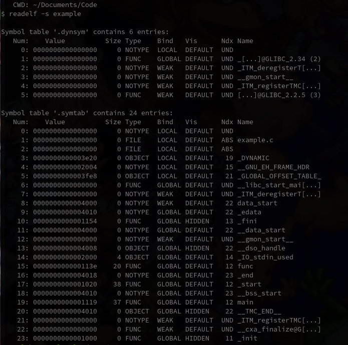
Figure 75: readelf -s example
11.3. 符号解析
符号解析的一个重点问题是: 链接器是如何解决名字重复的符号呢?
其实挺简单的, 我们知道符号分全局和局部, 局部符号的定义永远都是在自身所处的目标文件内可见, 哪怕各个模块都有一个叫做 age 的局部符号, 目标文件之间也是不可能发生局部符号冲突的.
而全局符号则是复杂一点, 这是因为各个目标文件的全局符号都是彼此可见的, 这意味目标文件 A 和目标文件 B 可能都会有一个相同名字的全局符号.
当然这种情况是允许的, 链接器会遵守以下规则来进行解析:
Rule 1: 存在多个同名强符号, 链接器会报错.Rule 2: 存在一个强符号和多个弱符号, 并且它们都有这相同名字, 链接器会选择强符号.Rule 3: 存在多个同名弱符号, 链接器任意选择一个.
11.4. 重定位
对节和符号定义进行重定位 (Relocating sections and symbol definitions)
链接器先把所有输入目标文件的同类节分别聚合在一起成为一个同类型的新节.
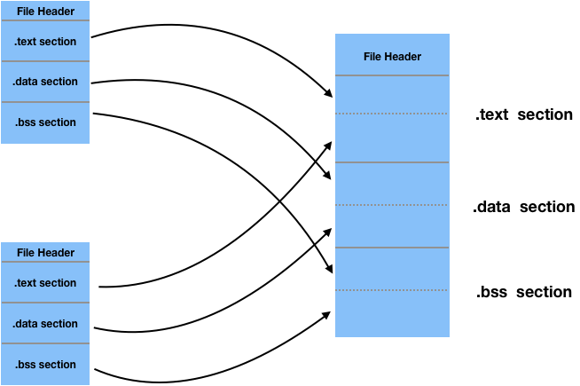
Figure 76: 多个目标文件的同类节聚合
然后链接器给新节/输入文件的节以及符号赋予运行时内存地址(run-time memory address),
这样一来, 程序中每条指令和符号都有唯一的内存地址了.
对节里面的符号进行重定位 (Relocating symbol references within sections)
链接器修改代码节和数据节(code and data sections)里面的符号引用指向到正确的运行时内存地址上.
链接器需要依赖可重定位目标文件里一种叫做可重定位条目(relocation entries)的数据结构来完成.
重定位条目的定义如下:
typedef struct { Elf64_Addr r_offset; /* Address */ Elf64_Xword r_info; /* Relocation type and symbol index */ Elf64_Sxword r_addend; /* Addend */ } Elf64_Rela;
| 成员 | 描述 |
|---|---|
r_offset |
执行重定位的位置(location at which to apply the relocation action). 对于可重定位文件来说, 该成员的值就是 应执行可重定位对象 到 其所在节的起始位置(the beginning of section of the section) 的偏移. 对于可执行文件来说, 该成员的值是 应执行可重定位对象 的虚拟地址(virtual address). |
r_info |
从 63-32 位表示可重定向的符号, 这个值是符号在符号表上的索引. (具体查看 ELF64_R_SYM 和 ELF64_R_TYPE 的宏定义). 从 31-0 位表示可重定向的类型, 类型有很多种, 下面只讨论最常见的两种: R_X86_64_32 和 R_X86_64_PC32. R_X86_64_32 表示把引用重定位到一个 32 位的绝对地址上, 该地址是一个有效地址. R_X86_64_PC32 表示把引用重定位到一个 32 位的 PC 相对地址(PC-relative address)上. 所谓的 PC 相对地址就是相对于程序计数器的当前运行时值的偏移, 由当前 PC 的值加上该偏移就能得出一个有效地址. 也可以简单地把 PC 相对地址理解为两个内存地址之间的差. |
r_addend |
用于计算出可重定位条目上储存的值. |
下面这是链接器的重定位算法的伪代码, 跟 C 语言比较类似.
总体上是一个双重循环, 第一行表示在遍历每个节, 第二行表示在遍历当前节 s 的每个可重定项 r.
节 s 就是一个可重定项数组, 每个元素 r 就是一个 Elf64_Rela 结构体变量.
s 就和 C 语言的数组一样表示数组首元素的位置.
这个算法假设链接器已经计算好了每个节和符号的运行时地址,
其中 ADDR 是用来获取对象的运行地址的, 比如 ADDR(s) 表示节 s 的运行时地址, ADDR(r) 表示可重定位项 r 的运行时地址.
r.type 表示可重定位项的类型, r.symbol 表示可重定位的符号.
指针 refptr 指向可重定位项 r 的地址, 在计算出可重定位项应该指向的地址后, 链接器就把这个结果储存在 refptr 指向的地址上.
foreach section s { foreach relocation entry r { /* s is the array of the 4-byte reference that needs to be relocated */ /* s also stands for the location to the first 4-byte reference */ refptr = s + r.r_offset; /* ptr to reference to be relocated */ /* Relocate a PC-relative reference */ if (r.type == R_X86_64_PC32) { refaddr = ADDR(s) + r.r_offset; /* ref’s run-time address */ *refptr = (unsigned) (ADDR(r.symbol) + r.r_addend - refaddr); } /* Relocate an absolute reference */ if (r.type == R_X86_64_32) { *refptr = (unsigned) (ADDR(r.symbol) + r.r_addend); } } }
11.5. 生成可执行文件
有两种方式生成可执行文件: 静态链接(static linking)和动态链接(dynamic linking).
Linux 下的链接器实际上是分为静态链接器和动态链接器的, 在进行静态链接时就调用静态链接器, 在进行动态链接时调用动态链接器.
但在下文遇到"链接器"这个词时, 请自行根据上下文来判断它是哪种链接器.
后面的内容都会以下面这个例子进行讲解.
// addvec.c int addcnt = 0; void addvec(int *x, int *y, int *z, int n) { int i; addcnt++; for (i = 0; i < n; i++) z[i] = x[i] + y[i]; }
// multvec.c int multcnt = 0; void multvec(int *x, int *y, int *z, int n) { int i; multcnt++; for (i = 0; i < n; i++) z[i] = x[i] * y[i]; }
// vector.h #ifndef VECTOR_H #define VECTOR_H void addvec(int*, int*, int*, int); void multvec(int*, int*, int*, int); #endif
// main2.c #include <stdio.h> #include "vector.h" int x[2] = {1, 2}; int y[2] = {3, 4}; int z[2]; int main() { addvec(x, y, z, 2); printf("z = [%d %d]\n", z[0], z[1]); return 0; }
11.5.1. 静态链接
所有编译系统都提供把相关目标模块文件打包成一个文件的机制, 得到这个文件叫做静态库(static library), 可以作为链接器的输入文件.
在 Linux 下, 静态库是以一种叫做 archive 的文件格式进行储存的, 可以简单地认为它是一个目标文件的压缩包.
相比于把相关目标模块文件再合并成一个目标文件, archive 文件能够让链接器在链接时只复制被程序引用到的目标模块文件,
从而减去程序用不上的功能, 减少程序发布体积, 以及避免运行时造成的内存浪费.
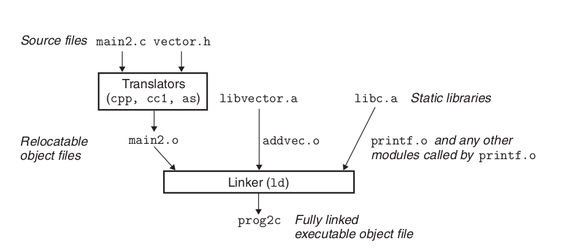
Figure 77: 静态链接
比如这个例子中的静态库 libvector.a 就是这么创建的:
gcc -c addvec.c multvec.c ar rcs libvector.a addvec.o multvec.o
可由于 main2.c 只引用到了 addvec.o 的函数, 因此链接器只把 libvector.a 中的 addvec.o 复制到可执行文件中了.
此外, main2.c 也使用了 libc.a 中 printf.o 的 printf 函数, 所以也把 printf.o 复制到可执行文件中.
链接器会根据静态库来解析外部引用.
在符号解析阶段中, 链接器会从左往右对编译器命令中出现的可重定位目标文件, .c 文件(会被自动编译成对应的目标文件 .o)以及 archive 进行扫描,
链接器在扫描过程中会维护三个集合:
集合 E 包含了可执行文件所需的所有可重定位目标文件;
集合 U 包含了未解析的符号(被引用但未被定义);
集合 D 包含了之前的输入文件的所有已定义的符号;
这三个集合在最开始的时候都是空的.
扫描的算法如下:
- 如果输入文件
f是一个目标文件, 那么链接器会把f添加到集合E中, 并且更新D和U来分别反映f的符号定义和引用. 如果输入文件
f是一个archive, 链接器会尝试让未定义符号集合U和f中成员所定义的符号进行匹配,如果
f的成员m定义了符号可以解析得了U里面的符号, 那么就把m添加到E中, 并且更新D和U来反映m的符号定义和引用.这个过程会遍历
f中的模块文件直到U和D不再发生改变为止. 没有被包含在E中的模块m将会被忽略.在结束对所有输入文件的扫描时, 如果
U是还是非空集合, 那么链接器会输出错误并且中止链接.否则把
E中的所有文件合并成一个可执行文件.
但是这套扫描算法是有缺陷的, 因为命令行中出现的库和目标文件的顺序会影响符号的解析.
如果一个符号的定义出现在对它的引用之前, 那么该符号无法被解析了.
因此, 在命令行中的文件顺序需要保证一点: 引用了符号 s 的文件 A 位于定义了 s 的文件 B 之前.
11.5.2. 动态链接
静态链接有一些缺点:
- 如果要更新程序的某一部分的功能, 那么就需要重新编译和链接生成整个程序;
- 基本上所有程序都会引用标准
I/O函数printf以及scanf, 多个程序程序的运行会导致内存里面出现多份重复的printf以及scanf, 导致严重的资源浪费.
而动态链接可以把静态链接的缺点解决掉, 动态库(dynamic libraries)是一种对标静态库的东西,
它可以在运行时(run time)/加载时(load time)被加载到任意的内存地址上并跟程序进行链接.
这个过程叫做动态链接(dynamic linking), 由程序调用的动态链接器(dynamic linker)执行完成.
动态库也叫做共享库(shared libraries), 共享库也叫共享目标(shared objects), 这些库在 Linux 上是以 .so 作为后缀.
共享库的"共享"是体现在两个方面:
首先, 在任意文件系统上只能有唯一一个 .so 文件来对应特别的库, .so 文件的代码以及数据(code and data)在所有引用了该库的可执行目标文件之间是共享的.
其次, 在内存中, 一个 .so 文件的 .text 节的副本在不同进程之间是共享的, 这解决了静态链接的第二个缺点.
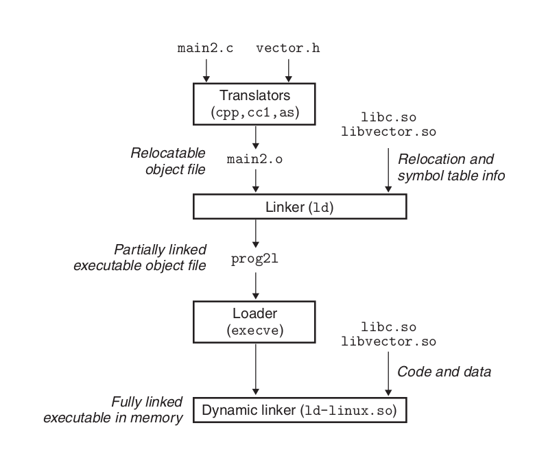
Figure 78: 动态链接
这个例子中的可执行文件 prog21 能够在运行时跟 libvector.so 进行链接.
基本思路就是在生成可执行文件时静态地执行部分链接(do some of the linking statically), 在加载可执行文件时动态地完成链接过程.
在这个过程中 libvector.so 的代码节和数据节并没有被复制到 prog21 中, 链接器只是复制了一些重定位信息和符号表信息,
在加载程序时, 链接器再根据这些信息去解析出对 libvector.so 中的代码以及数据的引用.
在 loader 加载并且运行 prog21 时会加载其中已链接的部分, 然后 loader 注意到 prog21 有 .interp 节, loader 加载并且运行动态链接器(dynamic loader);
动态链接器再执行重定位来完成链接任务:
- 重定位
libc.so中的代码以及数据到某内存段上; - 重定位
libvector.so中的代码以及数据到另外一个内存段上; - 重定位
prog21中所有对libc.so和libvector.so符号定义的引用;
最后动态链接器把控制权交给程序. 从这个时候开始共享库的位置就固定下来了, 并且不会在程序运行的时候发生改变.
11.6. 地址无关代码 (Position-Independent Code, PIC)
共享库的关键目的是允许多个运行进程共享内存上同一个库的代码来节省珍贵的内存资源.
所以, 进程之间是如何共享同一份程序的副本呢?
其中一个方法就是给每个共享库分配一块 事先分配好 的内存空间, 然后 loader 就能从固定地址加载对应的共享库了.
但是这样会出现一些严重的问题:
- 低效的内存使用, 在进程不使用库的时候, 库内存空间还是被分配.
- 难以管理, 在分配内存时需要保证内存空间之间不会发生重叠; 每次修改共享库时都要保证能被已分配的内容空间容纳, 否则就需要重新找一块新的内存空间, 随着系统上的动态库版本和数量的增加, 内存上就容易出现很多不可用的内存碎片.
- 每个的操作系统给动态库分配内存的方式是不同的, 这造成了更多的管理难题.
操作系统需要一种方法来编译共享库的代码段, 在无需链接器修改调用模块(calling module, 也就是引用外部符号的模块)的代码段的情况下, 把它们加载到内存的任何地方.
在这种方法下, 无数个进程可以共享一份代码段的副本, 当然每个进程有属于自己的读写数据段副本(own copy of the read/write data segment).
这种无需重定位的可加载代码叫做位置无关代码(Position-Independent Code, PIC),
在 GNU 编译系统中, 用户需要给 GCC 提供 -fpic 选项来编译生成共享库.
在 x86-64 系统中, 一个可执行目标模块(same executable object module, 共享库也是其中一种)内部之间的符号引用是不需要处理成 PIC 的,
这些只需使用 PC 相对地址来编译这些引用, 在生成目标文件时对它们进行重定位;
而模块内对外部模块的引用就需要特别处理.
11.6.1. PIC 数据引用 (PIC Data References)
编译器基于以下原理为数据生成 PIC 引用:
不管在内存何处加载目标模块(包括共享目标模块, 原因在这), 数据段和代码段之间的距离是固定的;
因此, 在一个运行时里面, 代码段的指令和数据段的数据两者之间的距离是也固定的, 跟两者的绝对内存地址无关(independent of the absolute memory locations of the code and data segments).
为此, 在数据段的起始位置生成一个全局偏移表(global offset table, GOT), 每个目标模块文件都有自己 GOT.
GOT 每项的大小是 8 字节, 每项都是被目标模块文件所引用的全局数据对象(程序以及全局变量)的地址.
编译器还同时会为 GOT 的每项生成一份重定向记录(relocation record), 在加载时根据这份记录对 GOT 的每一项进行重定位, 把计算得到的地址写入到对应的 GOT 表项中, 最终 GOT 每项都包含了对象的绝对地址.

Figure 79: 使用 GOT 引用一个全局变量
(图中的 &addcnt 使用了 C 语言的语法, 获取 addcnt 的地址. 同样 *GOT[3] 为访问 GOT[3] 位置上的内容.)
比如说 libvector.so 中的 GOT 中的 GOT[3] 到 add1 指令的距离在运行时内固定不变的, 这里为 0x2008b9 个字节, 这个距离可以作为 GOT[3] 相对于 add1 上一条指令位置的 PC 相对地址的偏移.
由于 addcnt 是定义在 libvector.so 里面的, 在编译器生成共享库模块时, 根据数据 PIC 引用的生成原理来给 addcnt 生成一个 PC 相对地址并且添加一个可重定位项, 让链接器解析它, 整个过程不需要 GOT;
然而, 如果 addcnt 是定义在其它模块上, 那么通过 GOT 进行间接访问就是有必要的.
这个例子则是选择了最通用的解决方案, 为所有引用使用 GOT.
11.6.2. PIC 函数调用 (PIC Function Calls)
在引用共享库的数据时, 每个程序都有属于自己的共享库的数据段的副本, 并且数据段到代码段的距离是运行时固定,
因此使用 GOT 解析出数据引用不是一件麻烦事, 但对于函数调用的解析就不是一件容易的事情.
在程序调用共享库的函数时, 编译器是无法预测到函数的运行时地址的, 因为在运行时内, 共享模块可以加载到任何地址上.
正常情况下编译器可以为引用产生重定位记录, 在加载程序时, 动态链接器根据这份记录解析引用.
然而, 这种方法需要链接器修改调用模块的代码段, 这并不符合 PIC 的定义.
GNU 编译系统使用了一项名为 延迟绑定 (lazy binding) 来解决这个问题, 将函数地址的绑定推迟到第一次调用该函数时.
使用延迟绑定的动机是对于像 libc.so 这种的共享库导出成千上百个函数中, 通常一个程序只使用其中一小部分,
在调用的时候再进行绑定可以避免大量不必要的重定位, 从而节省资源.
这样函数在第一次调用时虽然有不少开销, 但是之后的每次调用只需要花费一个指令和一个内存地址来进行一次间接定位.
延迟绑定是基于两个数据结构之间的交互实现的, 其中一个数据结构是 GOT, 另外一个是过程链接表(procedure linkage table, PLT).
如果一个模块调用了共享库定义的函数, 那么这个模块就有他自己的 GOT 以及 PLT.
GOT 位于数据段的起始位置, 类似地, PLT 位于代码段的起始位置, 两者合作解析出函数的运行时地址.

Figure 80: 使用 PLT 和 GOT 调用外部函数, 图(a) 第一次调用 addvec, 图(b) 后续调用 addvec
在简介这个例子前, 先了解一下 PLT 和 GOT 上面的内容:
PLT 是一个数组, 每个条目都是 16 个字节大小的字节码, 每一个都是用于跳转的过程(procedure).
PLT[0] 是一个过程, 它是用来跳转到动态链接器的入口的, 换句话就是调用动态链接器.
PLT[1] 调用系统启动函数(__libc_start_main)用来初始化执行环境, 调用 main 函数并且处理返回值.
PLT[2] 开始就是调用用户代码了, 比如 PLT[2] 和 PLT[3] 分别调用 addvec 和 printf.
GOT 和 PLT 合作时, GOT[0] 和 GOT[1] 包含了动态链接器解析函数地址时所需要的信息, GOT[2] 就是动态链接器的入口;
之后的一个 GOT 项就对应一个被调用的函数, 用于在运行时解析其地址, 每个条目都有一个对应的 PLT 项, 因此每个 PLT 项目也对应一个共享库函数调用.
比如 GOT[4] 和 PLT[2] 对应函数 addvec 的调用.
在开始的时候, 这些对应外部函数调用的 GOT 项是指向其对应 PLT 项中第 2 条指令的地址.
比如 GOT[4] 储存的 0x4005c6 就是 PLT[2] 的第 2 条指令 pushq $0x1 的地址.
接下来是两者如何合作解析出外部函数的地址, 以 addvec 的解析为例:
首次调用(a)
- 跳转到
addvec调用对应的PLT项(PLT[2])的地址0x4005c0上. - 跳转到
addvec调用对应的GOT项(GOT[4])所储存的地址0x4005c6上, 该地址上的指令是pushq $0x1, 其中$0x1表示的是函数addvec的ID. - 在把
addvec的ID压进栈后,PLT[2]跳转到PLT[0]所在的地址上, 该地址上是指令pushq *GOT[1]. - 在把
GOT[1]压进栈后, 跳转到GOT[2]项所储存的地址(也就是链接器的地址)上, 也就是调用链接器. 链接器以刚压入栈中的两项数据作为参数, 找出addvec的运行时地址X, 并且把该地址储存到GOT[4]上.
后续调用(b)
- 跳转到
addvec调用对应的PLT项(PLT[2])的地址0x4005c0上. - 跳转到
addvec调用对应的GOT项(GOT[4])所储存的地址X上, 这回就直接调用函数addvec了.
11.7. 库干预 (Library Interpositioning)
也有人称之为"库打桩", 个人比较喜欢库干预, 既符合原本词意, 也符合直觉. 但是互联网上用"库打桩"的叫法也不少, 所以还是要知道有这个叫法的.
所谓的库干预就是自定义与库函数同名同类型的函数, 让链接器链接这些自定义函数, 而不是原本的库函数, 达到拦截效果;
库干预可以发生在编译时, 链接时或者运行时.
库干预最常见的一个用法就是给目标函数创建一个包裹函数, 在不影响目标函数原有功能的情况下拦截其输入以及输出.
这里以拦截 libc.so 的 malloc 以及 free 的输入和输出来作为例子, 分别在 3 个不同情况下实现拦截, 并且探讨不同情况下有何优劣.
例子源代码:
// main.c #include <stdio.h> #include <malloc.h> int main() { int *p = malloc(32); free(p); return 0; }
// malloc.h #ifndef MALLOC_H #define MALLOC_H #define malloc(size) mymalloc(size) #define free(ptr) myfree(ptr) void *mymalloc(size_t size); void myfree(void *ptr); #endif
// mymalloc.c #ifdef COMPILETIME #include <stdio.h> #include <malloc.h> void *mymalloc(size_t size) { void *ptr = malloc(size); printf("malloc(%d)=%p\n", (int)size, ptr); return ptr; } void myfree(void *ptr) { free(ptr); printf("free(%p)\n", ptr); } #endif #ifdef LINKTIME #include <stdio.h> void *__real_malloc(size_t size); void __real_free(void *ptr); void *__wrap_malloc(size_t size) { void *ptr = __real_malloc(size); printf("malloc(%d)=%p\n", (int)size, ptr); return ptr; } void __wrap_free(void *ptr) { __real_free(ptr); printf("free(%p)\n", ptr); } #endif #ifdef RUNTIME #define _GNU_SOURCE #include <stdio.h> #include <stdlib.h> #include <dlfcn.h> #include <unistd.h> /* malloc wrapper function */ void *malloc(size_t size) { void *(*mallocp)(size_t size); char *error; mallocp = dlsym(RTLD_NEXT, "malloc"); /* Get address of libc malloc */ if ((error = dlerror()) != NULL) { fputs(error, stderr); exit(1); } void *ptr = mallocp(size); /* Call libc malloc */ fprintf(stderr, "malloc(%d) = %p\n", (int)size, ptr); return ptr; } /* free wrapper function */ void free(void *ptr) { void (*freep)(void *) = NULL; char *error; if (!ptr) return; freep = dlsym(RTLD_NEXT, "free"); /* Get address of libc free */ if ((error = dlerror()) != NULL) { fputs(error, stderr); exit(1); } fprintf(stderr, "free(%p)\n", ptr); freep(ptr); /* Call libc free */ } #endif
gcc 的 -D 选项可以让开发人员在编译时定义宏, 比如 gcc -DBUFSIZE=10 -c src.c 就是在编译 src.c 时定义一个会展开为 10 的宏 BUFSIZE.
利用这一点在 mymalloc.c 提供了三种不同情况下的拦截实现, 三种方式的实现更多体现在构建上, 因此用于不同情况下 Makefile 才是重点.
可以用 make 命令的 -f 选项指定文件作为 Makefile:
# Makefile-compile-time mainc: main.c mymalloc.o gcc -I. -o mainc main.c mymalloc.o mymalloc.o: mymalloc.c gcc -DCOMPILETIME -c mymalloc.c .PHONY: run run: mainc [ -e mymalloc.o ] && rm mymalloc.o (./mainc)
# Makefile-link-time mainl: mainl.o mymalloc.o gcc -Wl,--wrap,malloc -Wl,--wrap,free -o mainl mainl.o mymalloc.o mainl.o: main.c gcc -c -o mainl.o main.c mymalloc.o: mymalloc.c gcc -DLINKTIME -c mymalloc.c .PHONY: run run: mainl [ -e mymalloc.o ] && rm mymalloc.o [ -e mainl.o ] && rm mainl.o (./mainl)
# Makefile-run-time mymalloc.so: mymalloc.c gcc -DRUNTIME -shared -fpic -o mymalloc.so mymalloc.c -ldl mainr: main.c gcc -o mainr main.c .PHONY: run run: mainr mymalloc.so (LD_PRELOAD="./mymalloc.so" ./mainr)
11.7.1. 编译时干预
这个情况下使用的 Makefile 是 Makefile-compile-time.
这种方式需要使用 C 的预编译器(preprocessor)在编译时进行宏展开来实现干预.
该例子具体操作就是先创建自己的 malloc.h 头文件(对应 libc 库的 malloc.h 头文件),
在里面把 malloc 和 free 定义成宏, 分别展开为 mymalloc 和 myfree;
然后在编译 main.c 时指定 gcc 的 -I 选项为 ., 让 gcc 先 在当前目录下查找头文件,
找到自定义后的 malloc.h 后把 main.c 里面的 malloc 以及 free 全部替换成 mymalloc 和 myfree;
最后得出可执行程序 mainc.
毫无疑问 mainc 不是像源代码那样调用 libc 库的 malloc 以及 free, 而是我们定义的 mymalloc 和 myfree.
11.7.2. 链接时干预
这个情况下使用的 Makefile 是 Makefile-link-time.
这种方式是利用 Linux 动态链接器的 --wrap 选项来控制对符号引用的解析.
具体用法是 --wrap=symbol, 对 symbol 的引用会变为对 __wrap_symbol 的引用,
而对 __real_symbol 的引用就会变成对 symbol 的引用.
gcc 的 -Wl 选项就是对链接器传递参数而已, gcc -Wl,--wrap,malloc 就是对链接器设置 --wrap=malloc.
结合 main.c 和 mymalloc.c 的 LINKTIME 部分来看, main.c 里面引用 malloc 和 free 就分别变成引用 __wrap_malloc 和 __wrap_free;
而 __wrap_malloc 和 __wrap_free 又分别调用了 __real_malloc 和 __real_free;
最后 __real_malloc 和 __real_free 的引用又被分别解析成 malloc 和 free, 这两个的定义来源于 libc.so.
11.7.3. 运行时干预
这个情况下使用的是 Makefile 是 Makefile-run-time.
我们知道, 共享库的加载和链接是在载入程序时候完成的; 然而事实是程序在运行的过程中也可加载和链接共享库.
Linux 提供了一套动态链接器的接口, 开发人员可以使用它来在运行时实现共享库的加载和链接.
这些接口由 libc 的 dlfcn 提供, 这里就不对这个库进行详细说明了,
可以去看看 CSAPP 里面关于它的使用例子, 又或者到网上检索, 推荐这篇: Linux中dlfcn库相关学习.
先来看 mymalloc.c 中的 RUNTIME 部分, 里面也定义了同名同类型的 malloc 和 free 函数, 而它们的内部调用了他们各自的目标函数.
在讲解它们调用目标函数的手段之前, 先要了解 LD_PRELOAD 的作用.
为了让下面的演示结果清晰一点, 先让我们注释掉 mymalloc.c RUNTIME 部分的 fprintf 语句, 并且重新编译.
再在命令行里面执行以下命令:
export LD_PRELOAD=$(pwd)/mymalloc.so && ldd mainr && unset LD_PRELOAD
得到 mainr 加载共享库的顺序:
linux-vdso.so.1 (0x00007ffefb4f8000) /your/path/to/mymalloc.so (0x00007ff08488b000) libc.so.6 => /lib/x86_64-linux-gnu/libc.so.6 (0x00007ff084646000) /lib64/ld-linux-x86-64.so.2 (0x00007ff084897000)
可以看到在 LD_PRELOAD 中所设置的路径 mymalloc.so 出现在加载记录上, 并且顺序还是比较靠前的, 位于 libc 的前面.
这就是 LD_PRELOAD 的作用了, 指定共享库加载在前面.
我们再回过头来看 mymalloc.c 的 malloc 的实现,
它里面调用了 dlfcn 的 dlsym 读取 libc 的 malloc (dlsym 的第二个参数),
而 dlsym 的第一个参数 RTLD_NEXT 就是说从当前目标文件 /your/path/to/mymalloc.so 之后的共享目标文件中查找 malloc 的定义.
后面的 libc.so.6 就定义了 malloc, 最后 dlsym 返回 libc.so.6 中 malloc 的运行时地址;
mymalloc.c 的 free 的实现同理.
这种方式容易出现一个问题, 而这个问题恰巧出现在
CSAPP书中的代码里面, 本文的这个例子是基于书中的代码修正过来的,我们只要把
RUNTIME部分的fprintf的调用替换成printf调用就能还原原本问题了.要调试这个错误原因得先确保两点:
你的
Linux系统开启了Core Dump
Core dump file包含了程序在中止(termination)时的内存镜像, 可以给gdb做调试用.由于原本程序是运行不起来的, 所以无法通过
gdb的backtrace查看程序中止原因, 只能通过core file来了解.如果像下面那样, 执行以下命令得到
core file size为 0, 表明限制core file大小为 0, 就是未开启.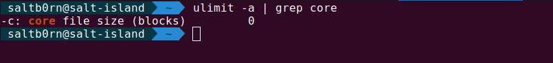
Figure 81: Core Dump 未开启
开启的方法分两种: 临时和永久. 由于篇幅有限, 这里只介绍临时开启.

Figure 82: 临时开启 Core Dump
可以看到
core file size变为unlimited, 也就是不限制core file大小了.然后再检查
/proc/sys/kernel/core_pattern里面的内容, 确保它是core, 这样在core dump时就会在程序运行时的目录下生成core file.编译项目时生成调试信息
目标文件没有调试信息的话,
core file能够提供的信息也是有限的,所以得把
Makefile-run-time改成如下:mymalloc.so: mymalloc.c gcc -g -DRUNTIME -shared -fpic -o mymalloc.so mymalloc.c -ldl mainr: main.c gcc -g -o mainr main.c .PHONY: run run: mainr mymalloc.so (LD_PRELOAD="./mymalloc.so" ./mainr)在做好准备后就可以重新构建项目并且运行, 这回会出现以下错误:
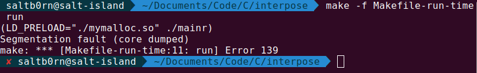
Figure 83: Core dump file for the example
然后在当前目录下会有类似
core.xxxxx这样的文件,xxxxx是pid.这个时候使用
gdb ./mainr core.xxxxx进入调试, 然后使用backtrace/bt/where命令查看backtrace.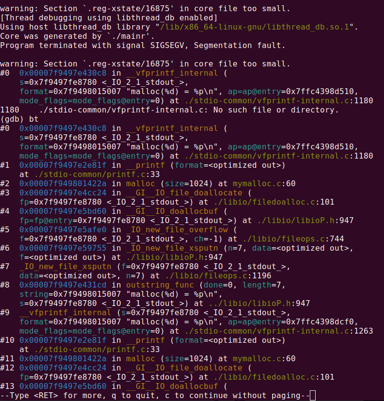
Figure 84: 从 Core File 中获取程序中止时的 backtrace (从后往前看才是函数的调用顺序)
可以看到
mymalloc.c的malloc和printf.c的__printf形成一个死循环调用,也就是说
malloc调用了printf,printf又调用了malloc, 导致栈溢出.这也是这种干预方案的不足, 一不小心就在拦截函数里面调用了一个引用了目标函数的函数从而导致无限递归.
所以换成内部没有调用
malloc的fprintf函数就解决问题了.
12. 之后的路
这篇笔记的例子的实际例子不多,因此我找了篇个不错的文章来当做补充:
这两个都包含了不少汇编和 C 互调的例子;为什么后面一直强调 C 语言的学习呢?
第一, C 语言比汇编更合适做跨平台的开发, 跨平台的细节会由编译器自动处理好.
第二, 基本上一眼就能从 C 语言就能看出编译器会生成什么汇编码, 也就是说 C 语言和汇编十分接近,
当然前提就是开发人员需要懂得汇编, 以及所使用的编译器是如何生成汇编码的.
因此, C 语言被称为"可移植汇编语言", 比起汇编语言来说更加实用.